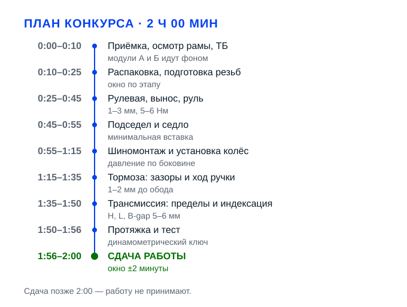
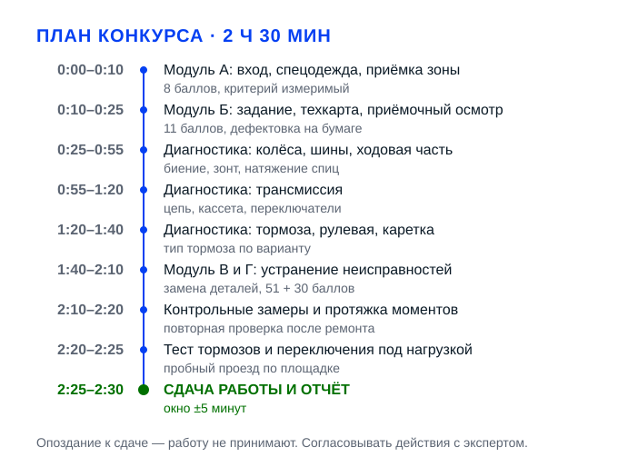
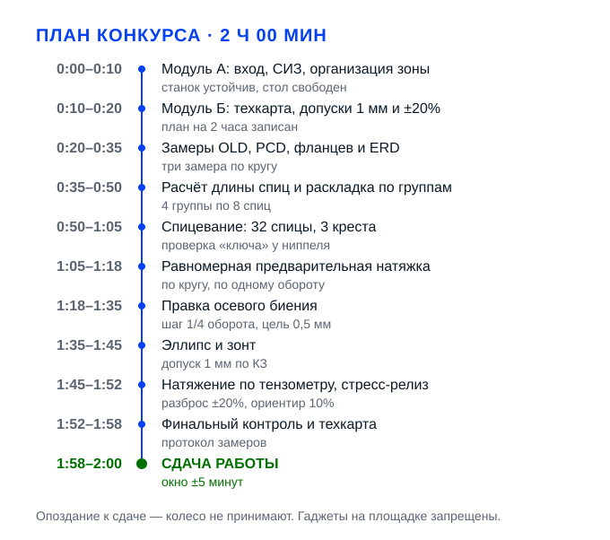

Веломеханика (Р)
Задания ниже — официальные файлы «Абилимпикс» (источник: abilympics-russia.ru), разложенные по категориям. Решения написаны по тексту задания, регламенту и критериям оценки; в них указано, что именно проверяет эксперт.
Школьник
14–16 лет, базовый уровень заданияВыдержка из официального конкурсного задания: страницы, относящиеся к категории «Школьник» (стр. 6–8 источника).
Пошаговое решение
Задание для школьников — собрать велосипед из коробки так, чтобы на нём можно было выехать на дорогу общего пользования. В комплекте приходят рама с вилкой, два колеса, руль, вынос, подседельный штырь, седло, педали, тормоза и трансмиссия, часть узлов организаторы могут поставить заранее. На всё даётся 2 часа и три модуля: организация работы и техника безопасности, работа с документацией и коммуникация, сборка и настройка. Оценивают не скорость, а последовательность: сначала приёмка и осмотр рамы, потом рулевая и посадочный узел, затем колёса, тормоза и трансмиссия, и только в конце — протяжка динамометрическим ключом и тест. Самое дорогое время — последние 15 минут: если оставить их на «докрутить», ошибки в тормозах и переключателях проявятся уже на сдаче.

Задача 1. Модуль А: подготовить бокс, инструмент и себяМодуль А · организация работы и техника безопасности
Модуль А идёт фоном через все два часа: его не сдают отдельно, его оценивают по тому, как выглядит рабочее место в начале, в середине и в конце. Задача — к первой минуте сборки получить безопасный, освещённый и размеченный бокс, в котором каждый ключ лежит на своём месте, а крепёж не смешан в одну кучу. Параллельно принимаем велосипед по упаковочному листу: то, что недосчитались сейчас, после старта получить уже негде.
Действие 1.1. Надеть средства защиты и осмотреть бокс
Шаг 1.1.1
Надеваем нитриловые перчатки, защитные очки и закрытую обувь, рукава застёгиваем или подворачиваем, шнурки убираем внутрь, длинные волосы собираем. Часы, кольца и браслеты снимаем: кассета, цепь и спицы — это вращающиеся части, а обезжириватель и смазка разъедают кожу под украшением. Очки обязательны не только при работе с аэрозолем, но и при первом накачивании покрышки на обод: борт садится с щелчком, и слетевшая монтажка летит в лицо.
Техника безопасности — отдельный критерий модуля А, и его снимают не один раз в конце, а по ходу всей работы, поэтому перчатки и очки должны быть на руках и на глазах в те минуты, когда вы действительно работаете с химией и колесом. Кроме баллов есть простая арифметика: порез о зубья кассеты останавливает сборку на 10–15 минут, а этого времени в двухчасовом задании просто нет.
Проверьте себя у зеркала или попросите волонтёра посмотреть со спины: перчатки без разрывов, очки сидят плотно, рукава не свисают ниже запястья, шнурки не видны. Пальцами проверьте, что кольцо и часы действительно сняты, а не сдвинуты выше костяшки.
Самая частая ошибка — работать в тонких одноразовых перчатках, которые рвутся о зубья звезды при первой же попытке поправить цепь, или снимать очки «на минутку» у насоса. Второй вариант — оставить широкий рукав: его затягивает между цепью и звездой, и вместо сборки участник разбирает заклинившую трансмиссию.
Эксперт фиксирует экипировку до старта и возвращается к ней, когда участник берёт обезжириватель или накачивает колесо. Оценивается не наличие перчаток в кармане, а то, надеты ли они в момент операции.
Шаг 1.1.2
Обходим бокс по периметру: пол сухой и не скользкий, свет падает на рабочую зону, розетки целые и с заземлением, стойка стоит на всех опорах и не шатается. Проверяем, что огнетушитель и аптечка на месте и видно, где они, а проход к сдаче не заставлен коробками. Велосипед в стойку зажимаем за подседельный штырь или за перья с мягкими губками, но не за верхнюю трубу: тонкостенную раму пережимает уже при 10–15 Нм зажима.
Модуль А прямо требует поддерживать рабочее место в безопасном состоянии в течение всего времени, и первый осмотр задаёт точку отсчёта: если стойка качается, каждая операция с колесом превращается в борьбу с падающим велосипедом. Мокрая плитка под боксом — самая частая причина падения с велосипедом в руках, а не аккуратность участника.
Стойка не двигается, если надавить на неё ладонью; велосипед в зажиме не проворачивается; розетка не искрит при включении лампы; коробки не перекрывают проход шириной хотя бы 60 см. Аптечка открывается одной рукой, огнетушитель не завален упаковкой.
Ошибка — зажать раму за верхнюю трубу «чтобы повыше было»: алюминий мнётся, а карбон трескается без внешних следов, и на финальном осмотре это читается как повреждение, которого не было. Вторая ошибка — оставить коробки в проходе, а потом спотыкаться о них с колесом в руках.
Эксперт проходит по боксу в первые минуты и отмечает устойчивость стойки, свободу прохода и то, лежит ли инструмент на полу. Отдельно смотрит, за что зажат велосипед: за подседел — норма, за раму — замечание.
Шаг 1.1.3
Раскладываем инструмент по зонам: шестигранники 2, 2,5, 3, 4, 5, 6 и 8 мм в держателе, динамометрический ключ с диапазоном 2–24 Нм, ключ на 15 для педалей и гаек оси, выжимка цепи, две монтажки, насос с манометром, тензометр или спицевой ключ. Крепёж не сваливаем в одну банку: болты выноса, подседела, тормозов и флягодержателя раскладываем по ячейкам лотка, потому что болт M5×18 и M5×25 внешне почти одинаковы, а по резьбе в раме это выясняется уже при затяжке.
Порядок на столе экономит не эстетику, а секунды: в двухчасовом задании поиск нужного ключа по всему боксу съедает 5–7 минут, и эти минуты берутся из настройки переключателей. Разложенный инструмент — это ещё и критерий организации рабочего места: эксперт видит, умеет ли участник работать системно, а не наугад.
На коврике лежит ровно тот инструмент, который нужен для этой сборки, и каждый предмет возвращается на место после операции. Крепёж рассортирован, лоток не перевёрнут, на полу ничего нет. Проверьте рукой: проведите ладонью по столу — ни стружки, ни капель смазки.
Инструмент, брошенный на раму, оставляет сколы на краске, а ключ, забытый под велосипедом, — это потеря 2–3 минут и лишний риск. Смешанный крепёж приводит к сорванной резьбе: короткий болт в глубоком отверстии держит всего две нитки и вырывается при первом же торможении.
Эксперт смотрит на организацию зоны в первые 10 минут и потом отмечает, возвращается ли инструмент на место. Хаос на столе к середине сборки читается как потеря контроля над процессом.
Действие 1.2. Принять велосипед и комплектующие
Шаг 1.2.1
Берём упаковочный лист и идём по нему сверху вниз: рама с вилкой, переднее и заднее колесо, руль, вынос, подседельный штырь, седло, педали, тормозные ручки, переключатели, цепь, крылья, багажник, звонок, комплект ключей. Каждую позицию отмечаем карандашом прямо в листе, а не «запомнили». Если чего-то нет или деталь повреждена, останавливаемся и идём к эксперту до начала сборки, а не после.
Приёмка — единственная минута, когда недостающее ещё можно получить: после старта замена идёт только через главного эксперта, и то если причина признана уважительной. Пропущенный при приёмке дефект потом выглядит как ваша ошибка сборки, и доказывать обратное уже поздно, потому что деталь стоит на велосипеде.
Все строки листа отмечены, расхождения записаны словами: чего нет, сколько, в каком виде. Комплектующие разложены по группам так, чтобы каждая позиция была видна и не лежала в общей куче. Если сомневаетесь в размере — приложите деталь к посадочному месту, не затягивая.
Начать сборку, не сверив лист, — самая дорогая ошибка этапа: нехватка педалей или замка цепи обнаруживается в конце, когда время на сдачу уже подходит. Вторая — молча «обойтись» одной деталью: велосипед без крыла или звонка формально не готов к эксплуатации, и модуль В закрывается с потерей баллов.
Эксперт подходит к боксу во время приёмки и смотрит, сверяется ли участник с листом или импровизирует. Отдельно фиксирует, сообщил ли участник о недостаче сразу и внятно.
Шаг 1.2.2
До сборки осматриваем раму и вилку: сварные швы на предмет трещин, перья и нижнюю трубу — на вмятины, дропауты — на погнутость и развал, резьбу каретки и бонки — на срыв. Вилку проверяем на люфт в штанах и на задиры на ногах, петух заднего переключателя — на отклонение от плоскости. Все находки записываем в чек-лист с указанием места, даже если это царапина на пере.
Повреждение рамы, замеченное после сборки, невозможно отличить от того, которое участник сделал сам, поэтому осмотр до первого болта — это ваша страховка. Погнутый петух, например, не даст выставить задний переключатель ни при каком натяжении троса, и настройка будет заведомо провалена.
Рама без трещин и вмятин, дропауты параллельны, петух совпадает с плоскостью кассеты на глаз и по линейке. Резьба каретки заходит от руки на два-три оборота. Все замеченные дефекты перечислены в чек-листе, а не только запомнены.
Пропустить погнутый петух — потом полчаса крутить винты H и L и списать неудачу на «плохой переключатель». Осматривать раму в перчатках с грязными пальцами тоже плохо: следы смазки скрывают тонкие трещины у шва.
Эксперт может спросить, что именно участник нашёл при осмотре, и по ответу видит, осматривал он раму или просто распаковал её. Зафиксированные дефекты снимают с участника ответственность за них.
Шаг 1.2.3
Крепёж разбираем по группам и проверяем комплектность: четыре болта выноса одинаковой длины, два болта подседельного зажима, болты тормозных колодок, винты флягодержателя, гайки оси. Резьбу протираем и смазываем тонким слоем консистентной смазки, а болты ротора и калипера сажаем на синий фиксатор резьбы. Шайбы ставим под головку, а не под гайку, если так собрано с завода.
Смазанная резьба даёт стабильный момент затяжки: на сухой резьбе динамометрический ключ щёлкает при том же усилии, но болт не дотягивает, и соединение ослабевает через 20–30 км. Синий фиксатор на тормозных болтах — единственная защита от самоотвинчивания при вибрации, красный здесь не нужен и только испортит резьбу.
Каждая группа болтов лежит в своей ячейке, длина совпадает с посадочным отверстием, шайбы на месте. Болт заходит от руки минимум на три оборота; если идёт туго — резьба грязная или шаг другой, и силу применять нельзя.
Перепутать болты выноса и калипера — типичная ошибка: короткий болт в глубоком отверстии держит две нитки и вырывается при торможении. Наносить фиксатор на грязную резьбу бессмысленно: он не полимеризуется и болт отходит.
Эксперт смотрит, рассортирован ли крепёж, и проверяет на финале, не осталось ли лишних деталей в лотке. Лишний болт в конце означает, что где-то недотянуто.
Действие 1.3. Обращаться с химией и утилизировать отходы
Шаг 1.3.1
Работаем с четырьмя средствами: смазка для цепи, консистентная смазка для подшипников и резьб, синий фиксатор резьбы и обезжириватель. Фиксатор наносим каплей 3–4 мм на чистую обезжиренную резьбу и даём 10–15 минут на полимеризацию, смазку для цепи — по одному звену, а не струёй. Обезжириватель распыляем на тряпку, а не на деталь, и только при открытой вентиляции; баллон держим на расстоянии 20–25 см от лица.
Химия — часть критерия по безопасному использованию материалов: оценивается и дозировка, и то, не попадает ли смазка на тормозные колодки и ротор. Попавшее на колодку масло выгорает только после полной замены, и тормоз теряет эффективность именно на том велосипеде, который вы сдаёте.
Фиксатор нанесён точечно, лишнего на деталях нет, тряпка с обезжиривателем лежит отдельно от чистых деталей. На роторе и колодках нет масляных пятен — проверьте бумажной салфеткой: она должна остаться сухой и светлой.
Лить смазку на цепь струёй — потом она стекает на обод и колодки, и тормоз начинает визжать и не держать. Использовать красный фиксатор «чтобы наверняка» — болт потом не отвернуть без нагрева, а на алюминиевой резьбе он срывает нитки.
Эксперт смотрит на дозировку и на чистоту тормозных поверхностей: масляное пятно на роторе видно сразу и стоит баллов в модуле В. Отдельно фиксирует, вытерт ли ротор после монтажа и не осталось ли на нём следов пальцев.
Шаг 1.3.2
Упаковку разбираем по видам: картон в один контейнер, плёнку и стяжки в другой, промасленные тряпки — в отдельный металлический ящик или плотный пакет, а не в общую урну. Стяжки срезаем бокорезами под наклоном, чтобы острый конец не торчал, и сразу убираем в контейнер. Стружку от выжимки цепи и обрезки троса собираем магнитом или тряпкой, потому что они невидимы на полу, но отлично прокалывают покрышку.
Уборка по ходу — это и есть «поддерживать рабочее место в безопасном состоянии на протяжении всего времени»: эксперт оценивает не финальную картинку, а то, как бокс выглядит на 20-й, 60-й и 100-й минуте. Кусок троса на полу в конце сборки означает, что его не убрали вовремя, и это отдельное замечание.
На полу нет стяжек, стружки и капель, контейнеры не переполнены, промасленная тряпка не лежит на раме или на инструменте. Проверьте рукой в перчатке: проведите по полу у стойки — ладонь должна остаться чистой.
Бросить срезанную стяжку «потом уберу» — она забивается под колесо, и велосипед на тесте дёргается. Оставить промасленную тряпку на раме — остаётся жирное пятно, которое на финальном осмотре читается как небрежность сборки.
Эксперт обходит боксы в середине конкурса и отмечает состояние пола и стола. Чистая зона к сдаче при грязной середине не спасает: оценивается процесс, а не последняя минута.
Задача 2. Модуль Б: работать по документации и говорить с экспертомМодуль Б · технологические карты и коммуникация
Модуль Б проверяет не красноречие, а способность найти в руководстве нужную цифру и объяснить свои действия. В комплекте с велосипедом идёт руководство, на деталях есть маркировка, а в чек-листе — графы, которые надо заполнять по ходу, а не в конце. Здесь же решается, как участник ведёт себя, когда чего-то не хватает: молчание или внятное сообщение эксперту с указанием детали и дефекта.
Действие 2.1. Найти в документации моменты затяжки и порядок операций
Шаг 2.1.1
Открываем руководство на таблице моментов затяжки и выписываем на лист только те позиции, которые есть на этом велосипеде: вынос, подседельный зажим, седло, тормозные болты, ротор, шатуны, педали, эксцентрики. Там же смотрим порядок затяжки болтов выноса — крест-накрест, в два-три подхода по 1–2 Нм. Если таблицы нет, берём типовые значения и проговариваем их эксперту вслух, чтобы было понятно, откуда цифра.
Модуль Б прямо требует читать и находить технические данные в руководстве, и эксперт проверяет именно навык поиска, а не память. Затяжка «до упора от руки» на алюминиевом выносе срывает резьбу уже при 8–9 Нм, а недотянутый вынос проворачивается на первой кочке — оба варианта видны на тесте.
На листе выписаны все позиции с цифрами и единицами измерения, порядок крест-накрест отмечен схемой из четырёх точек. Сверьте, что единицы именно Ньютон-метры, а не дюйм-фунты: 5 Нм и 5 in-lb отличаются в 8,8 раза.
Взять момент из головы «примерно 10 Нм» — на карбоновом подседеле это трещина, на стальном — вмятина. Перепутать единицы измерения — самая тихая ошибка: ключ щёлкает, а соединение остаётся незатянутым.
Эксперт подходит и спрашивает момент для конкретного болта. Ответ по памяти без ссылки на руководство засчитывается хуже, чем ответ с открытой таблицей.
Шаг 2.1.2
Читаем маркировку на деталях до установки: на покрышке — максимальное давление и стрелка направления вращения, на ободе — диаметр 622 или 559 и допустимое давление, на цепи — тип 1/2×3/32 и число скоростей, на подседельном штыре — минимальная глубина вставки, на переключателе — стрелки натяжения троса. Маркировку фотографировать нельзя, поэтому переносим ключевые цифры в чек-лист.
Половина ошибок сборки — это установленная не той стороной покрышка или цепь от другой трансмиссии. Направление протектора влияет на сцепление и отвод воды, а цепь на 9 скоростей на 8-скоростной кассете застревает между звёзд и рвёт переключатель на первой же поездке.
Стрелка на боковине смотрит вперёд по ходу движения, цифры давления и диаметра переписаны без ошибок, тип цепи совпадает с числом звёзд кассеты. Глубина вставки подседела видна по нанесённой линии и не превышена.
Поставить покрышку против стрелки — на асфальте это почти незаметно, а на грунте велосипед срывается в повороте. Взять цепь «какая есть» — она не садится на зубья и клинит при переключении. Покрышка с направленным протектором, поставленная задом наперёд, на сухом асфальте почти не заметна, а на мокром грунте ведёт себя непредсказуемо.
Эксперт проверяет направление покрышки и совпадение цепи с трансмиссией на финальном осмотре. А по чек-листу он видит, переписывал ли участник данные или ставил наугад.
Действие 2.2. Вести чек-лист и сообщать о проблемах
Шаг 2.2.1
Чек-лист заполняем по ходу сборки: отметка этапа, время начала и окончания, что проверено, какой момент затяжки применён. Пишем разборчиво и коротко, например «вынос 5,5 Нм, крест-накрест, 0:34». В графе замечаний фиксируем царапины и недостачу, а не только итог «собрано». Записи делаем карандашом, а не ручкой поверх смазанного листа, и не откладываем на потом: через двадцать минут вы уже не вспомните, тянули ли болты ротора.
Модуль Б оценивает умение заполнять отчёты и реагировать на проблемы, и чек-лист — единственный документ, который остаётся после участника. По нему эксперт видит последовательность работы: если все галочки поставлены одной минутой в конце, значит, контроль был формальным.
Каждый этап отмечен в момент выполнения, время совпадает с реальным ходом работы, замечания записаны словами. Проверьте: чужой человек по вашему листу должен понять, что и когда вы делали. Дата и фамилия — в шапке листа, иначе работу невозможно идентифицировать при сдаче.
Заполнить чек-лист в последние пять минут «по памяти» — это сразу видно по одинаковому почерку и одинаковому времени. Пропустить графу замечаний — и найденная царапина превращается в вашу недоработку.
Эксперт просматривает чек-лист при сдаче и сверяет время этапов с журналом площадки. Расхождение в 20–30 минут означает, что лист заполнялся не по ходу.
Шаг 2.2.2
Если деталь отсутствует, повреждена или не подходит, формулируем сообщение в три части: что за деталь, в чём дефект, что нужно сделать. Например: «Переднее колесо, погнут фланец втулки, нужна замена колеса или разрешение на правку». Говорим эксперту площадки, а не соседу по боксу, и не берём детали из чужого комплекта. Не кричим через бокс и не отвлекаем других участников: подходим к эксперту, когда он не занят.
Модуль Б проверяет коммуникацию на рабочем месте, и оценивается именно ясность: эксперт должен понять проблему с первого раза. Молчание и попытка исправить неисправную деталь своими силами приводят к тому, что на финале дефект выглядит как ваша ошибка сборки.
Сообщение содержит деталь, дефект и требуемое действие, эксперт подтвердил, что понял, и решение зафиксировано в чек-листе. Если вам разрешили продолжить с дефектом, это записано, а не осталось на словах.
Сказать «там колесо плохое» и уйти — эксперт не поймёт, о чём речь, а время уйдёт. Взять деталь из соседнего бокса — это уже нарушение регламента, а не смекалка. Формулировка «всё плохо» не даёт эксперту возможности помочь, и время уходит на уточняющие вопросы.
Эксперт оценивает, подошёл ли участник с вопросом вовремя и насколько конкретно он его задал. Внятный вопрос часто приносит больше баллов, чем молчаливая попытка всё исправить.
Задача 3. Модуль В: собрать рулевую, руль и посадочный узелМодуль В · сборка: рама, вилка, руль, седло
Сначала распаковка и подготовка резьб, потом рулевая колонка, вынос и руль, затем подседельный штырь и седло. Это самая заметная часть сборки: именно здесь появляются царапины на вилке и перетянутые болты. Правило одно — сначала собрать на руку, выставить геометрию, и только потом тянуть динамометрическим ключом по схеме крест-накрест, чтобы фланец выноса не перекосило.
Действие 3.1. Распаковать велосипед и подготовить поверхности
Шаг 3.1.1
Коробку ставим на пол, срезаем верхние стяжки бокорезами и вынимаем велосипед вдвоём или за раму и вилку, но не за тросы. Снимаем картон, пенопластовые прокладки и транспортные хомуты с руля, шатунов и заднего переключателя; стяжки режем, а не рвём, чтобы не порезать тросы и гидролинии. Колёса кладём ротором вверх, а не на бетон, иначе диск получает восьмёрку ещё до установки.
Аккуратная распаковка — первое, что видит эксперт, и первое, что экономит деньги: погнутый при вынимании ротор не правится до нуля, а замена диска в конкурсное время невозможна. Транспортные хомуты часто пережимают трос переключателя, и если их срезать неправильно, рубашка лопается у наконечника.
На раме нет новых царапин, тросы целые, ротор не касался пола, все прокладки и стяжки в контейнере. Проверьте рукой: проведите по нижней трубе и перьям — ни заусенцев, ни остатков скотча. Осмотрите и ротор: на нём не должно быть свежих задиров и следов удара о бетон.
Тянуть велосипед за тросы — рубашка выходит из наконечника, и потом тормоз не настраивается. Класть колесо ротором вниз — диск гнётся о бетон, и зазор 0,3–0,5 мм превращается в постоянное трение. Ротор после удара о пол правится лишь приблизительно, и биение остаётся 0,5–1 мм.
Эксперт смотрит на распаковку и на то, куда участник складывает упаковку. Царапина, появившаяся при распаковке, отличается от заводской по свежему краю и сразу заметна на финальном осмотре.
Шаг 3.1.2
Протираем и смазываем все посадочные места: резьбу болтов выноса, шток вилки, подседельный штырь, резьбу педалей, бонки флягодержателя. Смазки должно быть ровно столько, чтобы палец оставлял блеск, а не слой. Резьбу каретки и тормозных болтов обезжириваем перед фиксатором, а подседел в алюминиевой раме смазываем обязательно, чтобы он не прикипел. Излишки смазки убираем тряпкой, иначе они соберут пыль и превратятся в абразив.
Сухая резьба даёт ложное ощущение затяжки: ключ упирается, а болт стоит на половине глубины. Смазка подседела в алюминии — не про удобство, а про коррозию: без неё штырь за год прикипает так, что его вырезают. Смазка вытесняет воду из зазора и не даёт окислам схватить металл.
Резьба блестит от тонкого слоя, лишнего не видно, на тормозных поверхностях смазки нет. Подседел входит в трубу от руки до метки минимальной вставки, не закусывая. И проверьте, что в трубе рамы нет стружки после транспортировки.
Нанести смазку на ротор или колодки — тормоз начинает визжать и теряет эффективность, а колодки меняют только комплектом. Смазать резьбу выноса густо — при затяжке смазка выдавливается на фланец, и болт отходит.
Эксперт проверяет чистоту рук и деталей: следы смазки на тормозном диске видны по радужным разводам, и это отдельный минус в модуле В. Он же смотрит, не осталось ли смазки на ручках тормоза и на грипсах.
Действие 3.2. Собрать рулевую колонку, вынос и руль
Шаг 3.2.1
Ставим вилку в рулевую трубу: нижний подшипник садится на конус штока до упора, верхний — в чашку рамы, затем кольца и вынос. Топ-кэп закручиваем якорным болтом на 4–5 Нм, чтобы выбрать люфт подшипников, но не сжать их. Болты выноса на этом этапе ослаблены, иначе топ-кэп не подтянет подшипник, а просто упрётся в вынос. После подтяжки проверяем люфт и только потом тянем вынос.
Порядок здесь важнее усилия: если сначала затянуть вынос, а потом топ-кэп, подшипник останется с люфтом или, наоборот, зажмётся, и руль будет поворачиваться с хрустом. Это базовый критерий модуля В — рулевая без люфта и без закусывания, и проверяется он покачиванием при зажатом тормозе.
Зажмите передний тормоз и покачайте велосипед вперёд-назад, держась за руль у выноса: стука и щелчка быть не должно. Поднимите переднее колесо и поверните руль от упора до упора — вращение плавное, без заеданий и без ощущения «тугого» подшипника.
Затянуть топ-кэп «до упора» — подшипник сминается, руль поворачивается рывками, и на тесте велосипед уводит в сторону. Оставить люфт — на кочке появляется стук, а чашки разбиваются за одну поездку. Оба варианта слышны на тесте, и оба стоят баллов.
Эксперт проверяет рулевую покачиванием и поворотом руля, а также смотрит, не осталось ли зазора между выносом и верхним кольцом. Отдельно слушает, нет ли хруста при повороте руля от упора до упора.
Шаг 3.2.2
Выравниваем вынос по переднему колесу: смотрим сверху, чтобы ось выноса совпадала с осью покрышки, и проверяем по боковым зазорам между покрышкой и перьями вилки. Затягиваем два болта выноса крест-накрест в два подхода — сначала 3 Нм, потом 5–6 Нм, чтобы фланец сел ровно. Зазор в разрезе выноса должен остаться одинаковым сверху и снизу. Болты тянем по одному, а не сразу парой, иначе фланец перекашивается.
Перекошенный вынос — это велосипед, который едет не туда, куда смотрит руль, и на прямой видно, что покрышка стоит под углом. Крест-накрест нужно потому, что при затяжке одного болта фланец перекашивается, и второй болт входит с перекосом, срывая резьбу.
Ось выноса и ось колеса совпадают на глаз и по линейке, приложенной к боковине покрышки. Зазоры слева и справа от покрышки в вилке одинаковые. Болты затянуты с одинаковым усилием, головки не выступают на разную высоту.
Тянуть один болт до 6 Нм, а второй потом — фланец перекашивается, и вынос трескается по разрезу. Выравнивать вынос после затяжки, проворачивая его руками — покрышка уходит вбок, а болты теряют момент.
Эксперт смотрит на велосипед спереди: перекошенный вынос виден по покрышке и по рулю. Проверяет и зазор в разрезе — он должен быть ровным. И то, не сместился ли вынос после затяжки.
Шаг 3.2.3
Ставим руль в зажим выноса, выставляем угол по меткам на трубе и симметрию по линейке: расстояние от торца грипсы до центра выноса слева и справа должно совпадать с точностью до 2–3 мм. Затягиваем четыре болта крышки крест-накрест, по 1 Нм за подход, до 5–6 Нм. Тросы и гидролинии не должны перекрещиваться перед рулевой трубой. Грипсы надеваем до конца, чтобы у торца не осталось голого металла.
Симметрия руля — это управляемость: при разнице 10 мм велосипед уводит в сторону, и участник на тесте инстинктивно подруливает. Пережатые болты крышки сминают руль в месте зажима, а на алюминии остаётся вмятина, которая работает как концентратор напряжения.
Расстояние от торцов до центра выноса одинаковое, метки угла совпадают с меткой на выносе, зазор между крышкой и выносом равномерный по всей длине. Руль не проворачивается, если упереться в грипсу и надавить вниз всем весом.
Затянуть крышку с одной стороны — руль проворачивается при торможении, и участник падает через руль. Поставить руль без учёта меток — тросы оказываются натянутыми, и руль поворачивается только на 40 градусов.
Эксперт проверяет симметрию руля линейкой и пробует провернуть его руками. Смотрит также, не зажаты ли тросы между рулём и рамой. Заодно проверяет, надеты ли грипсы до упора и нет ли люфта.
Действие 3.3. Установить подседельный штырь и седло
Шаг 3.3.1
Смазываем подседельный штырь тонким слоем и вставляем в трубу, соблюдая минимальную глубину вставки, нанесённую линией или насечкой. Высоту ставим по инструкции к велосипеду: для прогулочной посадки седло примерно на уровне руля, а не «чтобы нога доставала до земли». Зажим закрываем эксцентриком или болтом с моментом 5–7 Нм. Штырь смазываем, чтобы он не прикипел к трубе рамы.
Слишком высокое седло — это потеря контроля и боль в колене, слишком низкое — нагрузка на колени и невозможность нормально крутить. Минимальная вставка нужна потому, что ниже неё труба рамы не рассчитана на изгиб, и при езде она лопается по сварному шву.
Штырь вставлен не меньше чем на 80–90 мм, линия минимальной вставки не видна над зажимом. Седло не качается, если надавить на него сверху и попробовать повернуть. Эксцентрик закрывается с усилием ладони, а не двумя пальцами.
Выдвинуть штырь выше метки — самая опасная ошибка новичка: рама лопается под седлом, и это уже не баллы, а травма. Закрыть эксцентрик «до щелчка» без усилия — седло проворачивается на первой кочке. Седло срывается вниз на первой кочке, и участник теряет равновесие.
Эксперт проверяет, видна ли линия минимальной вставки, и пробует провернуть седло. Отдельно смотрит, не поцарапан ли штырь зажимом при установке. Ставит седло под нагрузкой, надавливая всем весом.
Шаг 3.3.2
Выставляем седло по уровню: строительный уровень кладём на седло вдоль велосипеда и добиваемся горизонтали, затем проверяем нос — он должен смотреть строго по оси рамы. Затягиваем болты рельсов крест-накрест: для двухболтового зажима 8–10 Нм, для одноболтового 12–15 Нм. После затяжки проверяем, что рельсы не выскочили из паза. После затяжки ещё раз проверяем уровень, потому что седло садится на 1–2 мм.
Наклонённое вниз седло заставляет участника съезжать вперёд и перегружать руки, а задраное вверх упирается в таз и делает посадку неустойчивой. Перетянутый зажим сминает рельсы, и седло начинает качаться на них, как на шарнире. Ровное седло — это ещё и правильная работа мышц ног.
Седло горизонтально по уровню, нос по оси рамы, рельсы в пазу зажима по всей длине. Надавите на нос и на заднюю часть по очереди — седло не качается и не щёлкает. Осмотрите зажим: рельсы не должны быть зажаты только с одной стороны.
Затянуть седло, не выставив угол, — потом его приходится двигать под нагрузкой, и рельсы царапаются. Перетянуть одноболтовый зажим до 20 Нм — трескается верхняя пластина, и седло держится на одном болте.
Эксперт смотрит на седло сбоку: наклон виден сразу. Проверяет качание рукой и осматривает рельсы на предмет зажимов и царапин. Смотрит на зазор между рельсами и верхней пластиной зажима.
Задача 4. Модуль В: шиномонтаж и установка колёсМодуль В · колёса: шиномонтаж и посадка
Колесо — единственная деталь, которая касается земли, и все ошибки шиномонтажа проявляются сразу: восьмёрка, спущенная камера, покрышка, соскочившая с борта. Сначала монтируем покрышку с контролем направления и посадки борта, потом ставим колесо в дропауты и закрываем эксцентрик с правильным усилием. Отдельно проверяем биение и натяжение спиц, потому что «колесо из коробки» почти всегда требует подтяжки.
Действие 4.1. Смонтировать покрышку и проверить колесо
Шаг 4.1.1
Проверяем ободную ленту: она должна закрывать все ниппельные отверстия и не быть перекошенной. Кладём покрышку стрелкой по ходу вращения, первый борт заводим руками по всему кругу. Камеру подкачиваем на 0,2–0,3 бар, чтобы она приняла форму, вставляем ниппель в отверстие и заправляем камеру в покрышку. Второй борт заводим монтажками с шагом 15–20 см, придерживая камеру пальцем, чтобы не защемить её между бортом и ободом.
Защемлённая камера — это «змеиный укус» и мгновенный прокол при первом же накачивании, а покрышка, поставленная против стрелки, теряет сцепление на мокром асфальте. Шиномонтаж — отдельный пункт модуля В, и оценивается именно техника: без монтажек через край, без повреждения камеры.
Контрольная линия на боковине покрышки идёт параллельно ободу на одинаковом расстоянии по всему кругу. Камера не видна между бортом и ободом, ниппель стоит ровно, покрышка сидит без перекосов. Ни одного бугорка под ободом и ни одного перекоса у ниппеля.
Заводить второй борт одной монтажкой с усилием — камера защемляется, и при накачивании раздаётся хлопок. Ставить покрышку без учёта стрелки — на грунте велосипед срывается в повороте, и это замечают на тесте.
Эксперт смотрит на посадку борта и на направление покрышки, а также проверяет, не повреждена ли камера при монтаже. Следы монтажки на ободе тоже считаются.
Шаг 4.1.2
Накачиваем насосом с манометром до давления, указанного на боковине: для покрышки 26×2,0 это обычно 2,0–2,5 бар, для городской 28×1,75 — 3,5–4,5 бар. Качаем ступенями, после каждых 0,5 бар проверяем, ровно ли сел борт. Если покрышка где-то «провалилась», спускаем до нуля, поправляем руками и накачиваем заново, а не добиваем давлением. Манометр держим в руке, а не на полу, и не качаем «на глаз».
Давление по боковине — это предел, а не рекомендация, и превышение даёт разрыв борта на солнце. Недокачанное колесо на асфальте катится тяжело и пробивается на стыках, а на грунте наоборот — слишком твёрдое колесо теряет сцепление и кидает велосипед в сторону.
Манометр показывает давление в пределах, указанных на покрышке, контрольная линия борта на одинаковой высоте по всему кругу. Прокрутите колесо и посмотрите на борт сбоку: он не должен «гулять» вверх-вниз.
Качать «на глаз» без манометра — на 4 бар покрышка 26×2,0 может разбортироваться на ходу. Оставить колесо с недожатым бортом — при повороте покрышка сходит с обода, и камера рвётся у ниппеля. Проверяйте борт после каждой ступени давления, а не только в конце.
Эксперт проверяет давление манометром и осматривает посадку борта. Отдельно смотрит, не перекачано ли колесо: на ощупь оно каменное, а это видно и без прибора.
Шаг 4.1.3
Ставим колесо в раму или в станок и раскручиваем: смотрим зазор между ободом и тормозной колодкой или пером. Боковое биение больше 1–2 мм и радиальное больше 2 мм — повод подтянуть спицы: на четверть или половину оборота, с противоположной стороны от отклонения. Натяжение проверяем пальцами — спицы должны звучать одинаково, а не одна звенеть, а другая болтаться.
Колесо из коробки почти всегда имеет восьмёрку до 2–3 мм, потому что при транспортировке спицы садятся. Если этого не поправить, тормоз будет цеплять обод, а на дисковом тормозе ротор начнёт тереться о колодку, и колесо будет тормозить само. Спица, ослабленная до нуля, ломается у ниппеля при первом ударе.
Биение измеряется линейкой, прижатой к перу: зазор меняется не больше чем на 1–2 мм. Спицы звучат одинаково при щипке, колесо не «виляет» при медленном вращении. Ротор не касается колодок. Проверьте и боковое биение на станке, если он есть в боксе.
Крутить ниппель на полтора оборота сразу — обод уходит в другую сторону, и появляется яйцо. Тянуть спицы «на глаз» без контроля натяжения — одна перетянутая спица рвёт обод при первом ударе. Полтора оборота ниппеля заводят обод в другую сторону, и появляется яйцо, которое правится уже на станке.
Эксперт прокручивает колесо и смотрит на зазор у колодок. Проверяет натяжение щипком и оценивает, ровно ли колесо стоит по центру вилки. И слушает, не цокает ли колесо о колодку при вращении.
Действие 4.2. Установить колёса и отрегулировать крепление
Шаг 4.2.1
Заводим цепь на самую маленькую звезду кассеты, чтобы она не мешала посадке колеса. Ставим колесо в дропауты до упора, следя, чтобы ротор вошёл между колодками без перекоса, а ось села в паз до конца. Затягиваем гайки оси ключом на 15: передняя 18–20 Нм, задняя 20–25 Нм, крест-накрест, если гаек две. Гайки затягиваем в два подхода, чтобы колесо не увело в сторону.
Недожатое колесо смещается в дропаутах при торможении, и ротор начинает цеплять калипер, а цепь — переключатель. Перетянутая гайка сминает алюминиевые дропауты, и колесо потом стоит с перекосом, который невозможно убрать. Смещённое колесо на дисковом тормозе ещё и трёт ротором о калипер.
Ось в пазу до упора, колесо по центру вилки и перьев, гайки затянуты равномерно. Покачайте колесо рукой из стороны в сторону — люфта в оси и в дропаутах быть не должно. Прокрутите колесо: оно должно вращаться по центру, не касаясь перьев.
Поставить колесо, не заведя ось в паз до конца, — колесо вылетает при первом ударе. Затянуть гайку только с одной стороны — колесо стоит под углом, и тормоз трёт по ободу. Колесо, затянутое с одной стороны, стоит криво и стирает покрышку о перо.
Эксперт проверяет посадку колеса в дропаутах и затяжку гаек, а также смотрит, ровно ли колесо стоит относительно пера. И проверяет, не осталось ли на гайках следов сорванной резьбы.
Шаг 4.2.2
Если стоит эксцентрик, вставляем его ось до упора, придерживаем колесо по центру и закрываем рычаг ладонью с усилием 12–15 кг: он должен оставить след на руке, но не требовать молотка. Гайку на самом эксцентрике не крутим — она регулирует только натяжение рычага. Рычаг разворачиваем назад или вверх, чтобы он не цеплялся за ветки и ногу. Рычаг закрываем одной ладонью, а не двумя руками.
Эксцентрик — это не зажим «до упора»: слишком слабый рычаг даёт смещение колеса при торможении, слишком тугой ломает ось или рычаг. Направление рычага важно на реальной дороге, и эксперт оценивает велосипед именно как готовый к эксплуатации. Слишком тугой рычаг ломает ось, слишком слабый — смещает колесо.
Рычаг закрывается с заметным сопротивлением, оставляет вдавленный след на ладони и не открывается от случайного касания. Колесо не смещается, если ударить по нему ладонью сбоку. Рычаг смотрит назад. Проверьте оба колеса: на переднем рычаг закрывается с тем же усилием, что и на заднем.
Закрутить гайку эксцентрика ключом — резьба срывается, и рычаг болтается. Оставить рычаг вперёд — он цепляется за препятствие и открывается на ходу. Рычаг, закрытый с усилием двух рук, деформирует ось, и колесо потом встаёт с перекосом в дропаутах.
Эксперт пробует закрыть и открыть эксцентрик сам и смотрит на направление рычага. Слишком лёгкое закрытие читается как недотянутое колесо. И на то, не цепляет ли рычаг за перо вилки.
Шаг 4.2.3
Проверяем зазоры по кругу: между покрышкой и пером, между ободом и колодкой, между ротором и калипером, между кассетой и рамой. Крутим колесо и слушаем — не должно быть шороха, щелчков и задевания. Проверяем, что цепь сидит на звезде кассеты, а не между звездой и рамой. Зазор между покрышкой и пером оставляем не меньше 3 мм, а между колодкой и ободом — 1–2 мм: при езде колесо играет, и этот запас выбирается на первой кочке.
Зазор в 1–2 мм на глаз кажется мелочью, но при езде колесо играет на неровностях, и покрышка начинает тереть перо, стирая краску до металла. Кассета, касающаяся рамы, — это трещина в пере и потеря модуля целиком. Трение о перо стирает не только краску: алюминий истончается, и перо лопается по шву.
Все зазоры одинаковые по кругу, колесо вращается свободно и по инерции делает несколько оборотов. При раскрутке нет ни шороха, ни ритмичного задевания. Цепь лежит на зубьях кассеты по всей ширине. Проверьте и зазор у калипера, а не только у перьев.
Оставить колесо с перекосом — покрышка трёт перо, и на финале видна полоса стёртой краски. Не проверить зазор у калипера — ротор трётся, и велосипед не катится накатом. Зазор, выставленный «в ноль», на ходу превращается в постоянное трение и визг.
Эксперт раскручивает колесо и слушает. Свободный ход и отсутствие посторонних звуков — один из самых быстрых способов проверить сборку. И осматривает перья на предмет потёртостей от покрышки.
Задача 5. Модуль В: настроить тормозную системуМодуль В · тормоза: зазоры, центровка, ход ручки
Тормоз — единственная система, ошибка в которой стоит здоровья, поэтому настройка идёт от геометрии: сначала центруем рычаги, потом выставляем зазор 1–2 мм и небольшой наклон колодки, и только в конце натягиваем трос и проверяем ход ручки. Для дискового тормоза логика та же, но вместо зазора до обода мы добиваемся просвета 0,3–0,5 мм между ротором и колодками.
Действие 5.1. Проверить рубашки, трос и центровку
Шаг 5.1.1
Проверяем рубашки по всей длине: без переломов, заломов и разлохмаченных концов, наконечники на месте. Трос вытягиваем из рубашки, осматриваем на ржавчину и обрыв нитей, смазываем силиконовой смазкой и заводим обратно. Ручку жмём несколько раз: она должна ходить плавно, без заеданий и с характерным возвратом. При снятом тросе проверяем и сам зажим: он не должен быть смят от предыдущей затяжки.
Рубашка с переломом работает как пружина: ручка жмётся, а усилие до тормоза не доходит. Лохматый трос застревает в наконечнике, и тормоз отпускает с задержкой — на спуске это разница между остановкой и падением. Рубашка, забитая грязью, работает как тормоз: ручка жмётся тяжело, а колодки сходятся медленно.
Ручка ходит плавно от упора до упора и возвращается сама, без помощи пальца. Трос блестит от смазки, нити не торчат, наконечники сидят плотно. При нажатии нет хруста и скрипа внутри рубашки. Проверьте и наконечники на люфт в упорах.
Оставить ржавый трос «он ещё ходит» — он рвётся в самый неподходящий момент, обычно при экстренном торможении. Смазать трос густой смазкой — она собирает пыль, и через 50 км ручка начинает заедать. И ручка перестаёт возвращаться после нажатия.
Эксперт жмёт ручку и слушает, оценивая плавность хода. Торчащие нити троса у наконечника видны сразу и считаются дефектом сборки. Он же смотрит, не перекручена ли рубашка у рулевой колонки.
Шаг 5.1.2
Центруем тормоз: на V-brake поочерёдно подкручиваем винты натяжения пружин на 1/4 оборота, пока оба рычага не встанут симметрично, а колодки — на равном расстоянии от обода. На дисковом тормозе ослабляем два болта калипера, зажимаем ручку до упора, чтобы колодки сами встали по ротору, и затягиваем болты крест-накрест на 6–8 Нм. После центровки проверяем зазор повторно, потому что калипер садится на 0,2–0,3 мм.
Несимметричный тормоз при торможении уводит колесо в сторону, и велосипед рыскает. При центровке «на зажатой ручке» калипер встаёт точно по ротору, и зазор получается одинаковым с обеих сторон без подкладки щупов. При перекосе одна колодка стирается быстрее другой, и тормоз начинает тянуть в сторону.
Зазоры слева и справа от обода или ротора одинаковые, рычаги V-brake стоят параллельно друг другу. При нажатии ручки колодки сходятся одновременно, колесо не смещается вбок. Проверьте и то, что колодки начинают двигаться одновременно, а не по очереди.
Подкрутить один винт на два оборота — рычаг уходит, и одна колодка трёт обод постоянно. Затягивать калипер, не зажав ручку — он встаёт с перекосом, и ротор трётся о край колодки. Ротор после такой затяжки трётся о край колодки постоянно.
Эксперт смотрит на симметрию зазоров и на то, сходятся ли колодки одновременно. Перекошенный калипер виден по неравномерному просвету. И на равномерность зазора по всей длине колодки.
Действие 5.2. Выставить колодки, трос и проверить торможение
Шаг 5.2.1
Выставляем колодки V-brake: зазор до обода 1–2 мм, высота — по рабочей дорожке обода, не выше и не ниже. Верхний край колодки подводим к ободу на 0,5–1 мм ближе, чем нижний, чтобы получился небольшой наклон вперёд — это убирает визг и неравномерный износ. Болты колодок тянем на 5–6 Нм, придерживая колодку пальцем, чтобы она не провернулась. Колодку держим строго горизонтально, иначе она стачивается клином.
Колодка выше дорожки обода цепляет покрышку и режет боковину, ниже — работает по краю и стачивает его. Наклон в 0,5 мм нужен потому, что при торможении передний край колодки прижимается первым, и без наклона он «клюёт» и вызывает вибрацию. Наклон в 0,5 мм проверяется на глаз, щуп здесь не нужен.
Зазор одинаковый по всей длине колодки, рабочая поверхность прилегает к ободу всей плоскостью. Покачайте колесо: колодка не касается обода при отпущенной ручке и не задевает покрышку. Проверьте зазор в двух точках обода — сверху и снизу.
Поставить колодку с наклоном в обратную сторону — она начинает скрипеть и стачивается клином за одну поездку. Оставить зазор 4–5 мм — ручка доходит до грипсы, а торможение становится вялым. Колодка стирается клином за 40–50 км пробега.
Эксперт проверяет зазор щупом или на глаз и смотрит на высоту колодки относительно дорожки обода. Следы на покрышке от колодки — грубая ошибка. И на равномерность износа колодки по высоте.
Шаг 5.2.2
Натягиваем трос: заводим его в зажим, натягиваем рукой так, чтобы колодки стояли в 1–2 мм от обода, и затягиваем болт на 5–7 Нм. Точную подстройку делаем барабаном на ручке или на калипере, по 1/4 оборота. Свободный ход ручки до момента касания колодок — 10–15 мм, при полном нажатии ручка не должна доходить до грипсы ближе чем на 20 мм. Барабан крутим, не отпуская трос.
Ход ручки — это то, чем участник реально тормозит: слишком большой ход означает, что ручка упирается в грипсу раньше, чем колодки прижмутся с полной силой. Слишком маленький — колодки трут постоянно, и колесо не катится накатом. Проверяем ход ручки на собранном велосипеде, а не на снятом тормозе.
При нажатии на 10–15 мм ручка начинает сопротивляться, колодки касаются обода. Полностью выжатая ручка остаётся на 20 мм от грипсы, трос не выходит из зажима, барабан не откручен до конца. И то, что трос не выходит из зажима при полном нажатии.
Перетянуть трос так, что колодки трут обод — колесо останавливается через 2–3 оборота, и на финале видна стёртая дорожка. Оставить ход 30 мм — тормоз не блокирует колесо, и тест на торможение провален.
Эксперт измеряет ход ручки и проверяет, не упирается ли она в грипсу. Смотрит также на запас регулировки барабана: если он выкручен до конца, значит, трос натянут неправильно.
Шаг 5.2.3
Проверяем торможение по-настоящему: раскручиваем колесо и резко жмём ручку — колесо должно остановиться, а рычаги вернуться в исходное положение. Проверяем оба тормоза по очереди, затем катим велосипед и тормозим с небольшой скорости, чтобы почувствовать, не уводит ли в сторону. Слушаем: скрип и визг означают, что колодки стоят неровно или загрязнены.
Тормоз, который «держит» на подставке, может не держать под весом райдера, поэтому проверка должна включать нагрузку. Возврат рычагов — признак исправной пружины: если колодка остаётся прижатой, колесо греется и тормозит само. На спуске это чувствуется как потеря наката: велосипед замедляется сам, хотя ручка отпущена.
Колесо блокируется при нажатии, после отпускания вращается свободно и делает несколько оборотов. Велосипед тормозит по прямой, без увода в сторону. Ни скрипа, ни визга, ни запаха горелой резины нет. И ручка возвращается сама, без помощи пальца.
Проверять тормоз только на поднятом колесе — под нагрузкой трос тянется, и на реальной дороге ручка проваливается. Оставить колодку, трущую обод — на тесте велосипед останавливается сам, и это видно эксперту.
Эксперт жмёт ручку сам и смотрит на два признака: блокируется ли колесо и возвращаются ли рычаги. Отдельно проверяет торможение на ходу с небольшой скорости, потому что на подставке трос не тянется так, как под весом райдера. Визг он относит к ошибке настройки, а не к качеству колодок.
Шаг 5.2.4
Переходим к дисковому тормозу, если он стоит: ротор ставим стрелкой по ходу вращения, болты тянем крест-накрест на 6 Нм. Калипер центруем на зажатой ручке и тянем болты на 6–8 Нм. Просвет между ротором и колодками — 0,3–0,5 мм с каждой стороны, ротор не касается колодок при вращении. Ротор берём только за спицы или за центр, не за рабочую поверхность.
Пальцы оставляют на роторе жир, который переносится на колодки, и тормоз начинает визжать и терять силу. Просвет меньше 0,3 мм даёт постоянное трение, ротор греется и ведёт себя как восьмёрка, хотя геометрия в порядке. Просвет меньше 0,3 мм даёт трение, а больше 0,6 мм — провал ручки и вялый тормоз.
Ротор вращается свободно, без задевания, при прокрутке колеса не слышно шороха. При нажатии ручки колодки прижимаются равномерно, ротор не смещается вбок. На роторе нет масляных разводов. Проверьте просвет щупом с обеих сторон ротора.
Взять ротор пальцами за рабочую поверхность — колодки пропитываются маслом, и тормоз приходится менять. Затянуть болты калипера до 12 Нм — резьба в алюминиевом ухе срывается, и калипер болтается. Колодки после масла меняют только парой.
Эксперт проверяет просвет и чистоту ротора, а также пробует прокрутить колесо: трение слышно сразу. Отпечатки пальцев на диске видны под углом к свету.
Задача 6. Модуль В: смонтировать и настроить трансмиссиюМодуль В · трансмиссия: цепь, переключатели, педали
Трансмиссия настраивается в строгом порядке: сначала цепь правильной длины и шатуны, потом задний переключатель — винты пределов, зазор до кассеты, натяжение троса, и только затем передний. Если перескочить через шаг, винты H и L придётся крутить заново. Проверка одна на всех: цепь проходит все передачи вверх и вниз без задержек и не трётся о рамку переднего переключателя.
Действие 6.1. Уложить цепь и поставить шатуны с педалями
Шаг 6.1.1
Длину цепи определяем по схеме «большая звезда спереди — большая сзади» без прохода через переключатель: прибавляем два звена к полученной длине. Режем выжимкой строго по центру пина, не расклёпывая соседние, и ставим замок стрелкой по направлению движения. Если цепь без замка, соединяем пином той же модели, что и остальные, и проверяем, что он вошёл одинаково с двух сторон.
Короткая цепь не даёт включить большую звезду и рвёт задний переключатель, длинная провисает и слетает на кочках. Смещённый пин при расклёпывании ломает боковую пластину, и цепь рвётся именно в этом месте, обычно на подъёме под нагрузкой. Провисание в 10 мм уже сбрасывает цепь на кочке.
Цепь надевается на большую звезду спереди и сзади без натяга, задний переключатель при этом в верхнем положении и имеет запас хода. Замок защёлкнут до щелчка, стрелка смотрит по ходу движения. Прокрутите цепь: она идёт ровно, без рывков.
Отмерить «на глаз по старой цепи» — старая цепь уже растянута, и новая получается короче на ползвена. Поставить замок против стрелки — он расстёгивается при движении назад, и цепь падает. Замок, поставленный наоборот, расходится на первой передаче под нагрузкой.
Эксперт проверяет длину цепи на большой-большой и направление замка. Слишком натянутая цепь видна по тому, как загибается лапка переключателя. И на то, не осталось ли лишних звеньев после укорачивания.
Шаг 6.1.2
Ставим шатуны: правый — со стороны звёзд, левый — с противоположной, с учётом направления резьбы и меток. На квадратном валу затягиваем болт на 35–50 Нм, на Hollowtech сначала подтягиваем пластиковый предварительный натяжитель до 0,7–1,5 Нм, затем два болта на 12–14 Нм. Педали вкручиваем рукой до упора и дотягиваем ключом на 15 до 35 Нм: правая резьба обычная, левая — обратная.
Перепутанная сторона педали — это сорванная резьба в шатуне, потому что левая педаль в правый шатун не входит по резьбе и её начинают вкручивать силой. Недотянутый шатун разбивает посадочное место, и он начинает щелкать на каждом обороте. Левая педаль входит в левый шатун против часовой стрелки.
Шатуны стоят симметрично, метки совпадают, педали вкручены до конца и не имеют люфта. Покачайте шатун рукой вдоль оси — качания быть не должно. Прокрутите педали: вращение плавное, без щелчков. И проверьте метки на шатунах — они должны смотреть в одну сторону.
Вкручивать педаль не по резьбе — алюминиевый шатун срывается за пол-оборота, и деталь под замену. Затягивать предварительный натяжитель Hollowtech ключом — пластиковая гайка трескается, и подшипник остаётся незажатым.
Эксперт проверяет, вкручены ли педали до конца, и качает шатуны на люфт. Педаль, вкрученная на две нитки, видна по выступающей резьбе. Отдельно смотрит, не выступает ли ось педали из шатуна.
Действие 6.2. Отрегулировать задний переключатель
Шаг 6.2.1
Ставим задний переключатель на петух и затягиваем болт крепления на 8–10 Нм. До установки проверяем петух: он должен быть в одной плоскости с кассетой, проверяется линейкой или специальным шаблоном. Тросик пока не заводим в зажим, а сам переключатель ставим так, чтобы ролики не касались кассеты. Болт крепления затягиваем после того, как убедились, что рамка стоит вертикально: перетянутый болт уже не даст поправить положение.
Погнутый петух — самая частая причина, по которой переключатель «не настраивается»: рамка стоит под углом, и цепь трётся о звезду на любой передаче. Править петух на собранном велосипеде нельзя, поэтому проверка идёт до монтажа. Правка петуха на собранном велосипеде требует отдельного инструмента.
Петух совпадает с плоскостью кассеты, переключатель стоит вертикально, ролики не касаются зубьев. Болт крепления затянут, корпус не качается рукой. Трос свободно ходит в рубашке до места зажима. И то, что рамка не касается цепи на малой звезде.
Ставить переключатель на погнутый петух — потом приходится выкручивать винты до предела, и цепь всё равно слетает. Недотянуть болт крепления — переключатель проворачивается и попадает в спицы. Проверяйте петух до установки, потом это уже не исправить.
Эксперт смотрит на петух сзади, присев на уровень кассеты. Перекошенный петух виден по рамке, которая стоит не вертикально. Он также смотрит, не погнута ли рамка переключателя от транспортировки.
Шаг 6.2.2
Выставляем винты пределов. Винт H: цепь на самой маленькой звезде, направляющий ролик должен стоять точно под внешним краем малой звезды, не выходя за него. Винт L: цепь на самой большой звезде, рамка не должна позволять цепи уйти между кассетой и спицами. Винт B регулирует зазор между верхним роликом и большой звездой — 5–6 мм. Винты крутим по четверти оборота и после каждого проверяем положение ролика.
Винт H, выкрученный наружу, позволяет цепи слететь за кассету и заклинить между звездой и спицами — это рвёт спицы и петух. Винт L, наоборот, не даёт включить большую звезду. Зазор B влияет на чёткость переключения: слишком большой — цепь долго идёт на звезду, слишком малый — ролик трется о зубья.
На малой звезде ролик стоит по внешнему краю зуба, на большой — цепь не уходит за кассету даже при нажатии на переключатель рукой. Зазор 5–6 мм проверяется линейкой или шестигранником 5 мм между роликом и зубьями большой звезды.
Крутить винты H и L «на слух» без контроля положения ролика — цепь слетает на первой же кочке. Закрутить винт L до упора — большая звезда не включается, и на подъёме участник остаётся без передачи. Проверяйте предел на каждой звезде, а не только на крайних.
Эксперт прокручивает педали на крайних передачах и смотрит, не сходит ли цепь. Проверяет зазор B линейкой — это быстрый и однозначный тест. И то, не выкручен ли винт H до конца.
Шаг 6.2.3
Заводим трос в зажим переключателя, натягиваем рукой без провиса и затягиваем болт на 5–7 Нм. Включаем передачи по одной и подстраиваем барабаном на ручке по 1/4 оборота: если цепь с задержкой идёт вверх по кассете, барабан крутим против часовой, если плохо сбрасывает вниз — по часовой. После каждой правки проходим весь диапазон заново. Трос не должен тереться о рамку при переключении.
Индексация — это точная настройка положения рамки под каждую звезду, и без неё переключатель либо запаздывает, либо перескакивает через передачу. Один оборот барабана смещает рамку примерно на полшага, поэтому правка идёт четвертями. После натяжки трос садится в наконечник, и настройка уходит на полшага.
Все 7–9 передач включаются с первого нажатия, без хруста и без провалов. Цепь не слетает при переключении на ходу, рамка не трётся о соседнюю звезду. После последней правки проверены обе стороны диапазона.
Натянуть трос «до звона» — переключатель стоит на второй звезде вместо первой, и весь диапазон сдвинут. Крутить барабан на полный оборот — передачи начинают перескакивать через одну. Трос, натянутый без запаса, не даёт включить первую передачу.
Эксперт переключает передачи на ходу и слушает. Задержка больше половины секунды читается как ошибка индексации, а не как износ. Он также слушает, нет ли щелчка при переходе на вторую звезду.
Действие 6.3. Отрегулировать передний переключатель
Шаг 6.3.1
Ставим передний переключатель так, чтобы рамка шла параллельно звёздам системы, а нижний край внешней пластины был на 1–3 мм выше верхушек зубьев большой звезды. Хомут затягиваем в два подхода: сначала на 3 Нм, чтобы осадить его на трубе, потом на 5–7 Нм, проверяя, что переключатель не провернулся вместе с хомутом. Если после затяжки рамка ушла вниз, ослабляем хомут и повторяем установку, а не подгибаем пластину. Трос пока не натягиваем.
Высоко стоящая рамка не перекидывает цепь на большую звезду, низко стоящая цепляет зубья и гнётся. Перекос рамки относительно звёзд приводит к тому, что цепь трётся о пластину на средней звезде, и это слышно как постоянный шорох. Погнутая рамка не подлежит правке: пластина лопается по сгибу.
Рамка параллельна звёздам, зазор до зубьев 1–3 мм по всей длине, хомут затянут и не проворачивается. Прокрутите педали: цепь не касается рамки на средней звезде. Проверьте зазор в трёх точках — у переднего края, по центру и у заднего, потому что рамка часто стоит с наклоном.
Поставить переключатель на 8–10 мм выше зубьев — цепь не перекидывается, и большая звезда недоступна. Затянуть хомут до 10 Нм — он сминает трубу рамы, и переключатель стоит с перекосом. Перекос рамки на 2 мм уже даёт трение цепи о пластину.
Эксперт смотрит на зазор сверху и сбоку, а также проверяет, не сместился ли переключатель после затяжки. Эксперт смотрит на переключатель сзади, присев на уровень звёзд, и проверяет, не наклонена ли рамка вниз. Наклон в 3–4 мм он считает ошибкой установки.
Шаг 6.3.2
Настраиваем пределы: на малой звезде винт L подводит внутреннюю пластину к цепи с зазором 0–0,5 мм, на большой винт H не даёт цепи слететь наружу. Натягиваем трос и проверяем все комбинации: большая-малая, средняя-средняя, малая-большая. Отдельно слушаем, не трётся ли цепь о рамку на крайних передачах, и при необходимости правим триммером на ручке.
Передний переключатель работает в самых тяжёлых условиях: цепь идёт под углом, и рамка должна её удерживать. Ошибка в винте L приводит к сбросу цепи внутрь, между звездой и кареткой, откуда её не достать без разборки. Сброс цепи внутрь — это ещё и заклинивание между звездой и кареткой, откуда цепь не вытащить без снятия шатуна.
Цепь переходит на большую звезду без нажима до упора, не слетает наружу и не падает внутрь на малой. На всех комбинациях нет трения о рамку, переключение идёт без хруста. Трос не провисает при сбросе на малую звезду.
Оставить зазор 3–4 мм между пластиной и цепью на малой звезде — цепь слетает внутрь при тряске. Не проверить перекрёстные комбинации — на большой-большой цепь рвёт рамку или переключатель. И не проверить триммер — цепь трётся о рамку на средней звезде.
Эксперт проверяет все комбинации передач и слушает трение. Отдельно смотрит, не погнута ли рамка — после сброса цепи она часто подогнута внутрь. И на положение рамки по высоте после затяжки хомута.
Задача 7. Финальный контроль, тест и сдача велосипедаМодули В и Г · готовая машина и сдача
Последние 15 минут — не «дошлифовать», а проверить всё по списку и убедиться, что велосипед действительно готов к дорогам общего пользования. Протягиваем крепёж динамометрическим ключом по чек-листу, ищем люфты в рулевой, каретке и втулках, прогоняем тормоза и все передачи под нагрузкой. Затем уборка, доклад эксперту и ответы на вопросы — модуль Б закрывается здесь же.
Действие 7.1. Протянуть крепёж и проверить люфты
Шаг 7.1.1
Берём чек-лист моментов и проходим по нему динамометрическим ключом: болты выноса 5–6 Нм, подседельный зажим 5–7 Нм, седло 12–15 Нм, колодки 5–6 Нм, калипер 6–8 Нм, ротор 6 Нм, шатуны 12–14 Нм, педали 35 Нм, гайки оси 20–25 Нм. Каждый болт отмечаем в листе, а не «помним, что тянули». Если ключ щёлкнул сразу, без доворота, значит, болт уже был затянут на этом этапе.
Протяжка — это единственный способ поймать болт, который ослаб после первой сборки: при затяжке детали садятся, и момент падает на 10–20 %. Пропущенный болт калипера — это тормоз, который отваливается на ходу, а не просто минус балл. Особенно это заметно на болтах выноса и калипера.
Все позиции отмечены в чек-листе, ключ на каждой щёлкает без заметного доворота. Ни один болт не проворачивается свободно. Головки болтов не слизаны, шайбы на месте. Сверьте количество отмеченных позиций с числом болтов в чек-листе: их должно быть ровно столько же.
Тянуть «на глаз» обычным ключом — перетянутый болт вытягивается, и соединение ослабевает быстрее недотянутого. Пропустить болты ротора — диск начинает бить, и тормоз трёт на каждом обороте. И не отмечать в листе — значит потерять контроль над тем, что уже проверено.
Эксперт выборочно проверяет 2–3 болта своим ключом и сверяет с чек-листом. Расхождение между записанным и фактическим моментом читается как заполнение листа задним числом.
Шаг 7.1.2
Проверяем люфты по очереди: рулевая — зажимаем передний тормоз и качаем велосипед вперёд-назад, держась за вынос; каретка — берём шатуны за концы и качаем вбок; втулки — качаем колесо поперёк оси, держась за обод; педали — качаем вбок и вдоль оси; седло — давим на нос и на заднюю часть. Каждый узел проверяем дважды: сначала рукой без нагрузки, потом с весом, надавив на раму.
Люфт — это зазор, который на ходу превращается в стук и ускоряет износ подшипников в разы. Рулевая с люфтом разбивает чашки за одну поездку, а каретка с люфтом начинает скрипеть на каждом обороте и портит посадочное место в раме. Люфт в 0,5 мм на рулевой ощущается как рыскание на скорости 20 км/ч.
Ни одного стука и щелчка ни в одной точке, все узлы двигаются как единое целое. Колесо не качается на оси, шатуны не ходят вбок, седло не шевелится. Вращение при этом остаётся свободным, без заеданий.
Проверить люфт только на рулевой и забыть про каретку — скрип появляется на тесте, и участник начинает искать причину в переключателе. Затянуть подшипник «чтобы не стучало» — колесо перестаёт катиться накатом.
Эксперт качает узлы сам и слушает. Люфт в рулевой он проверяет при зажатом тормозе — это самый быстрый тест, и он всегда в программе. Он качает рулевую при зажатом тормозе и слушает каретку под нагрузкой.
Шаг 7.1.3
Прогоняем велосипед на стойке: раскручиваем колёса и смотрим, свободно ли они вращаются, проверяем все передачи по одной и оба тормоза. Затем, если площадка разрешает, проезжаем 20–30 метров: разгон, торможение с небольшой скорости, переключение под лёгкой нагрузкой, поворот. Слушаем посторонние звуки и сразу отмечаем, откуда они. После теста ещё раз проверяем затяжку выноса и колёс.
Тест под нагрузкой выявляет то, что не видно на подставке: трос тянется, колодки притираются, цепь садится на зубья. Именно на этом этапе становится понятно, готов ли велосипед к эксплуатации, а не просто собран по болтам. На подставке цепь идёт без нагрузки, и дефект переключения не проявляется.
Колёса вращаются без трения, все передачи включаются под нагрузкой, тормоза останавливают велосипед по прямой. Нет скрипа, стука и самопроизвольного переключения. После теста ни один узел не ослаб. Ни одного щелчка и ни одного самопроизвольного переключения.
Выехать на тест с незатянутым выносом — руль проворачивается, и это падение на глазах у экспертов. Проехать тест «галопом» без торможения — ошибка в тормозах остаётся незамеченной до сдачи. Тест без торможения — это половина проверки.
Эксперт наблюдает за тестом и слушает велосипед. Он также смотрит, возвращается ли участник к узлу, который щёлкнул, или делает вид, что не заметил. И на то, как ведёт себя цепь под нагрузкой.
Действие 7.2. Убрать бокс и сдать работу
Шаг 7.2.1
Инструмент возвращаем на место, крепёж — в лоток, обрезки цепи, тросов и стяжки — в контейнеры, промасленные тряпки — отдельно. Протираем раму от отпечатков пальцев, снимаем защитную плёнку с дисплея и наклеек, проверяем, что под велосипедом и вокруг стойки ничего не осталось. Пол протираем сухой тряпкой, если на нём следы смазки. Мусорные контейнеры закрываем крышкой, чтобы ничего не высыпалось на пол.
Чистый бокс — это последнее, что видит эксперт перед выставлением оценки за организацию работы, и первое, что показывает отношение к инструменту. Оставленный на полу обрезок троса или болт — прямая улика, что уборка была формальной. Чистое рабочее место — это ещё и отсутствие риска поскользнуться.
Стол пустой, инструмент на своих местах, контейнеры закрыты, пол чистый. На велосипеде нет следов смазки и грязных отпечатков. В лотке не осталось лишних болтов — если остались, значит, где-то недокручено.
Смести всё в угол и уйти — эксперт обходит боксы и видит кучу на столе. Оставить лишний болт в лотке — это сигнал, что сборка неполная, и эксперт начинает искать, откуда он. И оставить инструмент на раме — это царапина, которую видно на финале.
Эксперт оценивает состояние бокса при сдаче и сравнивает с тем, что видел в середине конкурса. Уборка в последнюю минуту не компенсирует хаос в процессе.
Шаг 7.2.2
Докладываем эксперту коротко и по делу: велосипед собран, все системы настроены, какие моменты затяжки применены, что осталось бы сделать при плановом ТО. Отдаём заполненный чек-лист и отвечаем на вопросы — например, почему зазор колодки 1–2 мм, а не 4, или зачем нужен наклон колодки. Говорим спокойно и своими словами, без заученных фраз. Смотрим эксперту в глаза, а не в пол, и не спешим.
Модуль Б оценивает именно коммуникацию: умение объяснить свою работу и ответить на вопрос по существу. Эксперт проверяет, понимает ли участник, что он сделал, или просто повторял последовательность действий из инструкции. Эксперт отличает заученный текст от понимания по тому, как участник отвечает на уточняющий вопрос.
Доклад занял не больше минуты, в нём есть три-четыре конкретные цифры, чек-лист заполнен и подписан. На вопросы дан ответ по существу, без пауз и уточнений «а что вы имеете в виду». И то, что чек-лист подписан и сдан вместе с велосипедом.
Сказать «всё готово» и замолчать — эксперт не увидит ни знаний, ни понимания. Начать перечислять всё подряд — доклад растянется, и времени на вопросы не останется. Ответ «так написано в инструкции» без объяснения причины читается как отсутствие понимания, и баллы модуля Б снижаются.
Эксперт задаёт один-два вопроса по настройке и смотрит на реакцию. Уверенный ответ с цифрой ценится выше, чем длинный и общий. Отдельно оценивает, может ли участник назвать момент затяжки для двух узлов на память.
Студент
учащиеся колледжей и техникумовВыдержка из официального конкурсного задания: страницы, относящиеся к категории «Студент» (стр. 6–9 источника).
Пошаговое решение
Два с половиной часа, сто баллов и один велосипед, который приезжает на площадку с набором заранее вложенных неисправностей. Задание категории «Студенты» — это не сборка из коробки, а работа веломеханика: диагностика, поиск дефектов, их устранение и установка недостающих деталей, после чего велосипед должен быть готов к эксплуатации на дорогах общего пользования. Баллы распределены неравномерно: модуль А «Организация работы и техника безопасности» — 8, модуль Б «Коммуникации и документация» — 11, модуль В «Диагностика и ремонт» — 51, вариативный модуль Г — 30. Все критерии измеримые, субъективная оценка не допускается, поэтому спорных формулировок вроде «аккуратно» и «качественно» здесь нет: есть биение в миллиметрах, зазор в миллиметрах, момент в ньютон-метрах и износ в процентах. Дальше — вся работа по порядку, от входа в зону до сдачи велосипеда, с цифрами и с тем, что именно смотрит эксперт.

Задача 1. Войти в зону и подготовить рабочее местоМодуль А · 8 баллов
Восемь баллов модуля А — самые дешёвые в наборе: их не нужно выигрывать техникой, достаточно не потерять. Критерий измеримый, то есть эксперт отмечает факты, а не впечатление: комплект спецодежды по перечню КЗ, исправность инструмента, порядок в зоне размером 3000 на 1900 мм и свободный проход 1,5 метра. Начинать с этого блока нужно ещё и потому, что по пункту 6.1 КЗ участника, который не выполняет требования техники безопасности и подвергает опасности себя или других, могут отстранить от конкурса — и тогда остальные 92 балла обсуждать будет не с кем.
Действие 1.1. Надеть спецодежду и войти в зону
Шаг 1.1.1
Надеваем рабочую куртку или футболку без свисающих шнурков, завязок и ремешков, рукава фиксируем у кисти или подворачиваем выше локтя. Волосы убираем под головной убор или собираем резинкой в хвост — КЗ требует этого отдельным пунктом, и на длинных волосах проверяют первым делом. Обувь берём с закрытым носком и пяткой на нескользящей подошве: кроссовки подходят, а кроксы и тапочки в перечне спецодежды запрещены прямым текстом.
Модуль А — это 8 баллов из 100, и критерий по нему измеримый: эксперт отмечает наличие комплекта, а не общее впечатление от участника. Смысл не в формальности, потому что рядом вращаются кассета, спицы и цепь, и болтающийся шнурок наматывается на них за долю секунды. По пункту 6.1 КЗ участника, который не выполняет требования техники безопасности, могут отстранить от конкурса — и тогда остальные 92 балла обсуждать будет не с кем.
Проверьте себя движением: поднимите руки, наклонитесь над велосипедом, пройдите пару шагов — ничего не должно свисать ниже пояса и цепляться за руль. Куртка застёгнута, волосы не выбиваются ни спереди, ни сзади, обувь сухая и с закрытой пяткой.
Самая частая ошибка — прийти в удобной футболке с длинным шнуром на капюшоне или в открытых сандалиях, рассчитывая, что никто не заметит. Намотка шнура на кассету на ходу — это не потеря баллов, а травма и остановка работы, а босоножки в перечне запрещены прямым текстом.
Эксперт фиксирует комплект до старта, а потом смотрит, остаётся ли одежда рабочей по ходу: снятая куртка и закатанные рукава к середине модуля В тоже считаются нарушением.
Шаг 1.1.2
Перчатки надеваем по операции: хлопчатобумажные — на монтаж колеса, шиномонтаж и работу с цепью, латексные или нитриловые — на тормозную жидкость, смазки и промывку узлов. Перчатка должна сидеть по размеру, без свободных пальцев и провиса на ладони, иначе она цепляется за острые края ротора и за зубья звёзд. Манжета закрывает запястье, а не заканчивается на середине ладони.
Перчатки стоят в перечне спецодежды КЗ наравне с курткой и обувью, то есть входят в те же 8 баллов модуля А. Практическая сторона важнее: тормозная жидкость на основе DOT разъедает кожу и снимает краску с рамы, а порез о ротор или о зубья кассеты останавливает работу быстрее, чем любая ошибка в регулировке.
Перчатка не проворачивается на ладони, пальцы достают до кончиков, манжета сидит плотно. Снимите и наденьте ещё раз: если уходит больше десяти секунд, размер не ваш и на конвейере работы это будет мешать.
Работать в перчатках на два размера больше: кончики пальцев не чувствуют винт, шестигранник срывается и слизывает грани. Обратная ошибка — снять перчатки на тормозной жидкости, чтобы лучше чувствовать усилие на штуцере.
Эксперт смотрит, меняются ли перчатки при переходе от смазки к чистой сборке, и отдельно отмечает работу с тормозной жидкостью без защиты. Второй момент — снятые перчатки, лежащие на раме рядом с чистыми деталями: это уже не про кожу, а про культуру рабочего места, и такие мелочи идут в модуль А.
Шаг 1.1.3
Обходим свою зону по периметру: она размечена под 3000 на 1900 мм, проход между рабочими местами — 1,5 метра, и этот проход должен остаться свободным до самой сдачи. Убираем с пола коробки, стяжки и обрезки рубашек, ставим велосипед на ремонтную стойку так, чтобы к нему можно было подойти с обеих сторон. Чужие инструменты и детали с соседних мест не берём даже на минуту: это чужая работа и чужой комплект.
Состояние зоны входит в модуль А, а свободный проход — требование к оснащению рабочих мест из раздела 4 КЗ, и его проверяют до старта. Кроме того, на полу веломастерской лежат самые опасные мелочи: обрезок рубашки подкатывается под подошву, и падение с велосипедом в руках заканчивается не потерей баллов, а травмой.
Пройдите зону по кругу: ни одна коробка не выступает за разметку, проход 1,5 метра свободен на всю длину, велосипед стоит устойчиво и не качается при нажатии на педаль. Мусор убран в контейнер, а не сдвинут ногой под стол.
Свалить упаковку в проход и заняться ею потом: по технике безопасности это нарушение, а по времени — потерянные минуты в конце, когда сдавать нужно уже через пять минут. Вторая ошибка — поставить велосипед так, что до заднего колеса не подойти с ключом, и работать через раму.
Эксперт проходит площадку в первые минуты и отмечает, свободен ли проход и стоит ли велосипед на стойке, а не лежит рамой на полу. Заодно он смотрит, не занята ли чужими деталями ваша разметка: границы зоны существуют не для красоты.
Действие 1.2. Проверить инструмент и стенд
Шаг 1.2.1
Раскладываем инструмент по порядку работы: шестигранники 2, 2,5, 3, 4, 5, 6, 8 и 10 мм, рожковые ключи 8, 10, 13, 15 и 17, выжимку цепи, тросорез, монтажки, динамометрический ключ, насос с манометром. Каждый шестигранник проверяем на срыв граней: рабочая часть должна быть острой, без скругления и следов проворота. Отдельно смотрим тросорез и выжимку: на них ломается либо губка, либо винт, и оба дефекта видны только под нагрузкой при первом резе рубашки.
Сорванный шестигранник слизывает грани винта, и вместо регулировки получается высверливание остатка — а это уже не входит в 2 часа 30 минут. Инструмент входит в модуль А наравне со спецодеждой: в пункте 6.2 КЗ прямо сказано, что участник обязан убедиться в исправности инструмента и приспособлений до начала работ.
Вставьте шестигранник в винт от руки и покачайте: люфта быть не должно, грани входят на всю глубину. Динамометрический ключ перед первым болтом проверьте на нулевой отметке и убедитесь, что шкала читается.
Взять первый попавшийся ключ на глаз, сорвать головку болта выноса и потом искать, чем её выкрутить. Вторая ошибка — тянуть ответственные соединения без динамометрического ключа там, где момент указан производителем.
Эксперт смотрит, разложен ли инструмент по операциям и убран ли он с рабочей поверхности велосипеда, а не свален на верхней трубе рамы. Отдельно отмечается, лежит ли динамометрический ключ на виду или его достают в конце, когда уже поздно.
Шаг 1.2.2
Ставим велосипед в ремонтную стойку за подседельный штырь, поднимаем на высоту, при которой каретка оказывается на уровне пояса, и подаём направленный свет на трансмиссию сбоку. Свет сбоку нужен именно сбоку: при верхнем освещении тень рамы закрывает и провис цепи, и восьмёрку на ободе. Проверяем, что зажим не касается гидролинии и троса: пережатая магистраль даёт ложную диагностику тормоза.
Высота пояса — это про спину и про скорость: на корточках регулировка заднего переключателя занимает вдвое больше времени, а к концу второго часа руки дрожат и точность падает. Боковой свет на трансмиссии — единственный способ увидеть перекос рамки переключателя, который сверху не читается вообще.
Покачайте велосипед в зажиме: рама не должна проворачиваться, подседельный штырь не должен ползти вниз под весом. Тень от цепи на пол не падает, линия цепи от системы до кассеты видна целиком, гидролиния и трос не зажаты губками стойки.
Зажать раму за верхнюю трубу: тонкостенная алюминиевая труба сминается под губками, и это уже повреждение имущества организаторов со всеми последствиями. Вторая ошибка — работать при верхнем свете, когда провис цепи не виден.
Эксперт отмечает, как велосипед закреплён: за подседельный штырь или за раму, не остаётся ли он висеть на тросах и не зажаты ли гидролинии в зажиме. Правильный зажим он видит сразу, а ошибку — тем более.
Шаг 1.2.3
Подходим к техническому эксперту и коротко уточняем три вещи: какой велосипед ваш, какой объём работ входит в задание и что делать, если деталь сломается при демонтаже. КЗ требует согласовывать каждое действие с техническим экспертом, поэтому дальше любое снятие узла начинаем с короткой фразы: снимаю заднее колесо. Спрашиваем сразу и всё: очередь к эксперту на площадке одна на всех.
Модуль Б — это 11 баллов, и часть их даётся за коммуникацию: умение доложить, согласовать и ответить на вопрос. Кроме того, согласование защищает от спора в конце: если эксперт видел, что вы снимали колесо, вопроса о том, зачем вы это трогали, уже не возникнет.
Вы получили ответ по всем трём пунктам и знаете, к кому идти при поломке. Если ответа нет, переспросите сразу: это дешевле, чем переделывать разобранный узел в одиночку. Заодно уточните, где лежит запасная камера и есть ли она вообще.
Молча разобрать половину велосипеда и потом услышать, что этот узел трогать не нужно было. Вторая ошибка — обсуждать задание с соседом по площадке вместо эксперта: сосед отвечает за свой велосипед и не отвечает за ваш.
Эксперт запоминает, кто подошёл и переспросил, а кто начал работу без согласования: это прямая часть оценки модуля Б. Вопрос с места через всю площадку он тоже слышит и тоже учитывает.
Действие 1.3. Разложить работу по времени
Шаг 1.3.1
Чертим на листе простую сетку под 150 минут: 25 минут на приёмку и осмотр, 75 на диагностику по узлам, 30 на устранение, 10 на контрольные замеры, 5 на пробный проезд и 5 на сдачу. Держим эти цифры не в голове примерно, а сверяемся с часами на стене каждый раз, когда меняем узел. Если часов на стене нет, ставим свои на стойку так, чтобы они попадали в поле зрения при работе и с колесом, и с переключателем.
Модуль В стоит 51 балл, и выиграть его нельзя, если диагностика съела время, отведённое на ремонт. Сетка нужна не для красоты, а для решения: когда на 1:40 вы ещё правите колесо, вы уже знаете, что от регулировки переднего переключателя придётся отказаться, и это осознанный выбор, а не паника в 2:20.
К 1:00 закончены колёса, к 1:20 трансмиссия, к 1:40 тормоза. Если отстаёте больше чем на десять минут, режьте объём сразу, а не надейтесь догнать за счёт темпа: спешка на регулировке переключателя даёт проскок, который придётся переделывать.
Увлечься одним узлом: правка колеса может съесть час, и тогда трансмиссия останется неотрегулированной, а это самая весомая часть модуля В. Догонять за счёт отказа от протяжки моментов — вторая крайность.
Эксперт видит, сверяется ли участник с планом: те, кто смотрит на часы и на схему, к концу успевают заметно больше. Он же замечает, когда участник в 2:00 начинает новый узел, и это стоит баллов за организацию.
Шаг 1.3.2
Оставляем в плане десять минут резерва и назначаем точку невозврата — момент, после которого новые операции не начинаем. Для дистанции в 2 часа 30 минут эта точка стоит на 2:10: всё, что не начато к ней, отменяется, а начатое доводится до состояния, в котором велосипед можно сдать. Резерв не тратим на ещё одну проверку — он нужен на непредвиденное.
Резерв — это не на всякий случай, а страховка от сорванной резьбы, потерянной шайбы и очереди к эксперту за деталью. Незаконченная операция в момент сдачи хуже, чем неначатая: она читается как небрежность и снимает баллы сразу в двух модулях, за организацию и за узел.
В 2:10 у вас в руках ключ не для новой работы, а для протяжки. Если это не так, вы уже работаете в резерве — и это нормально, если вы про это знаете и не начинаете прокачку гидравлики. Проверьте по часам, а не по ощущению, что ещё успеете.
Начать прокачку гидравлического контура в 2:15. Итог — велосипед с разобранной магистралью и нулевая оценка за тормозную систему вместо частичной. Вторая ошибка — растянуть резерв на доделать красиво: сдача идёт по времени, а не по готовности.
Эксперт фиксирует время начала последней операции: это самый честный индикатор того, планировал участник или импровизировал. Он же смотрит, успел ли участник сдать без спешки — спешка при сдаче читается как потеря контроля.
Шаг 1.3.3
Берём два-три лотка или магнитный поднос и раскладываем крепёж по узлам: отдельно болты выноса, отдельно эксцентрики, отдельно винты тормозных колодок и ротора. Мелкие детали не кладём на раму и не оставляем на полу под колесом, даже если до них удобно дотянуться. Шайбы и проставки кладём в том порядке, в котором снимали: обратная сборка тогда идёт без раздумий.
Потерянный винт колодки — это остановка на десять минут и просьба к эксперту, которых в регламенте на 2 часа 30 минут не предусмотрено. Лотки заодно ускоряют сборку: рука тянется в известное место, а не шарит по столу в поисках нужной длины, а на сдаче видно, что ни одна деталь не осталась лишней.
После каждой разборки на подносе столько же винтов, сколько было до неё. Перед сдачей поднос пуст, весь крепёж стоит на велосипеде и протянут. Если после сборки осталась шайба, ищите, откуда она, а не убирайте её в карман.
Ссыпать весь крепёж в одну кучу: болты выноса и винты ротора близки по резьбе, и перепутать их значит сорвать резьбу в алюминиевой детали, которую потом не восстановить. Вторая ошибка — оставить крепёж на раме и смахнуть его при перевороте велосипеда.
Эксперт смотрит на организацию мелочи: поднос, разложенный крепёж, отсутствие деталей на полу под стойкой. Лишний винт после сборки для него сигнал, что узел собран не полностью.
Задача 2. Прочитать задание, осмотреть велосипед и составить дефектовкуМодуль Б · 11 баллов
Одиннадцать баллов модуля Б дают не за красивый отчёт, а за то, что участник читает документацию и говорит на языке мастерской. Задание построено на вариативности: тип тормоза, тип переключателя, способ фиксации колеса и способ подвода рубашки объявляются на площадке, поэтому первым делом читаем не велосипед, а свою техкарту. Дальше — приёмочный осмотр с дефектовкой: то, что не записано и не измерено, к сдаче не существует и в споре не защищается.
Действие 2.1. Разобрать техкарту и спецификацию
Шаг 2.1.1
Берём техкарту и выписываем из неё четыре параметра, которые меняются от варианта к варианту: тип тормозной системы (V-brake, кантилевер, дисковый механический или гидравлический), тип переключателя (шифтер или монетка), способ фиксации колеса (гайка или эксцентрик) и способ подвода рубашки — готовая или под нарезку. Четыре строки на листе занимают минуту, а экономят полчаса поиска инструмента.
В КЗ перечислены все эти варианты, и они не взаимозаменяемы по инструменту: под гидравлику нужен набор для прокачки, под кантилевер — другие пружины и трос с паучком. Если начать с велосипеда, а не с карты, полчаса уйдёт на поиск инструмента, которого в вашем наборе просто нет.
На листе выписаны все четыре строки, и по каждой понятно, чем работать. Сверьте записанное с велосипедом: то, что написано в карте, совпадает с тем, что стоит на раме, включая надписи на рычагах и на калипере.
Готовиться к V-brake, а получить гидравлику: без набора для прокачки регулировка сводится к подкачке рычага, и баллы за тормоз уходят почти полностью. Вторая ошибка — принять кантилевер за V-brake и искать несуществующие винты центровки.
Эксперт смотрит, открыта ли техкарта в первые десять минут, и спрашивает, какой вариант попался участнику. Ответ «не смотрел» стоит дороже, чем сама ошибка в определении типа тормоза.
Шаг 2.1.2
Читаем порядок операций и отмечаем те, что зависят друг от друга: колесо снимается до регулировки переключателя, трос прокладывается до натяжения, рубашка нарезается до установки наконечника. Восемь-десять строк порядка — это и есть ваш маршрут на два с половиной часа: каждая строка стоит там, где стоит, потому что следующая на неё опирается. Если карты на площадке нет, порядок восстанавливаем сами и записываем: без письменного маршрута вы будете возвращаться к уже сделанному.
Модуль Б прямо требует умения находить технические данные и работать по технологическим картам, а не по памяти. На практике это экономит самое дорогое — переделку: нарезать рубашку после установки и натяжения троса нельзя, придётся освобождать трос и начинать заново.
Перескажите порядок своими словами за минуту, не подглядывая в лист. Если спотыкаетесь на каком-то переходе, значит, именно там и будет затык на площадке. Отметьте карандашом два узла, от которых зависит остальное, и держите их в голове.
Пропустить строку про снятие цепи до замены кассеты: съёмник не встаёт в шлицы, пока цепь натянута, и вместо пяти минут получается двадцать. Вторая ошибка — ставить новую деталь до того, как снята старая: снимать её потом придётся вместе с новой.
Эксперт проверяет, совпадает ли фактическая последовательность с картой: расхождение без объяснения читается как незнание. Если расхождение осознанное, о нём говорят вслух.
Шаг 2.1.3
Сверяем номенклатуру: диаметр колеса и стандарт покрышки, число скоростей и тип кассеты, длину вала каретки, диаметр подседельного штыря, стандарт крепления ротора — шесть болтов или Center Lock. Каждую позицию отмечаем в карте, чтобы не переспрашивать эксперта дважды об одном и том же. Цифры лучше не запоминать, а писать: память на стандарты подводит именно в тот момент, когда нужно объяснить, почему деталь не встала.
Взаимозаменяемость деталей ограничена стандартами, и ошибка в один миллиметр по диаметру штыря означает, что деталь не встанет вообще. Модуль Б оценивает владение технической терминологией, а терминология — это и есть цифры и названия стандартов, а не слова «обычная деталь».
По каждой позиции у вас есть цифра: 26 или 28 дюймов, 7, 8 или 9 скоростей, кареточный узел 68 или 73 мм, штырь 27,2 или 31,6 мм. Цифры записаны, а не «помню примерно», и по ним можно заказать деталь без велосипеда перед глазами.
Определять кассету на глаз: 8 и 9 скоростей внешне почти одинаковы, а цепь и переключатель под них разные, и ошибка всплывёт только на настройке. Вторая ошибка — мерить штырь линейкой по наружному диаметру вместо штангенциркуля.
Эксперт может спросить стандарт наугад — отвечать нужно цифрой, а не словами «обычная такая». Если участник лезет в карту за ответом, это тоже засчитывается: искать данные в документации — прямое требование модуля Б.
Действие 2.2. Провести приёмочный осмотр и составить дефектовку
Шаг 2.2.1
Осматриваем раму и геометрию до разборки: трещины у сварных швов, вмятины на нижних перьях, следы удара на дропаутах, погнутый петух — держатель заднего переключателя. Петух проверяем линейкой от обода: зазор до покрышки справа и слева должен быть одинаковым, а плоскость петуха — параллельной плоскости колеса. Осмотр занимает три минуты и делается до разборки: на собранном велосипеде трещина у шва видна хуже, потому что закрыта грязью и тросом.
Погнутый петух — самая частая причина того, что переключатель не регулируется: винты выставляют правильно, а рама стоит криво. Найти это до регулировки значит сэкономить двадцать минут и не потерять баллы за трансмиссию, самый весомый узел модуля В. На кривом петухе любая регулировка выглядит успешной ровно до первого переключения под нагрузкой.
Трещин нет, дропауты без следов смятия, петух при проверке линейкой стоит параллельно колесу. Если рама подвесная, покачайте задний треугольник рукой: люфт шарниров читается и как стук, и как ложный люфт переключателя.
Регулировать переключатель на погнутом петухе: винты выкручиваются до предела, рамка уходит в спицы, и к концу модуля появляется восьмёрка на колесе, которой не было. Править петух на месте, не сняв переключатель, — вторая ошибка: резьба в алюминии срывается легко.
Эксперт наблюдает, смотрит ли участник на петух до регулировки: это первое, что отличает практика от натренированного на одном велосипеде. Он же проверяет, не осталась ли на петухе вмятина от вашей правки.
Шаг 2.2.2
Проверяем комплектность: чего не хватает по карте — колодок, троса, рубашки, камеры, винта, эксцентрика. В КЗ сказано, что задание включает установку недостающих деталей, поэтому отсутствие детали — это не поломка площадки, а часть вашей работы. Фиксируем в дефектовке отдельной строкой с названием и количеством: «нет рубашки 5 мм, 120 см» эксперту понятнее, чем «нет тросика».
Модуль В даёт 51 балл, и часть их — именно за установку недостающих деталей: если вы не заметили отсутствие колодки, вы сдадите велосипед с пустым тормозом. Кроме того, дефицит нужно объявить сразу, иначе позже его спишут на вас, и доказывать обратное будет нечем.
По каждой позиции карты есть либо деталь на велосипеде, либо запись «нет» с точным названием. Вы понимаете, что из этого поставите сами, а что получите у эксперта, и не рассчитываете на деталь, которой на площадке нет.
Не заметить отсутствие рубашки и начать тянуть трос как есть: трос ложится по раме без оплётки и перетирается за десяток переключений. Вторая ошибка — молча поставить деталь из своего набора: такую замену не зачтут как установку недостающей детали.
Эксперт сверяет вашу дефектовку со своим списком: совпадение по трём-четырём позициям показывает, что осмотр был настоящим. Расхождение в обе стороны он тоже видит и уточняет, что именно вы нашли.
Шаг 2.2.3
Записываем дефекты в дефектовку короткими строками в три поля: узел, признак, решение. Например: заднее колесо — осевое биение 2 мм — править; цепь — износ 0,75 процента — заменить; колодка передняя — 0,8 мм — заменить. Каждую строку подтверждаем измерением или осмотром. Если дефект не удаётся сформулировать, значит, он ещё не найден, и в план работ его включать рано.
Дефектовка — это документ, по которому вы потом отчитываетесь, и он входит в модуль Б. Письменная фиксация дисциплинирует: пока признак не сформулирован, вы его не проверили, а на глаз вроде восьмёрка к сдаче превращается в спор без аргументов. Список ещё и задаёт объём: по нему видно, что вы собираетесь делать, и эксперт успевает вмешаться до того, как вы разберёте лишнее.
В списке пять-семь строк, у каждой есть цифра или чёткий признак. Ни одной строки вроде «трансмиссия — плохо», потому что по такой строке нельзя ни работать, ни отчитываться. Строки идут по узлам сверху вниз, как вы будете идти по велосипеду.
Держать дефекты в голове: к моменту отчёта вы вспомните два-три, и эксперт увидит разницу между заявленным и сделанным. Вторая ошибка — записать дефект, который не проверял: несуществующая неисправность в списке снимает доверие ко всему документу.
Эксперт читает дефектовку при приёмке работы и сверяет её с фактическим состоянием велосипеда. Строка, которой нет в его списке, но которая подтверждается осмотром, работает в вашу пользу.
Действие 2.3. Согласовать объём работ и вести отчёт
Шаг 2.3.1
Докладываем эксперту дефектовку в три фразы: что нашли, что меняем, что регулируем. Формулировка короткая и без оценок: не «тормоза ужасные», а «передняя колодка стёрта до 0,8 мм, ротор 1,6 мм, меняю колодки и центрую калипер». Проговариваем порядок вслух: так вы сами слышите, где в плане дырка. Доклад занимает минуту и экономит двадцать: эксперт успевает сказать, что деталь есть у него, или предупредить, что этот узел по заданию трогать не нужно.
Одиннадцать баллов модуля Б включают стандарты сообщения о неисправностях в устной и письменной форме. Точная формулировка — это ещё и защита: если деталь сломается при вашей работе, в протоколе останется, в каком состоянии вы её приняли. Кроме того, доклад задаёт темп: после согласования вы работаете, а не сомневаетесь.
Эксперт понял ваш план с первого раза и не переспросил. Если переспросил, значит, вы говорили словами «вроде» и «немного» вместо цифр. Проверьте себя: сможете ли вы повторить свой доклад через два часа без бумаги.
Доложить общими словами: эксперт не сможет отличить вашу работу от чужой, а при споре у вас не будет ни одной цифры. Вторая ошибка — докладывать после работы: тогда согласование превращается в отчёт о том, что уже нельзя изменить.
Эксперт оценивает именно структуру доклада: узел, признак, действие — в этом порядке. Если участник начинает с того, что ему мешало, а не с того, что он нашёл, доклад считается несформированным.
Шаг 2.3.2
Ведём записи по ходу работы: партномер замененной детали, момент затяжки, длину новой цепи, давление в шинах. Пишем на том же листе, где дефектовка, столбиком по узлам — так к сдаче получается готовый отчёт, а не восстановление по памяти. Момент записываем сразу после затяжки: ключ в руке, цифра перед глазами, ошибки нет. Партномер пишем полностью, а не последние четыре знака: по обрывку потом не найти деталь в каталоге.
Отчёт требуют по регламенту, и заполнять его в последние пять минут — верный способ потерять баллы и время. Кроме того, цифры нужны вам самим: через час вы не вспомните, тянули ли шатун на 35 или на 40 ньютон-метров, а эксперт спросит. Записи ещё и защищают от переделки: по ним видно, что узел уже сделан.
К 2:20 у вас есть список: что заменено, что отрегулировано и с какими параметрами. Он читается человеком, который не видел вашу работу и не стоял рядом, и по нему можно повторить ремонт. Убедитесь, что в списке нет строк «проверено» без параметра: такая строка ничего не доказывает.
Записать «всё сделано» одной строкой: такой отчёт не принимают, а восстановить детали к сдаче уже невозможно. Вторая ошибка — писать цифры по памяти в конце: момент затяжки, который вы «помните», всегда оказывается тем, который вы и хотели.
Эксперт смотрит на записи как на часть работы: аккуратный лист с цифрами читается как профессиональная привычка, а мятый лист с двумя словами — как формальность.
Шаг 2.3.3
Отвечаем на вопросы эксперта по существу: почему выбрали такую длину цепи, почему зазор колодок именно такой, чем отличается настройка монетки от шифтера. Ответ опирается на цифру или на принцип работы узла, а не на «так принято» и «я всегда так делаю». Если вопрос про узел, который вы не трогали, честно говорите об этом: эксперту нужна картина, а не уверенность.
Модуль Б отдельно требует реагировать на запросы заказчика и использовать техническую терминологию: на конкурсе роль заказчика играет эксперт. Короткий точный ответ стоит баллов, а пространное объяснение, как именно двигаются ваши руки, — нет. Формулировка «по карте зазор 1–3 мм» звучит как ответ специалиста.
На каждый вопрос есть ответ в одно-два предложения с числом. Если ответа нет, честнее сказать «не знаю, проверю по карте», чем придумывать на ходу: эксперт отличает одно от другого с первого слова. Проверьте себя на вопросе «почему»: если ответ начинается со слов «так надо», значит, ответа у вас нет.
Отвечать уклончиво или спорить: эксперту нужен факт, а не защита. Спор в конце блока стоит дороже спокойного признания пробела, потому что оценка за коммуникацию ставится по тому, как вы держитесь, а не по тому, кто прав.
Эксперт задаёт два-три вопроса при сдаче — именно по тем узлам, которые участник трогал руками. Вопрос про узел, к которому вы не прикасались, задаётся для проверки честности.
Задача 3. Провести диагностику колёс, трансмиссии и тормозовМодуль В · 51 балл, диагностика
Модуль В — самая большая часть оценки, 51 балл, и половина этих баллов берётся не ключом, а глазами и измерителем. Диагностика идёт строго по узлам: сначала колёса и ходовая часть, потом трансмиссия, потом тормоза, рулевая и каретка. Порядок не случайный: кривое колесо и погнутый петух ломают настройку переключателя, поэтому их проверяют раньше, а не после того, как двадцать минут ушло на трос.
Действие 3.1. Проверить колёса и шины
Шаг 3.1.1
Кладём колесо в станок для правки, зажимаем за ось и подводим щуп к ободу сбоку, на 2–3 мм от поверхности. Прокручиваем медленно и отмечаем мелом два разных отклонения: максимальный уход в сторону и максимальный уход по диаметру. Боковое биение и эллипс — разные неисправности, и лечатся они по-разному: первое натяжением спиц, второе чаще заменой обода или покрышки. Щуп подводим постепенно, от миллиметра к половине, иначе не видно, какая именно спица даёт уход.
Модуль В оценивает диагностику ходовой части, а биение — измеримый признак: отклонение больше 1 мм чувствуется на ходу и видно на станке. Разделять боковое и радиальное отклонение нужно до правки, потому что натяжение спиц лечит первое и почти не лечит второе: эллипс чаще оказывается дефектом обода или покрышки.
Максимальное отклонение по боку и по диаметру записано в дефектовку в миллиметрах, а не словами вроде «небольшое». Если обод ровный, а покрышка гуляет, дефект в покрышке, и правка спиц его не исправит. Проверьте это, сняв покрышку и повторив замер по голому ободу.
Крутить колесо на весу и смотреть на глаз: полтора миллиметра от двух на глаз не отличаются, а в дефектовке появляется цифра, которую вы не измеряли. Вторая ошибка — править колесо, не сняв покрышку: монтажка и камера мешают, а биение покрышки вы принимаете за биение обода.
Эксперт смотрит, пользуется ли участник станком и щупом или правит колесо прямо на велосипеде, не снимая покрышку. Он же проверяет, записаны ли в дефектовке два разных числа вместо одного общего.
Шаг 3.1.2
Проверяем зонт — расстояние от оси до плоскости обода с каждой стороны: у заднего колеса оно несимметричное из-за кассеты, у переднего симметричное. Затем щипком или тензометром оцениваем натяжение спиц по кругу: звук должен быть одинаковым, а разброс относительно среднего не должен выходить за ±20 процентов. Начинаем с замера зонта на голом ободе, а не с натяжения: если колесо стоит криво, любая подтяжка спиц только закрепит перекос.
Зонт задаёт положение колеса в раме: смещённый обод уводит покрышку к перу, и колесо начинает тереть раму под нагрузкой, хотя на стойке всё выглядит нормально. Разброс натяжения опаснее биения: перетянутая спица рвёт обод, а недотянутая разбалтывается за одну поездку.
Зазор до перьев рамы и до тормозных колодок одинаковый с обеих сторон. Спицы звучат одинаково при щипке, ни одна не провисает и не звенит глухо, как ослабленная. Разброс по тензометру укладывается в ±20 процентов от среднего значения.
Тянуть все спицы подряд одинаково: зонт уходит в сторону, и колесо встаёт криво в раме, хотя обод ровный. Вторая ошибка — оставить одну спицу совсем слабой и не заметить этого на слух: она разбалтывается за одну поездку.
Эксперт щипком проверяет натяжение на нескольких спицах и смотрит на симметрию зазоров у перьев рамы. Ему достаточно двух звуков, чтобы понять, ровное колесо или нет.
Шаг 3.1.3
Осматриваем покрышку по всей окружности: порезы, проколы, торчащие предметы, износ протектора, состояние боковины. Давление проверяем манометром, а не на ощупь, и сверяем с цифрой на боковине покрышки — обычно это 2,5–4,5 бар в зависимости от ширины и назначения. Боковину проверяем на трещины у корда: старая резина лопается именно там, и на дороге это заканчивается мгновенной потерей давления.
Шиномонтаж прямо входит в перечень умений модуля В, и диагностика шины — его первый шаг, без которого сам монтаж бессмысленен. Недокачанная покрышка даёт змеиные проколы на бордюре и срыв борта в повороте, перекачанная теряет сцепление на мокром асфальте, и обе читаются как неготовность к эксплуатации на дорогах общего пользования.
Давление совпадает с рекомендацией на боковине с точностью до 0,1 бар. Борт сидит ровно по всей окружности, у обода нет выпуклости, посторонних предметов в протекторе не осталось. Осмотрите боковину по всей длине и найдите метку минимального давления.
Качать на глаз: на узкой покрышке разница в один бар — это разница между комфортом и пробоем обода о бордюр, а проверить это на конкурсе можно только манометром. Вторая ошибка — не вынуть найденный в протекторе шип: он пробивает камеру через километр.
Эксперт смотрит, пользуется ли участник манометром и снимает ли найденный в протекторе предмет, или просто докачивает колесо. Отдельно он отмечает, проверена ли боковина на трещины: это пункт, который участники пропускают чаще всего.
Действие 3.2. Проверить трансмиссию
Шаг 3.2.1
Измеряем износ цепи калибром: на 0,5 процента цепь меняют на 8-скоростной трансмиссии, на 0,75 — на большинстве остальных, а после 1 процента менять её поздно, потому что изношены зубья. Провис проверяем на велосипеде: цепь не должна бить по нижнему перу на кочках и не должна быть натянута как струна. Измеряем в двух-трёх местах по кругу: цепь изнашивается неравномерно, и один замер может попасть на менее растянутый участок.
Растянутая цепь съедает кассету и систему, и это самая дорогая ошибка в обслуживании: замена цепи дешевле кассеты в несколько раз. Модуль В оценивает диагностику трансмиссии, и износ цепи — первая цифра, которую спрашивают при приёмке. Порог зависит от трансмиссии: 0,5 процента на 8 скоростях, 0,75 на большинстве остальных, и мерить нужно в нескольких местах.
Калибр утопает или не утопает, результат однозначный, без полутонов. На велосипеде провис такой, что цепь не касается пера при отжатии подвески и не слетает с верхнего ролика при вращении назад. Проверьте на самой большой и самой малой звезде — провис там разный.
Поставить новую цепь на изношенную кассету: она проскакивает на малых звёздах под нагрузкой, и велосипед возвращается с той же жалобой на следующий день. Вторая ошибка — измерить цепь только в одном месте и сделать вывод по одному замеру.
Эксперт смотрит на калибр в руках участника и на то, измерен ли износ до замены, а не после. Он же спрашивает, в скольких местах мерили, и по ответу понимает, работал участник с цепью раньше или видит калибр впервые.
Шаг 3.2.2
Осматриваем зубья кассеты и системы на износ: заострённые вершины, форма в виде крюка, провалы между зубьями. Кассету проверяем на люфт, взявшись за неё рукой при заблокированном колесе, а систему — на люфт шатунов и на биение зубьев при вращении. Осматривать нужно со стороны цепи, под светом сбоку: сверху износ зубьев почти не читается, а профиль крюка видно именно в профиль.
Износ зубьев и люфт кассеты дают проскок под нагрузкой, который невозможно убрать регулировкой переключателя: трос тут ни при чём. Диагностика трансмиссии в модуле В идёт от деталей к настройке, и если пропустить этот шаг, вся тонкая работа с тросом уйдёт впустую.
Зубья симметричные с обеих сторон, без заострения и крюка. Кассета не качается на барабане, шатуны не имеют осевого люфта, при вращении назад цепь идёт без заеданий. Проверьте три-четыре зуба на разных секторах: износ идёт неравномерно.
Принять за износ грязь на зубьях: тёмный налёт смывается, а заострённая вершина остаётся. Вторая ошибка — менять кассету, не проверив люфт барабана: новая кассета будет качаться точно так же. Третья — проверять зубья на натянутой цепи: она закрывает профиль, и износ не читается.
Эксперт смотрит на форму зубьев вместе с участником: важно, назван ли износ словами и подтверждён ли осмотром. Он же поворачивает колесо и просит найти самый изношенный сектор кассеты.
Шаг 3.2.3
Проверяем задний переключатель по трём точкам: параллельность рамки плоскости звезды, состояние роликов — люфт, износ, забитая грязь, и свободу хода троса в рубашке. Отдельно смотрим винты H и L и винт B: они не должны быть выкручены до предела или забиты грязью. Ролики прокручиваем пальцем: забитый подшипник верхнего ролика даёт задержку переключения, которую невозможно убрать натяжением троса.
Переключатель чувствителен к состоянию троса сильнее, чем к положению винтов, и половина жалоб на плохое переключение лечится заменой рубашки, а не регулировкой. В КЗ вариантами идут и шифтеры, и монетки, и разные способы подвода рубашки, так что ход троса у них разный, и диагностика должна это учитывать.
Рамка стоит параллельно звезде на глаз и по линейке, ролики вращаются без заеданий, трос ходит в рубашке от руки с усилием, но без рывков. Винты не стоят в крайних положениях, а верхний ролик не касается кассеты.
Крутить винты H и L до того, как проверен трос: если рубашка забита, регулировка уходит на пол-оборота и всё равно не держится, а винты остаются выкрученными. Вторая ошибка — проверить задний переключатель и забыть про передний.
Эксперт смотрит, проверен ли ход троса до регулировки: опытный механик всегда начинает с рубашки и роликов. Он же просит показать, где находится винт B, и по ответу видит, разбирается ли участник в узле.
Действие 3.3. Проверить тормоза, рулевую и каретку
Шаг 3.3.1
Определяем тип тормоза и его состояние: у V-brake и кантилевера смотрим толщину колодок и износ обода по индикатору, у дискового — толщину ротора и колодок, у гидравлического ещё и свободу хода рычага. Ротор проверяем на биение и на цвет: синева означает перегрев, а тонкий ротор меняют по минимальной толщине, выбитой на нём самом. Колодки снимаем: снаружи видна только спинка, рабочая накладка спрятана внутри калипера.
Тормозная система в модуле В — отдельный блок умений, и здесь же лежат варианты модуля Г, поэтому диагностика обязана закрывать все четыре типа из КЗ: V-brake, кантилевер, дисковый и гидравлический. Ошибка в оценке износа колодки или ротора означает, что велосипед уйдёт на дороги общего пользования с тормозом, который откажет на первом спуске.
Толщина колодок и ротора записана в миллиметрах и сравнена с минимальной отметкой на детали. Рычаг не проваливается до грипсы, ход свободный, колодки не трут при отпущенном рычаге. Биение ротора на глаз не больше 0,3 мм.
Оценивать колодки по внешнему виду снаружи: у дисковых износ виден только после снятия, а снаружи остаётся миллиметр металла и два миллиметра накладки, которые ничего не говорят. Вторая ошибка — судить об износе ротора по цвету, не измерив толщину.
Эксперт проверяет, назван ли тип тормоза и его параметры, и снимались ли колодки для осмотра. Он же смотрит на руки: колодка, взятая за накладку, остаётся на ней со следами смазки, и это отдельная потеря баллов.
Шаг 3.3.2
Проверяем рулевую на люфт и на закусывание: зажимаем передний тормоз, качаем велосипед вперёд-назад и одновременно кладём палец на стык чашек с рамой. Отдельно поворачиваем руль от упора до упора и слушаем, нет ли хруста и заедания в подшипниках. Различать нужно люфт чашек и люфт выноса: первый лечится подтяжкой якоря, второй болтами выноса, и перепутать их значит испортить узел.
Люфт рулевой — это не комфорт, а управляемость: на скорости он превращается в шимми, а на неровности в потерю контроля. Проверка входит в диагностику ходовой части, а последующая затяжка выноса должна вернуть момент, указанный на болтах, иначе узел либо разболтается, либо раздавит шток.
Люфта нет, руль поворачивается без заеданий и без стука в крайних положениях. Болты выноса затянуты крест-накрест с моментом, указанным на корпусе, обычно 5–6 ньютон-метров. Якорь затянут так, что руль не болтается, но и не закусывает.
Затянуть вынос на глаз: перетянутые болты раздавливают шток карбоновой вилки, а недотянутые дают проворот руля при резком торможении. Вторая ошибка — тянуть якорь вместо болтов выноса и сорвать резьбу в штоке.
Эксперт качает велосипед за руль и слушает: стук в рулевой слышно без инструмента, и он не спрячется за разговорами. Он же смотрит, не осталось ли на штоке следа от перетянутого выноса: примятое кольцо видно без лупы.
Шаг 3.3.3
Проверяем втулки на люфт: колесо снимаем, берём за обод и качаем поперёк оси, затем вращаем и слушаем шум подшипников. Каретку проверяем, покачав шатуны в поперечном направлении, педали — покачав платформу относительно оси. У насыпных подшипников люфт регулируется конусами ключом 15, у сепараторных и промышленных он означает замену, и путать эти два случая нельзя.
В КЗ вариантами идут втулки под кассету и планетарные, а также насыпные и сепараторные подшипники, поэтому люфт нужно не только найти, но и отличить регулируемый от нерегулируемого. Люфт втулки и каретки — измеримый признак ходовой части, и он напрямую влияет на баллы модуля В.
Люфт ощущается рукой как одинаковый стук в обе стороны и без закусывания при вращении. После регулировки колесо вращается свободно и не качается, шатуны не имеют поперечного хода. Проверьте оба колеса: люфт часто есть только с одной стороны.
Затянуть конусы до полного исчезновения люфта: подшипник начинает закусывать, дорожки выкрашиваются за одну поездку, и втулка идёт под замену вместо регулировки. Вторая ошибка — взять сепараторную втулку за насыпную и искать конусы, которых нет.
Эксперт вращает колесо и качает его сам: важно, чтобы после регулировки не появилось закусывание вместо люфта. Он же смотрит, снято ли колесо для проверки: на велосипеде люфт втулки не отличить от люфта тормозных колодок.
Задача 4. Устранить неисправности и установить недостающие деталиМодули В и Г · 51 + 30 баллов
Устранение — это вторая половина модуля В и весь вариативный модуль Г, где проверяют работу с конкретным вариантом узла, доставшимся по жеребьёвке. Здесь ценится не количество замененных деталей, а попадание в причину: колодка, стёршаяся за месяц, меняется вместе с причиной, иначе через месяц история повторяется. Каждая операция заканчивается измерением, а не ощущением, что стало лучше на слух и на руку.
Действие 4.1. Отремонтировать колёса
Шаг 4.1.1
Правим биение ключом на станке: находим сектор максимального отклонения и подтягиваем две-три спицы со стороны, противоположной уходу, на четверть оборота, ослабляя соседние на ту же величину. После каждого прохода прокручиваем колесо и снова подводим щуп, пока отклонение не уйдёт в допуск. За один проход обод двигается на десятые доли миллиметра, поэтому правка идёт шагами, а не одним усилием.
Правка — это баланс натяжений, а не вытягивание одной спицы: полный оборот на одной спице уводит обод на миллиметр и рвёт её на первой яме. В КЗ для колеса задан допуск 1 мм по биению и по эллипсу, и целиться нужно в половину этого значения, потому что под нагрузкой колесо гуляет сильнее, чем на станке.
Боковое отклонение не больше 1 мм, эллипс не больше 1 мм, натяжение спиц одинаковое на слух. Прокрутите колесо уже в раме: покрышка не трёт перо, колодки не задевают обод. Ослабленных спиц не осталось: каждая должна звучать.
Тянуть одну спицу до предела: обод получает локальную перегрузку и трескается по стыку, а колесо всё равно остаётся кривым в соседнем секторе. Вторая ошибка — править без снятия покрышки и принимать её биение за биение обода.
Эксперт измеряет биение после правки щупом или индикатором, а не на глаз, и смотрит на равномерность натяжения. Он же проверяет, не осталась ли на ободе меловая отметка, по которой видно, где именно правили.
Шаг 4.1.2
Снимаем покрышку монтажками, поддевая борт с противоположной от ниппеля стороны, и вынимаем камеру. Новую камеру слегка подкачиваем, чтобы она приняла форму, укладываем ниппель в отверстие обода, заводим борт руками и только последние сантиметры дожимаем монтажкой. Вторую монтажку ставим на расстоянии ладони от первой, а не рядом: так борт идёт по ободу без рывка.
Правило противоположной стороны от ниппеля экономит силы и не даёт провернуть борт у ниппеля, где камера чаще всего и пробивается монтажкой. Шиномонтаж входит в умения модуля В напрямую, и неверно посаженный борт виден на колесе сразу, без всяких приборов.
Борт сидит равномерно по всей окружности, метка на покрышке стоит напротив ниппеля, камера не защемлена под бортом. После подкачки нет выпуклости и перекоса покрышки. Пройдите по борту рукой по кругу: нигде не должно быть провала.
Дожимать борт монтажкой по всей окружности: камера защемляется и пробивается ровно там, где её пережали, а запасной камеры на площадке может не оказаться. Вторая ошибка — ставить ниппель косо и тянуть его вбок при подкачке.
Эксперт смотрит на посадку борта и на то, не защемлена ли камера у ниппеля. Он же проверяет, снято ли колесо для монтажа: на велосипеде монтажка упирается в перо и борт садится неровно.
Шаг 4.1.3
После монтажа проверяем колесо в сборе: биение обода, посадку борта, давление по манометру, отсутствие трения о тормозные колодки. Покрышку перед установкой камеры выворачиваем и проводим пальцем изнутри: если в ней остался шип или стекло, новая камера выйдет из строя в первые метры. Тот же осмотр повторяем после подкачки: иногда предмет выходит наружу только под давлением.
Установка недостающих деталей входит в задание прямо, и недокачанное или непосаженное колесо означает, что работа не закончена, хотя время на неё уже потрачено. Проверка после монтажа — единственный способ поймать защемление камеры до того, как оно проявится пробным проездом.
Колесо вращается свободно, не задевая колодки, давление по манометру, покрышка нигде не выпирает. Медленно прокрутите колесо и посмотрите на стык борта с ободом по всей окружности. После установки в раму проверьте зазор до перьев с двух сторон.
Ставить камеру, не проверив покрышку изнутри: стекло или шип остаются в ней и пробивают новую камеру за десять метров пробного проезда. Вторая ошибка — проверить колесо на весу и не проверить его в раме, где зазоры другие.
Эксперт проверяет, осмотрена ли покрышка изнутри перед установкой камеры: это отличает ремонт от простой подкачки. Он же смотрит, вынуты ли из протектора посторонние предметы, и спрашивает, что именно нашлось.
Действие 4.2. Отремонтировать и настроить трансмиссию
Шаг 4.2.1
Снимаем старую цепь выжимкой, считаем звенья или раскладываем её на ровной поверхности рядом с новой, отрезаем новую по той же длине с учётом замка. Ставим замок до щелчка и проверяем, что он сел на обе стороны и не выступает за плоскость цепи. Если цепь ставится на новую кассету, длину считаем по схеме производителя, а не по старой цепи: старая могла быть растянута.
Длина цепи определяется размером системы, кассеты и длиной перьев: короткая цепь рвёт переключатель на большой звезде, длинная провисает и бьёт по перу. Замена цепи — базовая операция модуля В, и результат сразу виден по натяжению на крайних сочетаниях звёзд.
На большой звезде системы и большой кассеты переключатель не вытянут в струну, на малых цепь не провисает до пера. Замок закрыт до щелчка и проверен нажатием, вращение педалей идёт без заеданий. Проверьте цепь на изгиб рукой: звенья должны ходить свободно, без закусывания после запрессовки.
Укорачивать цепь на глаз: ошибка в два звена даёт либо обрыв переключателя на первой же смене передачи, либо слет цепи на каждой кочке. Вторая ошибка — закрыть замок не до щелчка и потерять его на пробном проезде.
Эксперт проверяет длину цепи на крайних сочетаниях звёзд, а не в среднем положении, где любая длина выглядит нормально. Он же смотрит, как закрыт замок: незащёлкнутый замок виден по выступу над плоскостью цепи.
Шаг 4.2.2
Настраиваем задний переключатель в три шага: винтом H выставляем верхний ролик точно под малой звездой, винтом L ограничиваем ход на большой звезде так, чтобы рамка не уходила в спицы, и только потом натяжением троса добиваемся чёткой индексации по всем передачам. Винтом B выставляем зазор от ролика до кассеты 5–6 мм. Каждый шаг проверяем прокруткой педалей, а не нажатием на рычаг на месте.
Порядок важен: если начать с троса, винты H и L потом всё сдвинут, и настройку придётся делать заново, а времени на второй проход нет. Измеримый критерий модуля В — чёткое переключение без проскока и без сброса цепи, и достигается он только в этой последовательности.
Переключение вверх и вниз по всем передачам без задержки и без проскока, цепь не сходит с крайних звёзд, ролик не касается кассеты. Проверьте под нагрузкой, приподняв заднее колесо и покрутив педали рукой.
Выкрутить винт L до предела для страховки: цепь перестаёт доходить до большой звезды, и верхний диапазон передач просто не работает, хотя рамка цела. Вторая ошибка — регулировать на весу и не проверить под нагрузкой: на ходу настройка уходит.
Эксперт переключает все передачи под нагрузкой: задержка на одной передаче видна сразу, а на весу она не проявляется. Он же смотрит, в каком порядке крутились винты.
Шаг 4.2.3
Выставляем рамку переднего переключателя параллельно звёздам системы и на высоте 1–3 мм над большей звездой, затем натягиваем трос. Рубашку отрезаем тросорезом строго перпендикулярно, продуваем и ставим наконечник, чтобы оплётка не распушалась и не забивала канал. Длину рубашки берём с запасом на поворот руля: короткая рубашка натягивается в крайнем положении и уводит настройку.
В КЗ оговорены два варианта: готовые рубашки и самостоятельная нарезка, поэтому качество торца — часть оценки, а не мелочь. Распушённая оплётка добавляет трение, и переключатель начинает запаздывать именно на переднем, где ход троса самый короткий и любой лишний грамм усилия чувствуется.
Рамка параллельна звёздам, зазор 1–3 мм, переключение на малую и большую звезду без сброса цепи. Торец рубашки ровный, наконечник сидит плотно, трос не выходит за его пределы. Проверьте поворот руля до упора в обе стороны: настройка не должна меняться.
Отрезать рубашку бокорезами: торец сплющивается, трос упирается в заусенец, и регулировка не держится дольше одного переключения. Вторая ошибка — оставить рубашку короче нужного: при повороте руля она натягивается и сбивает рамку.
Эксперт смотрит на торец рубашки и на наличие наконечника: это самый быстрый маркер аккуратности участника. Он же проверяет зазор линейкой, а не на глаз: на глаз три миллиметра легко превращаются в шесть.
Действие 4.3. Отремонтировать и настроить тормозную систему
Шаг 4.3.1
Ставим колодки V-brake или кантилевера так, чтобы они прилегали к ободу всей плоскостью, с зазором 1–2 мм до обода и с небольшим сведением передней кромки внутрь на 0,5–1 мм. Центруем рычаги винтом натяжения пружины, чтобы обе колодки отходили от обода на одинаковое расстояние. Колодку ставим с шайбами по схеме производителя: перепутанный порядок шайб даёт перекос и неравномерный износ.
Сведение передней кромки убирает скрип и вибрацию: колодка касается обода постепенно, а не всей плоскостью сразу. Зазор 1–2 мм — компромисс между ходом рычага и трением: меньше значит постоянное трение, больше значит рычаг проваливается до грипсы. Обе колодки должны начинать работать одновременно, иначе велосипед уводит в сторону при торможении.
Обе колодки отходят одинаково, при нажатии касаются обода одновременно, колесо вращается свободно. На ходу при торможении нет скрипа и вибрации в вилке. Проверьте износ обода по индикатору: стёртый обод меняют, а не подтягивают.
Поставить колодки без сведения: они скрипят и съедают обод неравномерно, а вибрация передаётся в вилку и в руль на скорости. Вторая ошибка — затянуть колодку без шайб и получить перекос. Третья — поставить колодки от другого профиля обода: они ложатся только кромкой и стирают обод за месяц.
Эксперт смотрит на зазор, на одновременность касания и на износ обода по индикатору. Он же проверяет сведение на просвет: видно, как передняя кромка колодки подходит к ободу первой.
Шаг 4.3.2
Центруем калипер дискового тормоза: ослабляем два болта крепления, зажимаем рычаг до упора и затягиваем болты крест-накрест с моментом 6–8 ньютон-метров, затем отпускаем рычаг. Зазор между колодкой и ротором должен быть 0,3–0,5 мм с каждой стороны, ротор не должен задевать корпус калипера. Если после центровки колесо всё равно тормозит, проверяем ровность крепления ротора и его биение.
Смещённый калипер даёт постоянное трение, нагрев и вой, и это самая частая жалоба после замены колодок. Измеримый признак исправности — свободное вращение колеса при роторе, стоящем по центру зазора, и его эксперт проверяет первым. Притирка новых колодок занимает несколько торможений, и первые метры они тормозят слабее, чем обещают.
Колесо вращается свободно, ротор не задевает колодки и корпус, торможение начинается с первых сантиметров хода рычага. Биение ротора на глаз не больше 0,3 мм, поверхность без синевы и глубоких борозд.
Поджать колодки ближе, чтобы тормоз был острее: они начинают тереть, колесо и ротор греются, а на длинном спуске тормоз перегревается и теряет эффективность. Вторая ошибка — затянуть калипер одним болтом до упора и потом искать перекос.
Эксперт крутит колесо и слушает: трение ротора о колодку слышно без приборов, а нагрев чувствуется рукой. Он же спрашивает, с каким моментом затянуты болты калипера, и ответ должен быть цифрой, а не «крепко».
Шаг 4.3.3
Прокачиваем гидравлический контур по инструкции производителя: подключаем шприцы к калиперу и к ручке, прогоняем жидкость, вытесняя воздух, закрываем штуцеры и проверяем жёсткость рычага. Работаем только той жидкостью, которая указана на крышке бачка: минеральное масло и DOT не смешиваются и разрушают уплотнения друг друга. Штуцеры закрываем в том порядке, в котором открывали, и вытираем капли сразу: тормозная жидкость снимает краску с рамы.
Гидравлическая система стоит в перечне вариантов и для модуля В, и для модуля Г, и работа с ней входит в умения напрямую. Воздух в контуре сжимается вместо жидкости, рычаг проваливается, и тормоз перестаёт быть тормозом, а велосипед по требованию КЗ должен быть готов к эксплуатации на дорогах общего пользования.
Рычаг жёсткий, ход короткий и одинаковый при повторных нажатиях, колодки возвращаются без задержки. Уровень в бачке в норме, подтёков на калипере и на гидролинии нет. Переверните велосипед и проверьте ещё раз: воздух поднимается к ручке.
Долить DOT в систему на минеральном масле: уплотнения разбухают, контур течёт целиком, и ремонт стоит как новый тормоз, а времени на него уже нет. Вторая ошибка — прокачивать без шприца на ручке и оставить воздух в верхней точке.
Эксперт проверяет жёсткость рычага, отсутствие подтёков и спрашивает, какая жидкость залита в систему. Он же смотрит на крышку бачка: следы жидкости на ней означают, что контур переполнен и при нагреве потечёт.
Задача 5. Проверить результат, сдать работу и убрать зонуМодули А и В · сдача
Финальные двадцать минут решают, увидят ли эксперты то, что вы сделали: критерии измеримые, поэтому всё, что не измерено повторно, считается несделанным. Здесь же закрывается модуль А — уборка зоны и сдача инструмента входят в него отдельным пунктом КЗ. Работать нужно по чек-листу: пройти по узлам, записать цифры, доложить коротко и не начинать ничего нового.
Действие 5.1. Выполнить контрольные замеры
Шаг 5.1.1
Проходим по дефектовке и заново меряем каждый пункт: биение колеса щупом, зазор колодок, износ цепи, натяжение троса, люфт втулок. Рядом с прежним значением пишем новое — так видно, что изменилось, а не просто стало лучше на ощупь. Меряем на собранном велосипеде, а не на стенде: после установки колеса в раму и подкачки числа меняются. Замеряем в том же порядке, в котором шли по узлам, чтобы ничего не пропустить.
Критерии модуля В измеримые, и балл ставится по факту замера: если биение после правки не измерено, эксперт измеряет его сам, и вы не знаете, что он увидит. Повторный замер — это ещё и способ поймать собственную ошибку до сдачи, пока есть время её исправить.
По каждому пункту дефектовки есть два числа, до и после. Все значения в допуске: биение до 1 мм, зазоры по типу тормоза, износ цепи в норме, люфтов нет. Если какое-то число не изменилось, объясните почему: иногда дефект был ложным и правка не требовалась.
Пропустить повторный замер: колесо, которое на станке было ровным, после установки покрышки и подкачки уходит на полтора миллиметра, и это видно только при замере в сборе. Вторая ошибка — мерить по памяти, не записывая результат: к сдаче цифр не останется.
Эксперт при приёмке выборочно меряет два-три параметра и сравнивает их со сданным отчётом. Он же смотрит, подошёл ли участник к велосипеду с инструментом или сразу начал доклад.
Шаг 5.1.2
Протягиваем крепёж динамометрическим ключом по узлам: ротор 6 ньютон-метров, калипер 8, вынос 5–6, шатуны 35–40, кассета 40, подседельный штырь и седло по маркировке. Эксцентрик закрываем усилием ладони так, чтобы рычаг оставлял отпечаток на руке, но не требовал инструмента. Тянем крест-накрест в два прохода: сначала все болты до половины момента, потом до полного.
Недотянутый ротор начинает люфтить и стирает посадочные места, а перетянутый болт калипера срывает резьбу в алюминиевом ухе вилки. Эксцентрик — отдельная история: слабо закрытый рычаг выпускает колесо из дропаутов на ходу, и это самая опасная из ошибок сборки.
Каждый болт щёлкнул на заданном моменте и ни один не пошёл дальше. Рычаг эксцентрика закрывается с заметным усилием и лежит вдоль вилки, а не торчит в сторону. Проверьте оба колеса и оба тормоза: пропущенный болт находится именно там, где вы не смотрели.
Тянуть всё от руки: кассета откручивается на первой передаче под нагрузкой, а эксцентрик, закрытый пальцами, выпускает колесо из дропаутов на спуске. Вторая ошибка — тянуть болты в один проход: первый затянутый болт перекашивает деталь, и остальные не садятся.
Эксперт проверяет затяжку эксцентриков и выборочно моменты: это быстрый способ увидеть, работал ли участник ключом. Он же смотрит, не остались ли на болтах следы сорванных граней.
Действие 5.2. Проверить велосипед под нагрузкой
Шаг 5.2.1
Снимаем велосипед со стойки и проверяем на ходу: разгон, торможение передним и задним тормозом отдельно, переключение вверх и вниз под нагрузкой на всех передачах. Слушаем шумы: треск цепи, скрип колодок, стук в рулевой и каретке — каждый звук указывает на конкретный узел. Едем по ровной части площадки, без резких поворотов: цель проверить системы, а не показать езду.
Часть дефектов проявляется только под нагрузкой: рамка переключателя, выставленная на весу, на ходу уходит, а колодка, не тронутая при торможении, начинает скрипеть. Пробный проезд предусмотрен самой логикой задания: велосипед должен быть готов к эксплуатации на дорогах общего пользования, а не просто собран.
Тормоза останавливают велосипед уверенно и без вибрации, все передачи включаются с первого нажатия, посторонних звуков нет. После проезда колесо не сместилось в дропаутах, а руль не провернулся относительно вилки.
Ограничиться проверкой на весу: на ходу выясняется, что цепь слетает на большой звезде, а времени на исправление остаётся пять минут. Вторая ошибка — проверить только те передачи, которые удобно включать, и не тронуть крайние.
Эксперт наблюдает пробный проезд и слушает переключение: ему видно, какие передачи участник проверял, а какие пропустил. Он же смотрит, проверены ли тормоза по отдельности, а не только вместе.
Шаг 5.2.2
После проезда заново проверяем посадки: колесо в дропаутах, седло, вынос, педали, эксцентрики. Отдельно смотрим, не появилось ли биение колеса и не сместились ли колодки: под нагрузкой любые незатянутые соединения садятся, и зазор уходит. Трогаем рукой ступицу и калипер: нагрев говорит о трении, которого на весу не было. Смотрите на велосипед сбоку и сверху: смещение колеса видно по зазору у перьев.
Посадка под нагрузкой и есть настоящее испытание сборки: деталь, затянутая на весу, после первого торможения садится глубже, и зазор колодок меняется. Именно на этом шаге отлавливается большинство ошибок, которые иначе всплывут у владельца через неделю эксплуатации.
Колесо стоит в дропаутах до упора, рычаги эксцентриков в прежнем положении, седло не провернулось, зазоры колодок не изменились. Биение колеса осталось в допуске, ступица холодная или чуть тёплая, но не горячая.
Не проверить после проезда: колодка, которая на весу не тёрла, после осадки начинает цеплять ротор, и колесо вращается с трением и нагревом. Вторая ошибка — оставить седло на честном слове и не заметить, что оно провернулось на первом торможении.
Эксперт проверяет зазоры именно после проезда: до него они ничего не доказывают. Он же трогает ступицу рукой и по температуре понимает, было трение или нет.
Действие 5.3. Сдать работу и восстановить зону
Шаг 5.3.1
Сдаём работу коротким докладом по структуре: что было неисправно, что заменено, что отрегулировано, какие параметры получились. Показываем дефектовку с двумя колонками чисел и называем все узлы, которые трогали. Вопросы принимаем спокойно и отвечаем цифрой, а не оценкой. Если эксперт просит показать узел, показываем его на велосипеде, а не описываем словами.
Отчёт и реагирование на запросы заказчика — прямые требования модуля Б на 11 баллов, а сдача — единственный момент, когда эксперт видит работу целиком. Доклад по структуре экономит время и не даёт забыть узел: оценивается полнота, а не красноречие. Цифры в докладе должны совпадать с записями, иначе доклад превращается в пересказ.
В докладе названы все узлы из дефектовки и ни один не пропущен. Эксперт не переспрашивает, что именно сделано с тормозом или цепью, и не ищет ваши записи по столу. Сдача уложилась в окно до 2:30. Речь идёт по узлам, а не по времени.
Сдать молча и отойти: эксперт оценит только то, что увидит сам, а замена колодки под слоем смазки может остаться незамеченной. Вторая ошибка — докладывать больше, чем сделано: расхождение с осмотром снимает доверие ко всему отчёту.
Эксперт сверяет доклад с дефектовкой и с фактическим состоянием велосипеда, а не только с вашими словами. Он же отмечает, уложился ли участник в окно сдачи без спешки.
Шаг 5.3.2
Убираем зону: инструмент по местам, ветошь и обрезки рубашек в контейнер, пролитую жидкость вытираем насухо, велосипед ставим на подставку. Снимаем спецодежду и моем руки с мылом — это прямое требование пункта 6.4 КЗ о действиях после окончания работ. Инструмент сдаём по описи, если она есть, и называем, чего не хватает. Зона сдаётся в том виде, в котором вы её приняли.
Уборка и восстановление зоны входят в модуль А и в требования охраны труда: пункт 6.4 перечисляет уборку инструмента, порядок на рабочем месте и мытьё рук. Кроме того, чистая зона — последнее, что видит эксперт, и она влияет на итоговое впечатление от работы, даже когда баллы уже посчитаны.
Стол пуст, инструмент на местах, пол сухой и без мусора, велосипед стоит устойчиво. Руки вымыты, спецодежда снята, отчёт и дефектовка сданы эксперту. Пройдите зону глазами эксперта: что бы вы отметили сами.
Оставить разобранный инструмент и обрезки рубашек на полу: по технике безопасности это нарушение, а по протоколу минус в модуле А, хотя работа уже сделана. Вторая ошибка — уйти, не сдав отчёт: без него работа считается незавершённой.
Эксперт осматривает зону после сдачи: порядок виден без единого вопроса к участнику. Он же проверяет, сдана ли дефектовка, потому что по ней оценивается модуль Б.
Специалист
работающие профессионалыВыдержка из официального конкурсного задания: страницы, относящиеся к категории «Специалист» (стр. 6–11 источника).
Пошаговое решение
Задание этой категории целиком про колесо. За 2 часа нужно собрать его так, чтобы спицы были подобраны по калькулятору под конкретную втулку и обод, осевое биение, зонт и эллипс не выходили за 1 мм, а относительное натяжение спиц держалось в пределах ±20% от среднего — в таблице модулей КЗ для специалистов стоит ещё более жёсткий ориентир, 10%. Четыре модуля: организация и техника безопасности, техническая документация и расчёт, сборка колеса, вариативный региональный блок с техкартой. Главная ловушка — время: спицевание и правка съедают почти всё, и на техкарту с протоколом остаётся 10 минут, которые бронируются заранее. Вторая — последовательность: сначала расчёт и замеры, потом спицевание без натяга, натяжка, правка биения, эллипс, зонт и только в конце тензометр.

Задача 1. Организовать рабочее место и снять рискиМодуль А · организация работы и техника безопасности
На всё испытание КЗ отводит 2 часа, и модуль А идёт не отдельным этапом, а фоном: эксперт смотрит на вашу зону с первой минуты и до сдачи колеса. Сначала готовим себя — перчатки, очки, убранные волосы, закрытая обувь. Потом зону: тиски с мягкими губками, правильный станок на столе, свет, разложенный по порядку инструмент. И только после этого берём в руки обод, потому что колесо собирается 40–50 минут и любая остановка на поиск ключа или тряпки съедает время из модуля В.
Действие 1.1. Подготовить себя и зону
Шаг 1.1.1
Надеваем нитриловые перчатки, защитные очки и закрытую обувь, длинные волосы убираем под резинку или кепку. Очки обязательны на двух операциях: когда разбортовываем покрышку монтажками и когда тянем спицы до 120 кгс — лопнувшая спица уходит в сторону лица. Перчатки снимаем только там, где нужна чувствительность пальцев: определить на ощупь перехлёст спиц или проверить кромку обода удобнее голой рукой, но тогда работаем медленно и без усилия.
Спецодежда и СИЗ — первая строка чек-листа модуля А, и она оценивается на всём протяжении конкурса, а не только на входе. Формально отсутствие очков при натяжке — нарушение требований охраны труда, и баллы снимаются независимо от того, какое получилось колесо. Практическая сторона тоже важна: смазка для ниппелей и обезжириватель раздражают кожу, а стружка от обрезки спиц остаётся на руках до конца дня.
Проверьте себя по трём признакам: перчатки сидят по размеру и не болтаются на пальцах, очки не сползают при наклоне головы, волосы не выбиваются спереди и сзади. Обувь закрытая и сухая — под станком всегда остаются капли смазки и металлическая пыль.
Частая ошибка — работать в перчатках, в которых невозможно навинтить ниппель: участник срывает резьбу и теряет 5–7 минут на замену спицы. Вторая ошибка — снять очки «на минуту» именно на натяжке: это самая опасная операция во всём задании.
Эксперт фиксирует СИЗ до старта и отдельно проверяет, остаются ли очки на месте в момент натяжки по тензометру — это видно по позе и по тому, куда участник отворачивает лицо.
Шаг 1.1.2
Осматриваем рабочее место целиком, до того как что-то разложить. Стол должен быть сухим и свободным на две трети площади: обод 622 мм в диаметре занимает почти полметра, и ему нужно место, чтобы лежать плашмя без опоры на ниппели. Правильный станок ставим так, чтобы ось колеса была на уровне локтя, а доступ к нему — с обеих сторон: биение правится и с той, и с другой стороны обода. Тиски проверяем на мягкие губки — зажимать ось втулки в голубые губки нельзя, конусные гайки и контргайки остаются вмятыми.
Организация рабочего места — это то, что эксперт видит раньше, чем результат, и то, что напрямую влияет на время: правильно поставленный станок экономит 5–7 минут на переходах «замерил — подтянул — проверил». Отдельный пункт модуля А — умение подготовить зону так, чтобы в ней не было лишних предметов: коробка от покрышки на столе закрывает обод и за неё цепляется спица.
Проверьте три вещи: стол сухой и пустой, станок не шатается при нажатии ладонью, губки тисков закрыты мягкими накладками. Колесо, зажатое в станке, при лёгком толчке не должно давать качания станины — иначе вы будете править биение, которого нет.
Ошибка — зажать втулку прямо в металлические губки: алюминиевые конусы мнутся, и потом колесо не встаёт в дропауты рамы ровно. Вторая — поставить станок у края стола: при натяжке 120 кгс станина смещается, и все замеры уезжают.
Эксперт проходит по зоне в первые 5–10 минут и отмечает устойчивость станка, наличие мягких накладок и свободную площадь стола. Перчатки на натяжке тоже считаются: голыми руками спицу до 120 кгс не тянут — это видно по тому, как участник берётся за обод.
Шаг 1.1.3
Ставим свет так, чтобы он падал на обод сбоку, а не сверху: боковой свет даёт тень от спицы и щуп станка виден точнее. Лампу направляем на зону между щупом и ободом, на высоту рабочей поверхности. Инструмент раскладываем по порядку операций слева направо: слева — то, чем снимаем (монтажки, ключ для кассеты), в центре — спицевой ключ и отвёртка, справа — то, чем измеряем (тензометр, зонтомер, штангенциркуль). Тряпку и контейнер для обрезков ставим справа, на виду.
Порядок на столе — не эстетика, а время. На колесо уходит 40–50 минут, и каждая минута, потраченная на поиск спицевого ключа под ободом, вычитается из модуля В. Боковой свет входит в оценку организации работы: при верхнем свете блик на ободе маскирует биение 0,5–1 мм, то есть ровно тот диапазон, в котором лежит допуск КЗ.
Проверка простая: встаньте на место работы и посмотрите на обод — тень от щупа должна быть видна без наклона головы. Руку протяните и достаньте спицевой ключ, тензометр и тряпку, не вставая и не отрывая взгляда от колеса.
Ошибка — сложить всё в один поднос: ключ и тензометр перепутываются, а мелкие ниппели скатываются под обод. Вторая — работать при верхнем свете: биение видно только на больших значениях, и участник «не замечает» восьмёрку в 2 мм.
Эксперт смотрит на порядок на столе в середине работы, а не в начале: важно, чтобы рабочая зона оставалась читаемой после 30 минут сборки. К середине работы на столе обычно появляется слой из ниппелей и обрезков — это и есть момент, когда балл за организацию теряется.
Действие 1.2. Проверить инструмент и расходники
Шаг 1.2.1
Раскладываем основной набор и проверяем комплектность: спицевой ключ под ниппель 3,2 мм (для латунных ниппелей 12 мм — 3,4 мм), отвёртка с плоским жалом по шлицу ниппеля, тензометр со шкалой, зонтомер или линейка для зонта, штангенциркуль, монтажки, ключ для снятия кассеты и трещотки, насос с манометром. Спицевой ключ берём с четырёхгранным зевом и обязательно проверяем, что он садится на ниппель глубоко, а не держит его за первые два миллиметра.
Инструмент — часть критерия «выбор и использование оборудования» в модуле А. Но есть и чисто механическая причина: ключ, который держит ниппель на два миллиметра, сминает грани и превращает плавную подтяжку в рывок. После трёх сорванных головок темп падает вдвое, а на 32 ниппеля у вас всего около 15 минут натяжки.
Возьмите ключ, наденьте на запасной ниппель и проверьте посадку: зев должен сесть до упора, без люфта в стороны. Отвёртка должна входить в шлиц ниппеля по всей глубине и проворачиваться без проскальзывания.
Ошибка — взять ключ «на глаз» под резьбу 3,2 мм, когда ниппель 3,4 мм: грани мнутся, ниппель клинит на спице, и его приходится срезать. Вторая — работать одной отвёрткой вместо ключа: отвёртка не даёт контроля оборота, и натяжка идёт рывками.
Эксперт проверяет, подходит ли ключ к ниппелям набора, и смотрит, не срывает ли участник грани в процессе — по блеску на головках это видно сразу. Отдельно смотрит, не работает ли участник ключом, который сминает ниппель: смятые грани видны на готовом колесе.
Шаг 1.2.2
Сверяем расходники с заданием: спицы нужной длины по расчёту (16 левых и 16 правых, если втулка асимметричная), ниппели 12 мм по числу спиц плюс два запасных, смазка для резьбы ниппелей, ободная лента по ширине обода, камера и покрышка нужного размера, тальк. Спицы выкладываем двумя пучками и подписываем стороны — левый и правый фланец, — потому что длины различаются на 1–2 мм, и перепутать их значит получить колесо с разным натяжением сторон.
Расходники входят в модуль А как умение подготовить материалы. Практический риск конкретный: на 32 спицы при одной ошибке в длине вы теряете 5 минут на замену и получаете колесо, где часть ниппелей утоплена в обод, а часть торчит на 4 мм. КЗ отдельно оговаривает, что участник вправе затребовать недостающие детали у эксперта, но только если обнаружит отсутствие до старта, а не в середине спицевания.
Пересчитайте спицы физически: 32 в руке, 34 ниппеля в коробочке, две запасные спицы отдельно. Проверьте длину выборочно штангенциркулем — три спицы из каждой группы, разброс не больше 0,5 мм. Если спиц меньше 32, дальше идти нельзя.
Ошибка — начать сборку, не пересчитав спицы: обнаруживается нехватка на 28-й спице, когда половина колеса уже натянута. Вторая — взять ниппели 14 мм вместо 12 мм: они выходят из обода и цепляют камеру.
Эксперт сверяет набор на столе с заданием и отмечает, разложены ли спицы по сторонам или лежат общей кучей. Второй признак — пересчитаны ли ниппели: их должно быть на два больше, чем спиц.
Шаг 1.2.3
Проверяем измерительный инструмент до начала работы. Штангенциркуль сводим на ноль: губки сомкнуты, стрелка или шкала показывает 0,00. Тензометр проверяем на одной и той же спице тремя замерами подряд — показания должны совпадать с точностью до половины деления; если пружина «плывёт», инструмент откладываем и берём второй. Зонтомер ставим на ровную плиту или на стекло и смотрим, не погнут ли упор.
Модуль В оценивается по трём измеримым параметрам: биение, зонт и эллипс не более 1 мм и разброс натяжения в пределах ±20% (в таблице 2.2 для специалистов записан ещё более жёсткий ориентир — 10%). Все три параметра проверяются инструментом, и если инструмент врёт, вы правите колесо по ложным числам. Ошибка тензометра в 10% — это уже половина допуска КЗ.
Ноль штангенциркуля, три одинаковых замера тензометром, ровный упор зонтомера. Дополнительно проверьте, что щупы станка не погнуты и ходят в резьбе без люфта: покачайте щуп пальцем, он должен возвращаться в одно и то же положение.
Ошибка — править колесо тензометром, который лежал в ящике с металлическим инструментом и получил удар: пружина держит, но шкала сбита, и разброс натяжения выходит за 20% при формально «правильных» действиях. Вторая — не проверить ноль штангенциркуля и замерить PCD с ошибкой 0,5 мм, что даёт 1–2 мм в длине спицы.
Эксперт может попросить показать проверку инструмента и смотрит, делает ли участник контрольный замер перед работой или сразу начинает тянуть спицы. Отмечает и то, проверен ли ноль штангенциркуля: PCD с ошибкой 0,5 мм даёт 1–2 мм в длине спицы.
Действие 1.3. Обезопасить химию, отходы и порядок
Шаг 1.3.1
Обезжириватель и растворитель ставим в поддон, а не на голый стол, и сразу закрываем крышкой после каждого применения. Работаем с ними только при открытой створке или включённой вытяжке, наносим на ветошь, а не на обод целиком: аэрозольное распыление уносит растворитель в сторону станка, где он попадает на тормозные поверхности. Ветошь после работы складываем в металлический контейнер с крышкой, а не в общую урну.
Работа с химическими средствами и знание последствий их применения — отдельный пункт модуля А. На велосипеде цена ошибки конкретна: обезжириватель на тормозном диске или на ободе под V-brake снижает торможение до нуля, а пролитый растворитель на полу — это скользкая зона, где падает следующий участник. Кроме того, испарения в закрытом боксе раздражают дыхательные пути, и работать становится тяжело уже к середине второго часа.
Проверьте три вещи: крышка на бутылке закрыта, ветошь лежит в контейнере, на полу под станком нет капель. Пятно на полу проверяется ладонью в перчатке — если скользит, вытираем насухо и только потом продолжаем.
Классическая ошибка — распылить обезжириватель на обод, стоящий рядом с тормозным диском: диск покрывается масляной плёнкой, и потом тормоз «не берёт» на всей собранной системе. Вторая — оставить открытую бутылку: за 40 минут она испаряется наполовину, а пары стоят в зоне дыхания.
Эксперт смотрит, закрыта ли тара и убрана ли ветошь, а также нет ли следов пролитой жидкости на рабочей поверхности. Проверяет и то, стоит ли бутылка в поддоне: открытая тара на голом столе — нарушение.
Шаг 1.3.2
Под обрезку спиц ставим отдельный контейнер и работаем над ним: кончик спицы после кусачек улетает на 1–2 метра и найти его потом невозможно, а под покрышку он попадает незаметно. Обрезки складываем в банку с крышкой, стружку с обода смахиваем щёткой в совок, а не ладонью. Металлическую стружку и смазанную ветошь держим раздельно: первые два — разные потоки отходов.
Требование восстановить зону до должного состояния входит в модуль А и проверяется в конце. Но есть и прямой риск для результата: стружка или обрезок спицы, попавший между камерой и покрышкой, даёт прокол через 10 километров пробега — то есть колесо формально собрано, а эксплуатация невозможна. Для колеса, которое сдаётся как готовое к дорогам общего пользования, это критично.
После обрезки пересчитайте обрезки: их должно быть столько же, сколько спиц вы укоротили. Проведите ладонью в перчатке по столу и по полу вокруг станка — ладонь должна остаться чистой, без уколов. Обрезки пересчитываются: сколько спиц укоротили, столько и в банке.
Ошибка — резать спицы «на весу» над колесом: обрезок падает в обод и остаётся там. Вторая — сметать стружку рукой: порезы на пальцах мешают работать оставшиеся полтора часа и пачкают обод. Третья ошибка — сметать стружку на пол: она возвращается на обод подошвой и царапает анодирование.
Эксперт осматривает пол и стол после обрезки и в конце конкурса — чистые поверхности считаются выполнением требования по восстановлению зоны. Чистый пол вокруг станка — самый простой признак, по которому это видно.
Шаг 1.3.3
Держим порядок по ходу работы, а не только в конце: каждые 15–20 минут смахиваем стружку, убираем отработанную ветошь, возвращаем инструмент на своё место. В финале на уборку закладываем 3–4 минуты: снять колесо со станка, протереть станину, сложить инструмент, выбросить обрезки, вернуть стол в исходное состояние. Колесо при этом стоит на полу или на подставке, а не на столе, иначе вы снова его уроните.
Восстановление зоны — последний пункт модуля А и первое, что видит эксперт, когда подходит принимать работу. Убранное место читается как профессиональная привычка: механик, который оставляет после себя стружку, теряет баллы и по организации, и по безопасности. Плюс чистая зона позволяет провести финальный контроль без риска поцарапать обод инструментом.
Проверьте зону по чек-листу из четырёх пунктов: стол пустой, инструмент на месте, пол чистый, отходы в контейнерах. Станок протёрт, щупы сведены, колесо стоит устойчиво и не касается посторонних предметов.
Ошибка — бросить уборку на последнюю минуту и сдать колесо, оставив на столе гору ветоши: эксперту это видно, а времени на исправление уже нет. Вторая — убрать инструмент раньше, чем закончен контроль, и потом искать тензометр по всей зоне.
Эксперт подходит к сдаче и оценивает зону вместе с колесом: чистота стола и разложенный инструмент входят в итоговую оценку модуля А. Отдельно фиксирует, убран ли инструмент со стола: тензометр и ключ на виду читаются как незаконченная работа.
Задача 2. Прочитать документацию и рассчитать спицыМодуль Б · техническая документация и расчёт
Первое требование КЗ к результату звучит так: спицы подобраны по калькулятору под втулку и обод. Это значит, что проверяется не «на глаз похоже», а совпадение расчёта с фактическими размерами узлов. Порядок жёсткий: сначала читаем задание и техкарту, потом меряем втулку и обод, и только после этого считаем. Если посчитать по паспортным данным, а обод окажется другим, колесо соберётся с ниппелями, утопленными в обод или торчащими наружу — и это видно без инструмента.
Действие 2.1. Разобрать задание и техкарту
Шаг 2.1.1
Читаем задание целиком и выписываем на лист четыре параметра: число спиц, число крестов, размер обода и тип втулки. В стандартном варианте это 32 спицы, 3 креста, обод 622 мм (28 дюймов) и втулка под кассету с эксцентриком. Рядом выписываем допуски из КЗ: осевое биение, зонт и эллипс не более 1 мм, относительное натяжение ±20% от среднего, а в таблице модулей для специалистов стоит ориентир 10%.
Модуль Б оценивает умение читать техническую документацию, и это единственный модуль, где баллы берутся без инструмента — за понимание. Практическая польза прямая: 32 спицы при 3 крестах означают 4 группы по 8 спиц, и если вы начнёте спицевать «как получится», то на 20-й спице обнаружите, что она не дотягивается до обода. Допуск 1 мм тоже нужно держать в голове с первой минуты: править с 4 мм до 1 мм дольше, чем сразу собирать в 1,5 мм.
На листе должно оказаться не меньше четырёх строк с цифрами и двух строк с допусками. Проверьте, что вы можете, не подглядывая, сказать, сколько групп спиц будет в колесе и какая длина считается допустимой.
Ошибка — прочитать только заголовок «собрать колесо» и начать работу: число крестов и длина спиц остаются неизвестными. Вторая — не выписать допуски и править колесо «до идеала» полтора часа, не уложившись в 2 часа.
Эксперт может задать вопрос по ходу: сколько спиц в группе и какой допуск на биение. Ответ «примерно миллиметр» вместо «не более 1 мм» читается как незнание документа.
Шаг 2.1.2
Определяем свой вариант по модулю Г — он вариативный и задаёт конфигурацию. Смотрим три вещи: сколько колёс (одно или два), какая втулка (под трещотку, под кассету или планетарная) и какой тип фиксации (гайка или эксцентрик). От этого зависит набор инструмента: для трещотки нужен съёмник с двумя шлицами, для кассеты — с цепью, для планетарной втулки — свой ключ. Если в задании стоят два колеса, время на каждое сокращается вдвое.
Вариативность модуля Г прописана в КЗ отдельным разделом: типы втулок, типы подшипников — насыпные и сепараторные, способ фиксации — гайка или эксцентрик. Эксперт оценивает именно умение работать с тем вариантом, который выдан, а не с привычным. Ошибка в определении типа втулки стоит дорого: под трещотку нужны другие длины спиц, потому что зонт смещён иначе.
Сверьте свой вывод с техкартой и, если есть расхождение, задайте вопрос эксперту до начала работы. У вас должно быть записано: число колёс, тип втулки, тип подшипников, способ фиксации, число спиц и крестов.
Ошибка — принять втулку под трещотку за кассетную: у них разная ширина и разный зонт, спицы окажутся на 2–3 мм короче нужного. Вторая — не заметить, что задание на два колеса, и потратить всё время на первое.
Эксперт проверяет, совпадает ли ваша работа с выданным вариантом, и фиксирует попытки собрать «по памяти», а не по заданию. Если вариант не совпадает с техкартой, эксперт ждёт вопроса до начала работы, а не после.
Шаг 2.1.3
Раскладываем работу по времени и записываем план на лист: 10 минут на организацию и документацию, 15 минут на замеры и расчёт, 25 минут на спицевание, 20 минут на натяжку и правку, 15 минут на зонт и тензометр, 10 минут на финальный контроль, техкарту и уборку. План пишем крупно и держим на виду, а не в голове. Отмечаем время старта по часам на стене бокса — своих часов и телефона у вас нет, гаджеты запрещены правилами.
Планирование рабочего времени — прямая формулировка модуля А: методы и параметры организации рабочего времени по каждому виду работ. Два часа на всё — это мало: одно колесо с нуля занимает 40–50 минут у опытного механика, и ещё 20–30 минут уходит на замеры, контроль и техкарту. Без плана участники застревают на правке биения и сдают колесо, не проверив зонт.
План должен быть записан и содержать контрольные точки: к 60-й минуте колесо спицовано, к 100-й — натянуто и выставлен зонт, к 115-й — сдано. Проверяйте время по часам в боксе, а не по ощущениям. Если отставание больше 10 минут, план пересматривается сразу, а не в конце.
Ошибка — «сначала соберу, потом посмотрю, сколько осталось»: к моменту, когда выясняется нехватка времени, правка уже идёт и бросить её нельзя. Вторая — планировать без техкарты и уборки, которые тоже входят в оценку.
Эксперт смотрит, есть ли у участника письменный план и сверяется ли он с ним по ходу — это видно по тому, как распределены переходы между операциями. Наличие письменного плана эксперт отмечает как отдельный плюс по модулю А.
Действие 2.2. Замерить втулку и обод
Шаг 2.2.1
Снимаем размер OLD — расстояние между торцами контргаек или между дропаутами. Штангенциркуль ставим губками на внешние плоскости гаек, без перекоса, и берём три замера по кругу, поворачивая втулку на 120 градусов. Передняя втулка современного горного велосипеда даёт 100 мм, задняя — 135 мм, у бустовых версий 110 и 148 мм. Заодно проверяем ось: она должна выступать с обеих сторон одинаково, а контргайки стоять без задиров.
OLD — база для всех остальных размеров: от него считается расстояние до фланцев и, значит, зонт. Если замерить его с ошибкой 2 мм, расчёт длины спиц уйдёт на 1–1,5 мм, а зонт выйдет за 1 мм, и вы будете править его уже после натяжки, когда колесо жёсткое. Три замера по кругу нужны потому, что гайки часто поджаты неравномерно, и одиночный замер даёт случайное число.
Три замера должны совпасть в пределах 0,2 мм. Запишите результат с десятыми: не «135», а «135,0». Если разброс больше 0,5 мм — на втулке поджаты конусы, и об этом надо сказать эксперту до сборки. Разброс по трём замерам больше 0,5 мм — повод позвать эксперта до сборки.
Ошибка — мерить по внутренним плоскостям гаек: размер уходит на 4–6 мм, и спицы получаются заметно короче. Вторая — не заметить, что контргайка накручена не до конца: ось смещена, и колесо встанет в раму с перекосом.
Эксперт следит, как участник держит штангенциркуль, и может попросить повторить замер — расхождение с первым результатом читается как небрежность. Три замера по кругу — то, что отличает измерение от «прикинул на глаз».
Шаг 2.2.2
Меряем фланцы: диаметр по центрам отверстий (PCD) и расстояние от торца контргайки до центра фланца с каждой стороны. Для PCD штангенциркуль ставим по центрам двух противоположных отверстий; удобнее мерить по наружным кромкам отверстий и вычитать диаметр одного отверстия. Расстояния до фланцев берём линейкой с упором: прикладываем торец гайки к упору и смотрим на центр фланца, а не на его край. У задней втулки под кассету правый фланец отодвинут внутрь под барабан и стоит ближе к центру — типично 34 мм от левого торца и 47 мм от правого.
PCD и расстояния до фланцев — те два числа, из которых калькулятор берёт угол наклона спицы. Именно из-за смещения фланцев у заднего колеса спицы правой и левой стороны имеют разную длину, на 1–2 мм. Если этого не учесть и взять 32 одинаковые спицы, на левой стороне резьбы не хватит, а на правой они выйдут за обод.
Проверьте себя так: расстояние от левого торца до фланца плюс расстояние между фланцами должно давать расстояние от правого торца — например, 34 + 13 = 47 мм. Запишите PCD с точностью до 0,5 мм, расстояния — до 0,5 мм.
Ошибка — мерить PCD по краям фланца, а не по центрам отверстий: разница 5–8 мм даёт ошибку в длине спицы около 2 мм, и ниппели не достают до обода. Вторая — считать втулку симметричной «на глаз»: левые спицы окажутся длиннее нужного.
Эксперт проверяет записанные значения против паспорта втулки и смотрит, различает ли участник левый и правый фланец. Отдельно проверяет, записаны ли расстояния до фланцев для обеих сторон: у задней втулки они разные.
Шаг 2.2.3
Считаем отверстия и проверяем их расположение. На каждом фланце 16 отверстий, всего 32, и они идут в шахматном порядке: отверстия с одной стороны фланца смещены относительно отверстий с другой примерно на полшага. Диаметр отверстия под спицу меряем штангенциркулем — типично 2,6 мм, и это число тоже входит в калькулятор. Проверяем, что отверстия не разбиты и на фланце нет трещин у края.
Шахматный порядок отверстий — это и есть механизм, который задаёт перекрёст спиц: спица, идущая с наружной стороны фланца, уходит в одну сторону, с внутренней — в другую. Если не проверить чередование, при спицевании окажется, что две спицы выходят из одного отверстия, и придётся разбирать половину колеса. Диаметр отверстия влияет на длину на 1,3 мм — половину допуска.
Пересчитайте отверстия на обоих фланцах: 16 и 16. Проверьте чередование пальцем: проводя по фланцу, вы должны чувствовать, что отверстия «смещены» — то ближе к краю, то дальше. Диаметр отверстия запишите с точностью до 0,1 мм.
Ошибка — взять втулку с 36 отверстиями, считая, что «все втулки одинаковые»: 32 спицы не закроют обод, останутся пустые отверстия. Вторая — не заметить разбитое отверстие: спица в нём сидит с люфтом, и натяжение «уходит» уже через сутки.
Эксперт проверяет число отверстий на фланцах и ободе — их совпадение является условием сборки, а несуществующие отверстия в ободе сразу видны. Число отверстий на ободе и на фланцах должно совпадать — это условие сборки, а не пожелание.
Шаг 2.2.4
Определяем ERD — эффективный диаметр обода, то есть диаметр по вершинам ниппелей, сидящих в ободе. Самый надёжный способ без специального инструмента: берём две спицы, отрезаем по 200 мм, вкручиваем в них ниппели до упора, вставляем в два противоположных отверстия обода и измеряем расстояние между концами спиц. ERD = 400 мм + измеренное расстояние. Для обода 622 мм типичный ERD лежит в диапазоне 590–605 мм, и разница в 5 мм — это уже другая длина спиц.
ERD — главный вход калькулятора, и он же самая частая причина ошибки: участники берут паспортное значение, а обод в наборе другой модели с другой высотой профиля. Ошибка в ERD на 3 мм даёт ошибку в длине спицы около 1,5 мм: ниппели либо не достают до обода, либо торчат из него на 3–4 мм и цепляют камеру. Проверка ERD занимает 3 минуты и снимает половину риска по всей задаче.
Сделайте два замера по двум разным парам отверстий — они должны совпасть в пределах 1 мм. Одновременно проверьте обод на овальность: положите его на ровную плиту и посмотрите на просвет. Стык обода должен быть без ступеньки.
Ошибка — вкрутить ниппель не до упора: ERD выходит на 2–3 мм больше, спицы получаются длиннее. Вторая — взять ERD из интернета по названию модели, не сверив год и профиль: у одного и того же обода бывает три высоты профиля.
Эксперт смотрит на сам факт измерения: если участник сразу открыл калькулятор и ввёл паспортное число, вопрос «чем мерили ERD» остаётся без ответа. Ответ «взял из интернета» на вопрос про ERD стоит балла по модулю Б.
Действие 2.3. Посчитать длину и проверить результат
Шаг 2.3.1
Открываем калькулятор спиц и вводим шесть чисел в одном порядке: ERD обода, диаметр фланца PCD, расстояние от центра втулки до левого фланца, то же для правого, диаметр отверстия 2,6 мм, число спиц 32 и число крестов 3. Калькулятор выдаст четыре длины: левые ведущие и ведомые, правые ведущие и ведомые. Если втулка симметричная, длины слева и справа совпадут, и останется два числа. Результат сразу записываем на лист, а не держим на экране.
Требование КЗ прямо говорит: спицы подобраны по калькулятору под втулку и обод. Это проверяемый пункт — эксперт может попросить показать расчёт или назвать исходные числа. Кроме того, расчёт по четырём группам нужен для правильной сборки: при 3 крестах ведущие и ведомые спицы одной стороны имеют разную длину только у сильно асимметричных втулок, но перепутать группы всё равно нельзя.
Калькулятор должен выдать длины в диапазоне 260–300 мм для обода 622 мм при 3 крестах и 32 спицах. Если получилось 200 или 340 — где-то ошибка в единицах или в порядке ввода. Проверьте, что ERD введён в миллиметрах, а не в дюймах.
Ошибка — ввести расстояние до фланца от края фланца, а не от центра втулки: калькулятор даёт длину на 3–4 мм меньше, и собрать колесо не получится. Вторая — перепутать левый и правый фланец у задней втулки: длины сторон меняются местами, и половина спиц не подходит.
Эксперт может попросить назвать исходные данные расчёта. Уверенный ответ с числами — это и есть балл за модуль Б. Если участник не может назвать исходные числа, расчёт считается выполненным формально.
Шаг 2.3.2
Проверяем расчёт вторым способом. Подставляем числа в формулу длины спицы: корень из суммы квадратов — радиуса обода, радиуса фланца и удвоенного произведения этих радиусов на косинус угла, где угол считается как 720 градусов, умноженные на число крестов и делённые на число спиц. Сравниваем результат с калькулятором: расхождение больше 1 мм означает ошибку во вводе. Затем сверяем с паспортом втулки и обода — если производитель даёт рекомендуемую длину, она должна попасть в тот же диапазон.
Двойная проверка — привычка профессионала, и она входит в оценку модуля Б как работа с технической документацией. Практический смысл: калькулятор ошибается не сам по себе, а из-за неверно введённых данных, и вторая формула ловит именно это. Если расчёт и паспорт расходятся на 2 мм, значит, обод или втулка не те, что указаны в техкарте, и это надо выяснить до спицевания.
Два расчёта должны сойтись в пределах 1 мм, а результат — попасть в диапазон паспортных значений. Запишите оба числа рядом: так видно, что проверка реально делалась. Если два расчёта разошлись больше чем на 1 мм, ищите ошибку в единицах: дюймы вместо миллиметров.
Ошибка — принять первое число из калькулятора без проверки: типичная причина сборки «в натяг», когда ниппель упирается в обод, а спица выходит наружу. Вторая — округлить 291,4 до 290 «чтобы ровно»: полтора миллиметра резьбы и есть та разница, из-за которой колесо не собирается.
Эксперт оценивает, есть ли на листе два независимых результата, и смотрит, сверялся ли участник с паспортом. Смотрит и на то, сверялся ли участник с паспортом обода: там указан диапазон ERD.
Шаг 2.3.3
Округляем длины до целого миллиметра вверх и раскладываем спицы по четырём группам: левые ведущие, левые ведомые, правые ведущие, правые ведомые по 8 штук. Каждую группу перевязываем отдельно или кладём в отдельный лоток и подписываем маркером. Выборочно проверяем штангенциркулем по три спицы из группы: разброс в партии не должен превышать 0,5 мм, а резьба должна быть нарезана до конца, без заусенцев.
Разложенные группы — это не педантизм: при 3 крестах в колесе четыре разных набора, и если взять спицу из чужой группы, она либо не достанет до обода, либо выйдет наружу. На 32 спицы такая ошибка обнаруживается только на этапе натяжки, когда разбирать колесо уже дорого по времени. Заусенец на резьбе срывает ниппель при первом же обороте ключа.
Четыре группы по 8 спиц, каждая подписана. Три случайные спицы из группы совпадают по длине с точностью 0,5 мм, резьба чистая, головка спицы без задиров. Ниппели пересчитаны: 32 плюс два запасных. Заусенец на резьбе проверяется пальцем в перчатке — он цепляется за нить.
Ошибка — высыпать все спицы в одну кучу «они почти одинаковые»: разница 2 мм на глаз не видна, а на собранном колесе видна сразу. Вторая — не проверить резьбу: спица с заусенцем идёт туго, участник давит ключом и сминает ниппель.
Эксперт смотрит на раскладку перед началом спицевания — четыре подписанные группы читаются как понимание схемы колеса. Подписанные группы перед спицеванием — признак того, что участник понимает перекрёстную схему.
Задача 3. Собрать колесо: спицевание, натяжка, правкаМодуль В · сборка колеса
Здесь лежит основная часть оценки: осевое биение, зонт и эллипс не более 1 мм и относительное натяжение спиц в пределах ±20% от среднего. Работа идёт строго по этапам: сначала спицуем всё колесо без натяга, потом даём равномерную предварительную натяжку, потом правим боковое биение, потом эллипс, зонт и только в конце выходим на натяжение по тензометру. Если пытаться тянуть спицы до максимума сразу, колесо становится жёстким, и правка превращается в борьбу: каждые пол-оборота ключа вытягивают соседнюю зону.
Действие 3.1. Заложить первый набор спиц
Шаг 3.1.1
Готовим ниппели: наносим на резьбу каплю смазки для спиц или льняного масла и распределяем её по виткам пальцем в перчатке. Смазка нужна на всей резьбе, а не только у входа, иначе ниппель идёт туго уже на пятом обороте и ключ начинает сминать грани. Одновременно смазываем посадочные места в ободе — там, где головка ниппеля касается стенки, — чтобы при натяжке ниппель не прихватывал анодирование.
Смазка резьбы — это не удобство, а условие точности. Сухой ниппель даёт разброс момента на 30–40%: при одинаковом обороте ключа натяжение в соседних спицах различается, и выйти на ±20% становится почти невозможно. Кроме того, сухая резьба при натяжке 120 кгс скрипит и «схватывает», а спица при этом закручивается и потом раскручивается сама.
Возьмите ниппель и проверните его пальцем по резьбе спицы — он должен идти плавно до самого конца. На ниппеле не должно быть стружки и заусенцев, резьба спицы должна быть видна по всей длине. Излишек смазки на ободе вытрите сразу: он собирает пыль.
Ошибка — капнуть масло только на первый виток: ниппель идёт легко два оборота, а потом клинит. Вторая — смазать резьбу слишком щедро: излишек стекает на обод и собирает пыль, а на тормозной поверхности обода это опасно.
Эксперт смотрит на подготовку ниппелей: смазанная резьба видна по ровному блеску, а собранное колесо потом идёт ровнее по натяжению. Смазка не видна глазом, но по тому, как идёт ниппель, эксперт понимает, подготовлена ли резьба.
Шаг 3.1.2
Ставим ключевую спицу. Находим на ободе отверстие под ниппель — оно обычно отмечено логотипом или наклейкой. Берём спицу из группы «правые ведущие», вставляем её в отверстие фланца с наружной стороны головкой внутрь и ведём к отверстию обода, смещённому от ниппельного на одно отверстие в сторону вращения. Навинчиваем ниппель на два оборота — только чтобы держался, без натяга.
Ключевая спица задаёт всю геометрию колеса: от неё отсчитываются остальные 31 спица, и ошибка здесь стоит полной пересборки. Правило «через одно отверстие от ниппеля» нужно для того, чтобы ниппель оказался в центре широкого промежутка между двумя расходящимися спицами — тогда к нему удобно подходить насосом, и это отдельный пункт визуальной оценки колеса.
Ниппельное отверстие обода должно оказаться между двумя спицами, идущими в разные стороны, а не рядом с одной из них. Ключевая спица стоит без натяга, головка изнутри фланца, ниппель на два оборота. Ниппель на два оборота проверьте пальцем: он должен сидеть неплотно.
Ошибка — вставить ключевую спицу в отверстие, соседнее с ниппельным: насос потом не садится, и колесо приходится переспицовывать. Вторая — навинтить ниппель сразу на десять оборотов: он упирается в обод, и вы теряете контроль над натяжением на этом участке.
Эксперт проверяет положение ниппельного отверстия относительно спиц — это видно с первого взгляда на готовое колесо. Смещение ключевой спицы на одно отверстие — то, что потом даёт ровный «ключ» у ниппеля.
Шаг 3.1.3
Набираем первый набор — восемь ведущих спиц правой стороны. Идём по фланцу через одно отверстие: берём спицу, вставляем с наружной стороны, ведём к ободу и навинчиваем ниппель на два оборота. Каждая следующая спица уходит в четвёртое отверстие обода от предыдущей: при 32 отверстиях и 8 спицах в наборе шаг получается ровно 4. Спицы не перекрещиваем, они идут параллельно друг другу и слегка расходятся от фланца.
Порядок «через одно отверстие» — это то, что потом даёт правильное чередование спиц в ободе: ведущие и ведомые должны идти в отверстия по очереди, иначе на втором наборе выяснится, что свободных отверстий нет. Шаг в четыре отверстия при 32 спицах и 3 крестах — арифметика, а не привычка: 32 разделить на 8 групп даёт 4.
В ободе занято восемь отверстий, и между двумя занятыми всегда ровно три пустых. Спицы не пересекаются между собой, все головки с одной стороны фланца, ниппели навинчены одинаково — на два оборота. Три пустых отверстия между занятыми — главный признак правильного шага.
Ошибка — взять спицы с разных сторон фланца: рисунок сбивается, и на перекрёсте спицы не переплетаются. Вторая — сбить шаг и уйти на три отверстия вместо четырёх: к концу набора последняя спица не достаёт до свободного отверстия.
Эксперт смотрит на первый набор, когда он уже заложен: ровный шаг и одинаковые ниппели читаются сразу, а сбитый шаг виден по «сдвоенной» спице. Сбитый шаг виден по двум спицам, идущим почти параллельно вплотную.
Шаг 3.1.4
Проверяем первый набор до того, как брать следующий. Обод должен лежать на столе плоско, все восемь спиц — выходить из фланца с одной стороны, а ниппели — стоять в ободе на одинаковую глубину. Считаем свободные отверстия: их 24, и они идут по три между занятыми. Если что-то не сходится, разбираем набор сейчас, пока это стоит две минуты, а не двадцать.
Контроль после каждого набора — единственный способ не переделывать всё колесо. На этапе восьми спиц ошибка стоит две минуты, на этапе тридцати двух — уже полную пересборку и 20 минут из двух часов. Кроме того, ровно заложенный первый набор задаёт базу для правки: если он симметричен, биение потом правится в пределах 2–3 мм, а не 8.
Восемь ниппелей на одинаковой глубине, 24 свободных отверстия по три между занятыми, все головки с одной стороны фланца. Обод не «винтом» — лежит ровно. Если обод лежит «винтом», одна сторона набора вышла из другого фланца.
Ошибка — начать второй набор, не проверив первый: обнаруживается на 20-й спице, когда разбирать уже дорого. Вторая — оставить ниппели на разной глубине: при предварительной натяжке часть спиц окажется перетянутой.
Эксперт подходит к станку в этот момент и смотрит, считает ли участник отверстия или работает на глаз. Считает ли участник отверстия или работает на глаз — видно по тому, сколько раз он возвращается к одному месту.
Действие 3.2. Замкнуть колесо и проверить узор
Шаг 3.2.1
Переворачиваем колесо и набираем второй набор — восемь ведущих спиц левой стороны. Здесь важна поправка на полшага: первая спица левого фланца идёт не в то же отверстие, что правая, а со смещением на одно отверстие обода — иначе спицы двух сторон встанут в одну плоскость и переплести их будет невозможно. Вставляем спицу с наружной стороны левого фланца, ведём к ободу и навинчиваем ниппель на два оборота.
Смещение на полшага — это то, что создаёт «зонт» и делает колесо жёстким на боковые нагрузки. Без него спицы двух сторон идут параллельно, колесо теряет боковую жёсткость, а зонт выставить невозможно: обод висит точно по центру только при перекрёстной схеме. С левой стороны заднего колеса спицы короче на 1–2 мм, и это тоже проверяется на этом шаге.
В ободе занято 16 отверстий, свободных — 16. Спицы правой и левой стороны не лежат в одной плоскости, а чередуются. Ниппели левых спиц навинчены так же, как правых, — на два оборота, без натяга. Проверьте пальцем: спицы двух сторон не должны лежать в одной плоскости.
Ошибка — завести левую спицу в то же отверстие обода, что правую: две спицы в одном отверстии — это разборка набора. Вторая — перепутать левые и правые спицы по длине: они не достанут до обода или выйдут наружу на 3 мм.
Эксперт проверяет чередование сторон на ободе — при правильной схеме спицы идут «левая-правая» через отверстие. Чередование сторон на ободе проверяется быстрее всего на просвет, против лампы.
Шаг 3.2.2
Набираем ведомые спицы — по восемь с каждой стороны. Спица вставляется с внутренней стороны фланца, идёт к ободу и перекрещивает три уже стоящие спицы: первую пропускаем снаружи, вторую и третью — изнутри, или наоборот в зависимости от того, с какой стороны фланца она выходит. При 3 крестах каждая ведомая спица пересекает ровно три ведущих. Навинчиваем ниппель на два оборота и идём дальше по кругу.
Переплетение — это то, что превращает набор спиц в колесо. Спица, которая не переплелась, при натяжке выгибается дугой и работает на излом у головки: именно там она и ломается через несколько сотен километров. Три креста при 32 спицах дают оптимальный угол подхода спицы к ободу — около 60 градусов, при котором колесо хорошо держит боковую нагрузку и остаётся упругим.
Проведите пальцем по каждой ведомой спице от фланца к ободу: она должна пройти под первой ведущей и над второй, или наоборот, но обязательно переплестись с тремя. Все 32 отверстия обода заняты, пустых нет.
Ошибка — пропустить переплетение и уложить спицу поверх всех: при натяжке она выгибается и трётся о соседнюю, а на колесе появляется характерный скрип. Вторая — переплести не через три, а через две спицы: узор сбит, и натяжение по кругу идёт неравномерно.
Эксперт осматривает узор на просвет: переплетение видно по характерному «плетению» у последней трети спицы. Переплетение проверяется пальцем: спица должна «прыгать» через три соседние.
Шаг 3.2.3
Проходим по кругу и проверяем, что все 32 спицы на месте и все ниппели навинчены одинаково — на два-три оборота. Считаем спицы по фланцам: 16 справа, 16 слева, и в ободе 32 занятых отверстия. Затем навинчиваем ниппели ещё на один оборот равномерно по кругу, чтобы колесо начало держать форму и не рассыпалось при переносе на станок. После этого колесо можно переносить в станок, не боясь, что обод сместится.
Равномерность предварительного натяга определяет, сколько времени уйдёт на правку. Если часть ниппелей навинчена на два оборота, а часть на шесть, обод встанет винтом, и первые замеры покажут биение 8–10 мм вместо 2–3. На вывод такого колеса в 1 мм уходит дополнительно 10–15 минут — а у вас весь модуль В занимает около часа.
32 спицы, 16 на каждом фланце, ниппели на одинаковой глубине по всему кругу. Колесо приподнимается за обод и не разваливается, спицы натянуты равномерно на ощупь — «звенят» одинаково при щелчке ногтем.
Ошибка — оставить один ниппель ненавинченным: при натяжке спица выходит из обода и теряется, а найти её в мастерской за минуту невозможно. Вторая — навинтить все ниппели до упора сразу: колесо становится жёстким, и править биение придётся с большим усилием.
Эксперт пересчитывает спицы в ободе, если видит просвет — пустое отверстие заметно на просвет сразу. Пустое отверстие в ободе видно на просвет, и эксперт находит его без пересчёта.
Шаг 3.2.4
Проверяем «ключ» — симметрию узора у ниппельного отверстия. С двух сторон от ниппеля должны расходиться две спицы, и обе должны быть ведущими или обе ведомыми, но идти симметрично. Дополнительно смотрим на фланец: спицы, выходящие наружу, и спицы, выходящие внутрь, должны чередоваться через одну. Если рисунок сбит, лучше найти ошибку сейчас — на ненатянутом колесе это 5 минут работы.
Симметрия у ниппеля — не только красота: от неё зависит доступ насоса и равномерность натяжения в этой зоне. Сбитый «ключ» — верный признак того, что где-то потерян шаг, и на этом участке натяжение будет отличаться от среднего на 30–40%, то есть сразу за пределом ±20%. Проверить узор дешевле, чем потом искать причину разброса тензометром.
У ниппельного отверстия две спицы расходятся симметрично, как «галочка». На каждом фланце наружные и внутренние спицы чередуются через одну, без двух подряд одинаковых. Если рисунок сбит, на ободе появляется участок с четырьмя подряд одинаковыми спицами.
Ошибка — не проверять «ключ» и обнаружить сбой на этапе натяжки: колесо приходится разбирать наполовину. Вторая — оставить две наружные спицы подряд на фланце: в этом месте обод получает боковой изгиб, который не убирается правкой.
Эксперт осматривает колесо со стороны ниппеля — это первое, что бросается в глаза на готовом изделии. «Ключ» у ниппеля — первое, что видно на колесе, сданном без осмотра.
Действие 3.3. Дать натяжку и убрать боковое биение
Шаг 3.3.1
Ставим колесо в правильный станок и начинаем равномерную предварительную натяжку. Идём по кругу спицевым ключом и даём по одному полному обороту на каждую спицу, затем ещё по одному, и так до тех пор, пока спицы не начнут «звенеть» при щелчке и колесо не станет держать форму. Крутим в одном направлении, по часовой, и запоминаем, где начали: после каждого прохода возвращаемся в ту же точку, иначе собьётесь.
Равномерная предварительная натяжка — то, что отличает собранное колесо от набора спиц. На этом этапе натяжение ещё далеко от рабочих 110–120 кгс, но обод уже выправлен, и можно смотреть биение. Если тянуть сразу до максимума, колесо становится жёстким, и правка идёт рывками по 2–3 мм: соседние спицы реагируют сильнее, чем нужно.
Все спицы звенят примерно одинаково, колесо держит круг, ниппели не выходят за пределы обода. Проверьте натяжение пальцами: продавливание обода между спицами должно требовать заметного усилия, но обод не должен «стоять как камень».
Ошибка — натянуть сразу до упора и начать правку: колесо не поддаётся, участник тянет сильнее и срывает ниппель. Вторая — крутить в разные стороны и потерять счёт оборотам: натяжение по кругу получается случайным.
Эксперт смотрит на темп и на то, идёт ли натяжка «по кругу» или участник тянет спицы в произвольном порядке. Порядок «по кругу» читается по тому, возвращается ли участник к одной и той же точке.
Шаг 3.3.2
Выставляем станок и снимаем базовый замер. Щуп бокового биения подводим к ободу с зазором 1 мм, щуп радиального — к внутренней поверхности обода. Медленно проворачиваем колесо на полный оборот и смотрим, где обод касается щупа: это и есть точка максимального отклонения. Замер записываем на лист: например, боковое 4 мм вправо, радиальное 2 мм вверх. Без базового числа правка превращается в угадывание.
Замер до правки нужен по двум причинам. Первая — он показывает, симметрично ли собрано колесо: если биение 8–10 мм, ошибка в спицевании, а не в натяжке. Вторая — по нему видно прогресс: с 4 мм до 1 мм вы идёте за три-четыре прохода, и это нормальный темп. Эксперт тоже смотрит на замеры: ровное движение к допуску читается как управляемая работа.
Замер сделан на полном обороте, точка максимального отклонения отмечена кусочком малярной ленты на ободе. Числа записаны, и вы можете назвать исходное биение без подглядывания. Отметьте также, в какую сторону уходит обод: влево или вправо.
Ошибка — начать крутить ключом, не сняв замер: непонятно, в какую сторону править, и первые движения идут наугад. Вторая — мерить на четверти оборота и не увидеть главную «восьмёрку» с другой стороны.
Эксперт может спросить исходный замер. Точное число в ответе — признак системной работы, «примерно несколько миллиметров» — нет. Вопрос «какое было биение до правки» задают почти всегда.
Шаг 3.3.3
Правим боковое биение. Находим точку, где обод уходит вправо: там подтягиваем спицы левой стороны на четверть оборота и ослабляем спицы правой стороны на ту же четверть. Работаем не одной спицей, а группой из трёх-четырёх соседних — так обод смещается плавно, без «ступеньки». После каждого прохода проворачиваем колесо и смотрим результат: отклонение должно уменьшаться примерно вдвое за проход.
Правило «тянем с противоположной стороны, ослабляем со стороны отклонения» — основа правки. Если тянуть только с одной стороны, натяжение уходит вверх и колесо перестаёт быть упругим. Четверть оборота — рабочий шаг: пол-оборота на спице сдвигает обод на 1–1,5 мм, и на допуске 1 мм такой шаг уже слишком грубый, вы проскочите цель.
После каждого прохода биение уменьшается: 4 мм → 2 мм → 1 мм → 0,5 мм. Натяжение на ощупь остаётся ровным по кругу, обод не «звенит» в одной точке громче других. Стремитесь к 0,5 мм — запас до допуска 1 мм нужен на финальную подтяжку.
Ошибка — править одной спицей на полтора оборота: обод получает локальный излом, и вместо восьмёрки появляется «шишка», которую не убрать. Вторая — ослаблять спицы до болтания: натяжение падает ниже рабочего, и колесо «складывается» под нагрузкой.
Эксперт наблюдает за амплитудой движений ключом: четверть оборота читается как контроль, полтора — как спешка. Полтора оборота ключом на одной спице — самая заметная ошибка на этом этапе.
Шаг 3.3.4
Проходим колесо по кругу и проверяем, что правка не испортила соседние зоны. После выхода на 1 мм делаем контрольный проход: смотрим биение в четырёх точках — через каждые 90 градусов, — и если где-то появилось 1,5 мм, правим локально. Затем проверяем, что ниппели не вышли за пределы обода и резьба не видна снаружи: при правильной длине спицы конец резьбы остаётся внутри ниппеля.
Контроль по четырём точкам ловит главную ошибку правки: убрал восьмёрку в одном месте — вылезла в другом. Допуск КЗ 1 мм проверяется по всему кругу, а не в одной точке, и эксперт вращает колесо полностью. Выступающая резьба опасна практически: она цепляет камеру и протирает её за первые же километры.
Биение не больше 1 мм в любой точке оборота, ниппели утоплены в обод, резьба не выступает. Проверьте пальцем по внутренней стороне обода: ни один конец спицы не должен выступать за ниппель. Резьба внутри ниппеля проверяется на просвет со стороны обода.
Ошибка — остановиться на 1,2 мм «это же почти миллиметр»: эксперт мерит индикатором, и 1,2 не проходит. Вторая — не заметить, что спица длиннее нужного и торчит на 3 мм: при установке камеры получаете прокол.
Эксперт проверяет биение индикатором на станке и отдельно осматривает ниппели на просвет. Отдельно смотрит, не торчит ли резьба: на собранном колесе это видно на просвет и означает, что спицы длиннее нужного на 2–3 мм.
Действие 3.4. Убрать эллипс, выставить зонт, выйти на натяжение
Шаг 3.4.1
Правим эллипс — радиальное биение. Находим участок, где обод «проседает» к центру: там подтягиваем пару соседних спиц с обеих сторон на четверть оборота, и так по всей длине просадки, обычно это 4–6 спиц. На участке, где обод выпирает наружу, наоборот, ослабляем пару спиц на четверть. После прохода проверяем щупом: зазор до внутренней поверхности обода должен стать одинаковым по кругу.
Эллипс опаснее бокового биения: колесо с «яйцом» подпрыгивает на ровной дороге, и на скорости это чувствуется как удар в седло. Допуск КЗ — не более 1 мм, и он проверяется отдельно от бокового биения. Правка эллипса всегда идёт парами спиц: одиночная спица тянет обод локально, и вместо плавной дуги получается вмятина.
Зазор между щупом и ободом одинаков по всему кругу, разница не больше 1 мм. Проворачивайте колесо медленно: при быстром вращении глаз не успевает поймать отклонение в полмиллиметра. Восьмёрка, оставленная на 1,5 мм, на ходу чувствуется как рывок.
Ошибка — править эллипс, не проверив зонт: обод смещён в сторону, и радиальный замер получается ложным. Вторая — тянуть одну спицу на полный оборот: на ободе появляется локальная вмятина, которая не убирается без переспицовки.
Эксперт проверяет радиальное биение отдельным щупом и смотрит, не осталось ли на ободе локальных «шишек». Эллипс часто путают с биением: щуп радиального хода ставится к внутренней поверхности обода.
Шаг 3.4.2
Выставляем зонт. Ставим зонтомер так, чтобы упор касался торца контргайки, а ножка легла на обод. Замеряем расстояние с одной стороны, переворачиваем колесо и замеряем с другой: у правильно собранного колеса числа совпадают, потому что обод стоит по центру между торцами оси. Если зонт сбит, разница видна сразу — 2–3 мм заметны и без инструмента. Правка идёт по всему кругу: подтягиваем все спицы одной стороны одинаковым шагом, по четверти оборота, и на столько же ослабляем другую.
Зонт — это положение обода относительно оси, и КЗ требует держать его в пределах 1 мм. Сбитый зонт означает, что колесо стоит в раме с перекосом: покрышка трётся о перо, тормоз схватывает с одной стороны, велосипед уводит в сторону. Правка зонта идёт только по всему кругу сразу: подтяжка одной спицы сдвинет обод локально и вернёт восьмёрку.
Замеры с двух сторон совпадают с точностью до 1 мм. Проверьте простым способом: положите колесо на ровный стол и посмотрите, одинаково ли расстояние от стола до обода с двух сторон. Разница больше 2 мм видна и на глаз, и по зазору между покрышкой и пером рамы.
Ошибка — выставлять зонт подтяжкой одной стороны без ослабления другой: натяжение уходит за 150 кгс, и спицы начинают рвать фланец. Вторая — считать, что у заднего колеса обод должен стоять со смещением к кассете: он центрируется между торцами оси, а смещены фланцы, и это компенсируется разным натяжением сторон.
Эксперт проверяет зонт зонтомером с двух сторон и смотрит на список замеров, если участник их ведёт. Зонт проверяется после каждой правки биения: подтяжка одной стороны всегда его сдвигает.
Шаг 3.4.3
Выходим на рабочее натяжение по тензометру. Прикладываем тензометр к каждой спице в средней части, подальше от переплетения, и записываем показание шкалы. Переводим показания в килограмм-силы по таблице для вашего типа спиц: для переднего колеса рабочий диапазон 100–110 кгс, для заднего правая сторона 110–120 кгс, левая — около 60–70% от правой. Замеряем не меньше 16 точек, то есть каждую вторую спицу, и записываем числа на лист.
Требование КЗ: относительное натяжение спиц ±20% от среднего. Это значит, что считают не абсолютное значение, а разброс вокруг среднего по колесу. Тензометр здесь единственный инструмент: на ощупь разница в 20% не чувствуется, а на колесе именно она даёт «мягкие» и «жёсткие» зоны. Заднее колесо асимметрично, поэтому левая сторона намеренно слабее — это не дефект, а норма, и в среднее по стороне она входит отдельно.
Показания сняты минимум в 16 точках, переведены в кгс, среднее посчитано отдельно по сторонам. Разброс вокруг среднего не больше ±20%, а лучше ±10% — на этот ориентир указывает таблица модулей КЗ. Числа записывайте по порядку обхода, чтобы видеть зоны с провалом.
Ошибка — мерить натяжение у переплетения: тензометр цепляет соседнюю спицу и даёт завышенное показание. Вторая — считать среднее по всему колесу, не разделяя стороны: у заднего колеса левые спицы «портят» среднее, и разброс формально выходит за 20%.
Эксперт смотрит, как держат тензометр: строго перпендикулярно спице, в средней части, с одинаковым усилием нажатия. Наклон тензометра в сторону завышает показание на 10–15%, и это видно по руке.
Шаг 3.4.4
Балансируем натяжение. Находим спицы, которые отклоняются от среднего больше чем на 15%, и подтягиваем слабые на восьмую-четверть оборота. После каждого прохода делаем стресс-релиз: сжимаем параллельные пары спиц руками или аккуратно прижимаем ось колеса к полу, чтобы головки спиц сели в отверстия фланца. Затем повторяем замер: после стресс-релиза натяжение падает на 5–10%, и его надо добрать.
Стресс-релиз — обязательная операция, а не необязательная хитрость. При натяжке головки спиц не садятся до конца в отверстия фланца, и после первых километров они «усаживаются» сами: натяжение падает, колесо уходит из допуска, и появляется восьмёрка. Если сделать релиз на стенде, вы добираете натяжение сразу и сдаёте колесо, которое останется ровным.
После стресс-релиза повторный замер показывает разброс не больше ±10% от среднего, биение осталось в пределах 1 мм, зонт не сбился. Спицы звенят одинаково при щелчке по кругу. Отклонение в 25% означает, что колесо не проходит модуль В.
Ошибка — не делать стресс-релиз: колесо уходит из допуска на первых километрах, и на приёмке это видно по «плывущему» натяжению. Вторая — жать спицы слишком сильно и согнуть обод: давление должно быть уверенным, но без рывка.
Эксперт проверяет натяжение после стресс-релиза и смотрит, делает ли участник эту операцию вообще — она заметна по характерному сжатию спиц. Операция стресс-релиза занимает минуту и почти всегда даёт 5–10% натяжения.
Задача 4. Проверить, оформить техкарту и сдать колесоМодуль В и модуль Г · контроль и документация
Колесо, которое «вроде ровное», и колесо, которое принимают, различаются тремя вещами: повторным замером после стресс-релиза, готовностью к установке на велосипед и заполненной техкартой. На финальный контроль и документацию закладывайте последние 10–12 минут из двух часов. Модуль Г вариативный: в техкарту нужно дописать давление в шинах, очерёдность сборки узлов и порядок установки основных деталей — это отдельные, легко набираемые баллы, которые чаще всего теряют именно из-за нехватки времени.
Действие 4.1. Провести финальный контроль
Шаг 4.1.1
Снимаем финальные замеры по всем трём параметрам и записываем их в лист. Боковое биение — щупом с двух сторон, не меньше чем в восьми точках оборота. Радиальное — щупом по внутренней поверхности. Зонт — зонтомером с двух сторон. Все три числа должны быть не больше 1 мм по КЗ, и вы записываете их с десятыми: 0,4 / 0,5 / 0,3. Колесо при замерах стоит в станке за ось, а не лежит на столе.
Три параметра — это три отдельные строки оценки в модуле В, и каждый проверяется независимо. Замер с десятыми нужен потому, что 1 мм — граница, и значение 0,9 мм проходит, а 1,1 уже нет: разница на глаз не видна, а инструментом видна. Записанные числа показывают эксперту, что контроль был, а не что участник «посмотрел и решил, что нормально».
Все три числа не больше 1 мм, замеры сделаны в разных точках оборота, а не в одной. Колесо проворачивается свободно, без заеданий, ось не люфтит в станке. Замеры в восьми точках нужны потому, что биение не всегда максимально на видимой стороне.
Ошибка — замерить биение в одной точке и успокоиться: восьмёрка на другой стороне остаётся, и эксперт её находит сразу. Вторая — записать «ок» вместо числа: проверить нечего, и балл за контроль не начисляется.
Эксперт делает свой контрольный замер индикатором и сравнивает со вашими числами; расхождение больше 0,5 мм читается как небрежный контроль. Индикатор ставится так же, как у вас, — расхождение возникает только из-за разной методики.
Шаг 4.1.2
Повторяем замер натяжения после всех правок и стресс-релиза. Проходим тензометром не меньше 16 точек, считаем среднее отдельно по сторонам и разброс в процентах. Если после правки зонта или эллипса одна сторона «просела», добираем её равномерно по кругу, а не в одной точке. Разброс считаем по формуле: разность между максимальным и минимальным показанием, делённая на среднее и умноженная на сто.
Натяжение — третье требование КЗ: ±20% от среднего, а таблица модулей для специалистов даёт ориентир 10%. Правка биения и зонта всегда меняет натяжение, поэтому замер до правки ничего не значит: важно то, что осталось после. Разброс в 25% формально означает, что колесо не проходит модуль В, даже если биение идеальное.
Разброс в процентах посчитан и записан числом. По сторонам среднее отличается так, как должно: правая сторона заднего колеса натянута сильнее левой, и это не считается разбросом. Ни одна спица не выходит за ±20%.
Ошибка — считать разброс по колесу целиком, не разделяя стороны: у заднего колеса получается 40% и участник начинает ослаблять правую сторону, ломая зонт. Вторая — не пересчитывать натяжение после правки зонта.
Эксперт проверяет натяжение выборочно в 6–8 точках и смотрит на разброс по сторонам, а не только на абсолютные значения. Разброс по сторонам — то, что отличает понимание асимметрии от формального замера.
Шаг 4.1.3
Осматриваем колесо руками, без инструмента, и ищем то, что не покажет тензометр. Проводим пальцем по каждой спице от фланца до обода: не должно быть перекрученных спиц, «дугой» выгнутых и трущих друг о друга. Проверяем ниппели: не выступают за обод, грани не смяты. Смотрим на фланец — нет ли трещин у отверстий и не провалились ли головки. Крутим колесо в руках: не должно быть щелчков и люфта втулки.
Тактильный контроль ловит дефекты, которые не видны в цифрах: перекрученная спица при натяжке работает на излом и ломается у головки, а спица, трущая соседнюю, даёт скрип на ходу. Треснувший фланец — это уже не ремонт, а замена втулки, и лучше обнаружить его до сдачи, чем на дороге. Люфт втулки означает, что колесо не готово к эксплуатации.
Все 32 спицы ровные, без перекрута, ниппели на одном уровне, фланец целый, люфта в оси нет. Колесо крутится без щелчков, при прокрутке не слышно трения спиц друг о друга. Люфт проверяется покачиванием обода при зажатой оси: стука быть не должно.
Ошибка — не проверять перекрут: спица, закрученная при натяжке, раскрутится на первых километрах, и натяжение упадёт на 20–30%. Вторая — оставить смятые грани ниппеля: следующий механик не сможет его стронуть, а на приёмке это видно по блеску металла.
Эксперт осматривает фланцы и проводит рукой по спицам — перекрут чувствуется как «пружинка» под пальцем. Перекрут спицы эксперт находит именно так — проводит рукой и чувствует «пружинку».
Действие 4.2. Подготовить колесо к установке
Шаг 4.2.1
Укладываем ободную ленту по внутренней поверхности обода так, чтобы она закрывала все головки ниппелей и не перекрывала отверстие под ниппель камеры. Лента должна лечь ровно, без складок, шириной под внутреннюю ширину обода — узкая сползает и открывает ниппель, широкая заходит на полку и мешает покрышке сесть. Затем проверяем внутреннюю поверхность пальцем: ни одна головка не должна выступать над лентой.
Лента — единственная защита камеры от головок ниппелей, и её отсутствие или смещение даёт прокол через 5–10 километров. Головка спицы выступает на 1,5–2 мм, давление в шине прижимает камеру к ней с усилием в десятки килограммов, и резина протирается за один выезд. На приёмке проверяется именно готовность к эксплуатации, а не только геометрия.
Лента лежит по всей окружности, без складок и разрывов, отверстие под ниппель свободно. Проведите пальцем по кругу — поверхность ровная, головок не чувствуется. Ширина ленты должна соответствовать внутренней ширине обода, а не внешней.
Ошибка — натянуть ленту с нахлёстом в 10 см и складкой: складка давит на камеру, и она лопается по линии складки. Вторая — взять узкую ленту от обода 28 мм на обод 25 мм: она сползает в сторону и открывает ниппели.
Эксперт смотрит на ленту изнутри обода и проверяет, закрыты ли головки. Отдельно смотрит, не перекрывает ли лента отверстие под ниппель: через него потом не пройдёт насос. Это самая частая мелкая ошибка.
Шаг 4.2.2
Ставим камеру и покрышку. Камеру слегка подкачиваем — до формы колбаски, чтобы она не перекрутилась в покрышке, — и укладываем внутрь, начиная с ниппеля. Борт покрышки заводим руками, без монтажек, по всей окружности сначала с одной стороны, потом с другой. В конце проверяем, что камера не защемлена между бортом и ободом: проходим по кругу и отжимаем борт пальцами, глядя на контрольную линию покрышки.
Порядок «сначала руками, потом монтажкой» экономит время и камеры: монтажка защемляет камеру в 3 случаях из 10, и вместо собранного колеса вы получаете прокол при первом же накачивании. Контрольная линия покрышки над ободом должна стоять на одинаковом расстоянии по всей окружности: если она «ныряет», покрышка села неровно, и на ходу будет бить.
Камера не видна между бортом и ободом, контрольная линия идёт ровно, покрышка сидит по всей окружности. При накачивании до рабочего давления борт не «выстреливает» и не сходит с полки. Давление для проверки посадки — половина рабочего, не больше.
Ошибка — завести борт монтажкой и защемить камеру: при накачивании камера лопает по зажиму. Вторая — не проверить контрольную линию: покрышка стоит косо, и колесо бьёт на скорости, хотя обод ровный. И камера, зажатая бортом, рвётся по линии зажима, а не по проколу.
Эксперт осматривает посадку покрышки по контрольной линии — это первое, что видно на готовом колесе. Эксперт смотрит на контрольную линию по всей окружности, а не с одной стороны.
Шаг 4.2.3
Накачиваем до давления по техкарте и ставим крепёж. Для горного велосипеда с покрышкой 27,5 или 29 дюймов рабочее давление 2,5–3,5 бар, для шоссейного с 700×25 — 6–7 бар, точное значение берём из техкарты задания. Эксцентрик затягиваем движением рычага: он должен закрываться с усилием ладони, оставляя отпечаток на коже, но не требовать удара. Гайку затягиваем ключом с моментом 8–10 Н·м для эксцентрика и 15–20 Н·м для гаек оси.
Давление в шинах — отдельный пункт модуля Г: в техкарту нужно внести рекомендации с учётом типа велосипеда и условий эксплуатации. Цифра нужна не «на глаз»: при 1,5 бар змеиные проколы на камнях, при 5 бар — жёстко и скользко на грунте. Эксцентрик, затянутый «до упора ключом», сминает дропауты и не даёт снять колесо в поле.
Манометр показывает давление из техкарты, эксцентрик закрывается усилием ладони с заметным сопротивлением на последней трети хода. Колесо стоит в дропаутах ровно, без перекоса, люфта нет. Момент затяжки проверяется ключом с трещоткой, а не «на глаз».
Ошибка — качать «пока не станет твёрдо»: на грунте это 4–5 бар, колесо скачет и теряет сцепление. Вторая — тянуть эксцентрик ключом: рычаг не закрывается полностью, и колесо может выскочить на ходу. Гайка, затянутая без момента, сминает дропауты и не даёт снять колесо в поле.
Эксперт проверяет давление манометром и пробует закрыть эксцентрик рукой — усилие должно быть ощутимым, но выполнимым. Давление эксперт проверяет своим манометром: расхождение с техкартой видно сразу.
Действие 4.3. Заполнить техкарту и сдать работу
Шаг 4.3.1
Дополняем технологическую карту тремя разделами, которые требует модуль Г. Первый — рекомендации по оптимальному давлению в шинах с учётом типа велосипеда и условий: для горного 2,5–3,5 бар на грунт и 3,5–4 бар на асфальт, для шоссейного 6–7 бар. Второй — пошаговая очерёдность сборки узлов: втулка, спицевание, натяжка, зонт, покрышка. Третий — порядок установки основных деталей: колесо, тормоз, эксцентрик. Пишем коротко, по пунктам, разборчиво.
Модуль Г — вариативный и региональный, и его содержание прописано в КЗ построчно: именно эти три раздела нужно дополнить. Это самая дешёвая часть баллов на всём конкурсе: 10 минут работы ручкой против часа работы ключом. И самая частая потеря — участник дотягивает колесо до последней минуты и сдаёт его без техкарты, теряя целый блок оценки.
В техкарте появились все три раздела, в каждом есть цифры, а не общие слова. Проверьте, что по вашей записи другой человек сможет повторить сборку: последовательность операций идёт без пропусков. Три раздела должны быть подписаны, иначе их не найдут при оценке.
Ошибка — написать «давление подбирается индивидуально»: балл не начисляется, потому что рекомендация не содержит значения. Вторая — оставить техкарту на последнюю минуту и сдать с пустыми разделами. Третья — писать разделы «в общем виде», без типа велосипеда и условий эксплуатации.
Эксперт читает техкарту после сдачи колеса и проверяет наличие всех трёх разделов и конкретных цифр в них. Отдельно проверяет наличие цифр давления: без них раздел считается незаполненным.
Шаг 4.3.2
Заполняем протокол замеров: число спиц и крестов, тип втулки, длина спиц по расчёту, ERD, PCD, боковое биение, радиальное биение, зонт, среднее натяжение по сторонам и разброс в процентах. Каждое число — с единицей измерения и с десятыми. Подписываем лист и указываем время сдачи. Протокол кладём рядом с колесом, а не убираем в карман. Лист лучше заполнять по ходу работы, а не в конце: числа забываются.
Протокол — это документ, по которому эксперт сверяет вашу работу с требованиями КЗ: 1 мм по трём параметрам и ±20% по натяжению. Заполненный протокол закрывает модуль Б — умение обмениваться информацией в стандартных формах и заполнять отчёты. Кроме того, по нему видно, делали ли вы замеры вообще или писали числа «примерно».
В протоколе не меньше десяти строк с числами, все единицы указаны, ни одна ячейка не оставлена пустой. Числа совпадают с тем, что вы показываете на колесе при контрольном замере. Пустая строка по натяжению — самая частая потеря балла в протоколе.
Ошибка — заполнить протокол по памяти после сдачи: числа не сходятся с контрольным замером эксперта, и возникают вопросы. Вторая — оставить пустые строки по натяжению: именно этот параметр чаще всего и проверяют.
Эксперт сверяет протокол со своими замерами и отмечает расхождения больше 0,5 мм по биению и 5% по натяжению. Сверяет не только числа, но и единицы: «0,4» без миллиметров не читается.
Шаг 4.3.3
Убираем рабочее место и приводим инструмент в порядок: щупы станка сводим, станину протираем, ключи возвращаем на место, обрезки и ветошь — в контейнеры, стол освобождаем. Колесо ставим на подставку или на пол, а не на край стола, и накрываем чистой тряпкой, если оно ждёт сдачи. На уборку закладываем 3–4 минуты и делаем её до того, как позовут на сдачу, а не после.
Восстановление зоны до должного состояния — пятый пункт модуля А, и он оценивается в момент сдачи: эксперт подходит к рабочему месту, а не к отдельному столу с колесом. Убранная зона и разложенный инструмент читаются как профессиональная привычка механика. Плюс на чистом столе легче провести последний осмотр колеса без риска поцарапать обод.
Стол пустой, инструмент на своих местах, пол чистый, отходы убраны, колесо стоит устойчиво. Станок протёрт, щупы не выведены в рабочее положение. Проверьте также, что колесо не касается инструмента и не стоит на проходе.
Ошибка — оставить уборку на «после сдачи»: работу принимают вместе с зоной, и баллы за организацию уже не вернуть. Вторая — оставить колесо на краю стола: оно падает, и вы теряете и время, и геометрию.
Эксперт обходит зону перед приёмкой и фиксирует состояние стола и пола. Уборка оценивается в момент приёмки, поэтому делать её «потом» бесполезно. Чистый пол вокруг станка — самый быстрый признак порядка.
Шаг 4.3.4
Сдаём колесо коротким докладом на 3–4 предложения. Называем главное: 32 спицы, 3 креста, длина по расчёту такая-то, биение 0,4 мм, эллипс 0,5 мм, зонт 0,3 мм, среднее натяжение по сторонам и разброс в процентах. Говорим спокойно, без оправданий и без лишних подробностей, и держим протокол в руках: если эксперт задаст вопрос по числу, ответ находится за секунду.
Доклад закрывает модуль Б — умение взаимодействовать на рабочем месте устно, обеспечивая ясность и эффективность. Эксперт не обязан разбирать ваши записи: он слушает цифры и сверяет их с колесом. Точный доклад с числами снимает вопросы и экономит время приёмки, а время приёмки входит в общий регламент 2 часов.
Вы называете не меньше пяти чисел и все они совпадают с протоколом. На вопрос «какой разброс натяжения» отвечаете процентом, а не «небольшой». Колесо при докладе стоит на подставке, а не в руках на весу.
Ошибка — отвечать «всё в допуске» без чисел: эксперт идёт мерить сам, и расхождение с вашими словами читается как неточность. Вторая — оправдываться за отклонение вместо того, чтобы назвать фактическое число.
Эксперт слушает доклад и задаёт один-два вопроса по методике: чем мерили натяжение, как считали разброс, почему выбрали такую длину спиц. Вопросы задают по методике, а не по цифрам: важно, чем и как мерили.